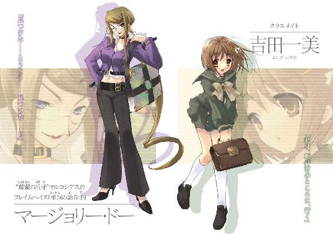
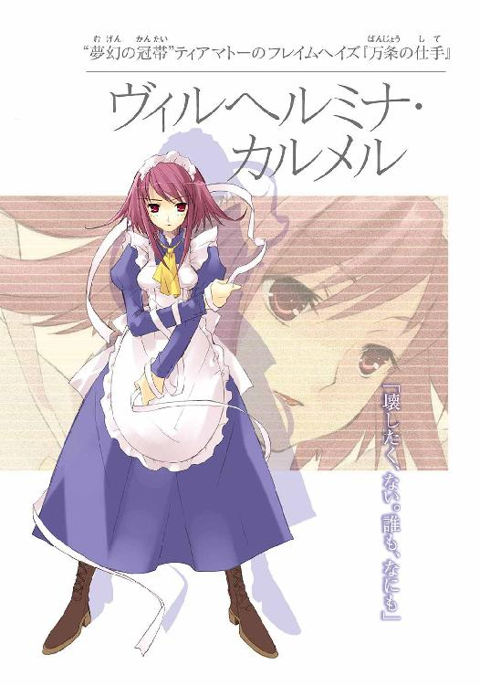

| 灼眼のシャナ 12 | |
| 高橋弥七郎 | |
| KADOKAWA / アスキー・メディアワークス (2013) | |


本書（電子版）に掲載されているコンテンツ（ソフトウェア／プログラム／データ／情報を含む）の著作権およびその他の権利は、すべて株式会社アスキー・メディアワークスおよび正当な権利を有する第三者に帰属しています。
法律の定めがある場合または権利者の明示的な承諾がある場合を除き、これらのコンテンツを複製・転載、改変・編集、翻案・翻訳、放送・出版、公衆送信（送信可能化を含む）・再配信、販売・頒布、貸与等に使用することはできません。
プロローグ
この世──人間の世界を、吹く風のように渡り歩いていた。
人間を喰らって〝存在の力〟を得、理を曲げて遊び続けた。
勝手気儘、ただ刹那の欲を満たすためだけに、生きていた。
ヨーハンを連れて。
自分の放蕩に伴い、跳梁を見せ付け、想像力と欲望の赴くまま、全てを与えて育てた。
その父・ゲオルギウスのような、埒外な大法螺吹きにする気はなくなっていたが、それ以外の育て方をしようとは思わなかった。与えねば、気が済まなくなっていた。育てることは、気楽な楽しみではなくなっていた。そうせずにはいられなかった。
だから、これは欲望に違いない──そう、思っていた。
何者何事も憚らず、誰であれ欲望の成就を邪魔する者を殺し、また次にやりたいことを探した。黄金宝石を見ては欲し、味に凝っては食い散らかし、人間の野心や事業を蹴り飛ばし、時に気になって手を貸し......放埓は続いた。
ただ、自身の欲望だけが理由ではなくなっていた。
ヨーハンは、奇妙な子だった。
誰がなにを訴えても、耳を傾けて問いただした。どんな危機が迫っていようとも、平然としていた。この世での放蕩を、止めようと訴えることもなかった。目の前の事象を己が意思によって自在に変えられる痛快さをともに味わい、しかしそこから一歩踏み込んで、それはなんなのかを確かめようとしていた。
赤ん坊の頃から連れ歩いていたせいか、物心の付く頃には〝存在の力〟の流れを明敏に感じ取ることができるようになっていた。放埓の結果は、軽やかで明るい性向に表れていたが、その反面、『この世の本当のこと』を見つめて、いつもなにかを考えていた。
どうもゲオルギウスとは全く違う人間になっていることに、十年を過ぎてから気付いたが、やはり育て方を変えようとは思わなかった。その子に与えたものは、必ず何か別のものに変化した。知識も、物も、言葉も。興味とは違う、満足感のようなものがあった。
だけど、これは欲望に違いない──そう、思っていた。
与えたい、とは思っていたのだから。しかし、実は結果の方に、より大きな喜びが生まれていたこと、結果を作る子の方に、より大きな喜びを見出していたことは、無視した。想像を叶えさせては理を探り、欲を満たしては根源を思う......その子の意図が理解できず、目的も想像できなかったからである。
あの日までは。
「僕にだって、夢はあるよ」
忘れようはずもない、［宝石の一味］をからかっていた、最初の時期。
まばらな雲が、やけに早く空を走る、秋の夜だった。
お互い命からがら逃げ出し隠れた、インゴルシュタット教会堂の屋根の上。
「あんな誇大妄想狂なんか目じゃない、とびきりの夢がね」
戦った〝紅世の王〟の、あまりな狂信ぶりを二人して笑いに笑った末に出た言葉が、全ての始まりだった。一人を連れた、一人の旅路ではない......二人の旅路の。
「遠い、遠いものさ」
怪訝に見た、月の光に薄っすらと照らされる、繊細な面差しは、父よりは母に似ていた。男特有の、線の太さが現れる寸前の壊れそうな危うさが、たまらなく見事だった。
十七年、経っていた。〝紅世の徒〟にとっては、瞬きの間。しかし、共に過ごし暮らしている間に、望む全てを与え続けた少年は、共に望む全てに挑むようになっていた。二人で、なにもかも。二人で、どこまでも。もはや満足などではない、幸福だけがあった。
まさに、これこそが欲望に違いない──そう、思っていた。
だから、このときも当然のように、なにが遠いのか、すぐに行こう、と返した。
ところがヨーハンは、意に反して悲しい顔になった。こんな顔は嫌だった。させたくなかった。だから、もう一度、言ってやった。私が近づけてやる、私たちならできる、と。
「それは本当に、その通り。でも、君が協力してくれないと、ダメなんだ」
なにを言っているのか、全く分からなかった。いつでも与えて、叶えてきた。共に望みに挑むようになってからも、協力を惜しんだことなど、一度もない。それを疑われるのは心外であり、悲しみでさえあった。
ところでこれは、欲望なのだろうか──初めて、疑問が湧いた。
「僕の前に、ずっと、ずっと、ずっと、あるんだ」
ますます分からない。遠いものなのに、前にあると言う。叶えたいものがありながら、それがなんなのか言わない。これも初めてのことだった。思う間に、
ヨーハンが、ふと唇を近付けた。
そのことに、なぜかびっくりして、思わず身を離した。与えてきたこと、叶えてきたことの中に、今まで全く含まれなかった、たった一つのものに、彼が近付いたと知った。
他でもない、〝彩飄〟フィレスの全て。
いつも一緒なのである。いつも一緒にやってきたのである。いつも一緒に色んなことをやってきたのである。今さら望むようなものが、これ以上あるわけない、そう、思っていた。
ところが今、これ以上求められている、と知った──知って、怖くなった。
与えた自分の全てが、彼を満足させられなかったら、叶えた自分の結果が、彼を失望させたら、どうしよう。パニックに陥って、思わず飛んで逃げた。
数時間経って、こっそり下から屋根を覗き込むと、その真ん前に、笑顔があった。
「揺るがず動かない、強くて恐い、楽しくて優しい、いい加減で可愛い、寂しがり屋なのに素っ気ない......」
そのとき、教会が大爆発して［宝石の一味］が現れた。自分がつけられたのだった。ところがヨーハンは、そっちには目もくれなかった。ただ顔を前に据えて、手を固く繋いで、静かに語りかけていた。
「......その人は、自分で作った壁の向こうにいる」
事ここに至って初めて、自分が彼を批難する、彼を制止する、どんな倫理も気持ちも持ち合わせていないことに気が付いた。ただ、だからこそ、怖くてたまらなかった。
今までの全て、今あるこれは、欲望ではない──では、なんだろう？
しつこく追いかけてくる［宝石の一味］から、逃げた。逃げて逃げて、最後に大笑い、という、いつもの逃避行ではなかった。一緒に逃げて一緒に逃げて、その果てが怖い。今の逃避行の最後に待っているものは、大笑いなどではない、と分かっていた。
では、なんだろう？ ──なにが、待っているのか？
「ずっと君を見てきた。そして、ずっと君だと決めていた」
遂に来た逃避行の果てに、答えがあった。
「君を愛している。僕は、君と一緒に、どこまでも行くんだ」
これは──恋だったのだ。
１ 風来る
御崎市立御崎高校、
年に一度の清秋祭の一日目。
「悠二!!」
とっぷり日も暮れたグラウンド、
その日における、最大のイベント。
「私──」
ベスト仮装賞の発表もたけなわの舞台上、
優勝者のインタビューというクライマックス。
「悠二が──」
赤いリボンに赤いワンピースも目に鮮やかな少女、
マイクを手にしたシャナが、堂々宣言をしつつあった、
そのとき、
全てが一挙に、突如湧き出た力の中で、途切れた。
清秋祭の賑わいも、人々の歓声も、一つの告白も。
シャナ同様、男子三位の受賞者として舞台上にあった坂井悠二と、彼の隣に立っていた女子二位の受賞者である少女との接触に伴い、一つの自在法が力を現していた。
力は風。
その彩りは、琥珀。
接触の片方、二位の少女は、湧き上がった爆風に堪らず吹き飛ばされて、
しかし同じく接触したはずの悠二は、肌に触れる触れないの微風しか感じず、一人、周囲の少年少女らの転がり弾ける飛散から取り残されていた。
気付けばそこは、竜巻の中心。
「キャー!?」「なに？」「わっ、ぐぇ！」「痛、痛っ!?」「うああっ！」
悲鳴を上げながら、風に飛ばされてゆく仮装賞の参加者らを傍らに、
「っ悠二!?」
自身も大きく吹き飛ばされていたシャナは叫び、落ちつつあった舞台の床に掌を強く打ってクルリと反転、体勢を整える。
「なにが──、っ!?」
向き直った先に竜巻が現れていると知って、フレイムヘイズ『炎髪灼眼の討ち手』たる少女は絶句した。絶句して、心底からの焦りに襲われた。
これが、ただの自然現象でないことは明白だった。舞台の上に吹き荒れ渦巻くそれは、輝いていた。辺り一帯の光景を染め上げるほど光り輝く──琥珀色。
そして、色の持つ意味、襲来した者、少年の宿す宝具、双方の関係、存在の危機、全てを合わせた上に、また一つ積み重なる致命的な状況──一つの自在法が発動する脈動を感じて、
シャナは声の限りに叫んでいた。
「悠二、ダメェ──!!」
しかし、その声は、届かない。
竜巻の中心に、ただひとり置かれた悠二の元には、
別の、音ではない声が、届く。
《......》
最初は、声の気配。
《──》
途切れて、何度も。
《──ン》
やがて擦れた端が。
《──ハン》
すぐに、呼びかけになる。
《──たし──よ》
甘く切なく、欲する力に満ち満ちた、呼びかけ。
《──ハン、私よ》
その大きすぎる気持ちの波に、悠二は晒される。
《──ヨーハン、私よ......》
総身に響く呼びかけが、自分という物体に向けられて、
しかし全く、自分という人間に向けられていないことを知らされる。
《──会い、たかった......》
「う、ぅ」
渦巻く風の壁に囲まれた、絶体絶命の窮地。
今、自分の前に現れつつあるもの。
そして、呼びかける声が、
《待ってて......》
遂に、音となって、耳に届く。
「今すぐ、そこから出してあげる」
「ぅあ、ああぁ」
悠二は、歯の根の合わない口から、ようやくの呻き声を漏らす。
いつだったか〝燐子〟が自分の背中に腕を突き込んだときよりも。
いつだったか〝紅世の王〟が自分の存在の核心を掴んだときよりも。
さらに暗い恐怖が襲ってくる。
間違いなく、分かっている。
絶対に、自分は消される。
「あ、ああっ」
その恐怖が、持てる全ての力による抵抗として現れる。
つい昨晩、自分の力として発現させた自在法の感覚が、眼前に迫る存在消滅の危機に呼び起こされる。夢中で、必死に、ただ『止まれ』という咄嗟の反射によって、呼び起される。
「っわあああああああああああああああああああ──!!」
世界の流れから、その内部を切り離す因果孤立空間、自在法『封絶』が。
清秋祭に浮かれ騒ぐ、御崎高校全体を、包み込むような、炎が。
燦然と輝く──〝銀〟の炎が。
囚われた全てが止まる。
人も、物も、全て。
ムサラの頂が、弾ける。
鋭い岩塊のような渓谷群を揺るがして、
虚ろなそれは、動き出した。
光景の意味を理解できた者は、二人いた。
「そん、な......」
「正気覚醒」
一人は、爆風に将棋倒しになる途中で静止した群衆に混じって、しかし鋼鉄の柱のように頑と立ち尽くすフレイムヘイズ、『万条の仕手』ヴィルヘルミナ・カルメルである。
封絶が学校からさらに外へと広がり、銀の炎が直下から湧き上がって奇怪な紋章を描き、外界から隔離された証である陽炎のドームが形成される、その数秒の間を置いても、なお彼女は固まったまま動かない──否、動くことを拒否していた。
自分の前に現れた、あまりに酷い現実に抗議の姿勢を示すように。
あるいは、常に必ず自分の前に立ち塞がる、酷すぎる現実へと駄々をこねるように。
「......して」
「正気覚醒」
封絶を張った少年は、坂井悠二。
この世の裏に跋扈する異世界人〝紅世の徒〟に存在を喰われて死んだ人間。その残り滓から作られ、周囲との繋がりや居場所を当面維持し、やがて力を燃やし尽くして消える代替物『トーチ』。身の内に、何処からか転移してきた宝具を秘めた『旅する宝の蔵』。
「どう、して」
「正気覚醒」
彼の蔵した宝具は、時の事象に干渉する秘宝中の秘宝『零時迷子』。
午前零時になると、その日の内に消費した〝存在の力〟を回復させる、一種の永久機関。この宝具、本来の持ち主は、世に名高き使い手『約束の二人』の片割れ、『永遠の恋人』と呼ばれた一人の〝ミステス〟たる男......ヨーハン。彼は今、『零時迷子』の中に封じられている。
「どうして、皆......」
「正気覚醒」
ヨーハンの封じられた『零時迷子』は、変異を起こしていた。
刺客たる〝紅世の王〟──〝壊刃〟サブラクの攻撃により瀕死の重傷を負った彼は、この自身の核たる宝具の内に封じられ、他のトーチの中へと、無作為転移という名の緊急避難を行った。が、その寸前、サブラクは一つの自在式を『零時迷子』に打ち込んでいた。結果、彼の構成を司る部位は異常な変質を起こし、その様をヴィルヘルミナだけに見せ......転移した。
「どうして、皆──私の!!」
ヨーハンを封じたのは〝彩飄〟フィレス。
『約束の二人』の、もう一人の片割れ。今、御崎高校清秋祭に、愛しい男に起きた変異を知らず、風と共に現れつつある〝王〟。彼女らの目の前で、愛しい男を〝ミステス〟の中から取り戻そうとしている、女。そして、ヴィルヘルミナ・カルメルの命の恩人にして、友──
「正気覚醒!!」
「ッ!!」
パートナーの大声にどやされて、ようやくヴィルヘルミナは自失から覚めた。しかし、覚めても動揺を抑えることはできない。銀の光を放つ封絶の中、
「ティア、マトー」
常の謹直な彼女を知る者には想像もつかない、頼りなく揺れる表情で、彼女はフレイムヘイズたる己に異能の力を与える〝紅世の王〟──最も長く共にあるパートナー、〝夢幻の冠帯〟ティアマトーに答えを求める。
「私は、どうすれば」
起きている事態についての、おおよその見当はついていた。
他でもない、フィレスから聞かされていた自在法、『風の転輪』である。
人と人の接触によって永続的に目標物を探す、また同時に、その目標物を見つけた地点に自らを運ぶ出口ともなるという、風の便り。ヨーハン転移後、彼女がこの探査の自在法で『零時迷子』を宿した〝ミステス〟を探しているだろうことは、容易に想像できた。
が、よりにもよって今見つからなくても、よりにもよって自分の前に来なくてもいいではないか──そう、自分を取り巻く世界へと、ヴィルヘルミナは喚き散らしたい思いだった。
この、問いかけに隠した苦悩を、
「阻止!!」
鞭撻が一声、叩いて正気に戻す。
竜巻とは違う、最悪と言っていい危機的状況が、別の場所で起きていた。
「なにを──、っ!?」
尋ねようとしたヴィルヘルミナは、驚愕に声を切った。
まるで吹雪のような盛大さで、群青色の火の粉が撒き散らされる。
その中、頭上を竜巻へとまっしぐら、怖気を誘う殺気の塊が飛び越えていた。
「──っく!!」
受け入れたくない全てに立ち向かうためではなく、その全てに向かう誰も彼もを止めるために、ようやくフレイムヘイズ『万条の仕手』は動き出す。
まずは目の前、自分を飛び越えていった殺気の塊を、
群青の炎でできた獣を、追う。
ロドピの山々を、過ぎる。
雄大な起伏を眼下に、
それは、標的を目指す。
光景の意味を理解できた、もう一人。
「──は、は！」
フレイムヘイズ『弔詞の詠み手』マージョリー・ドーは、狂乱と激情の中にあった。その身を覆う、寸胴の獣のような群青色の炎の衣〝トーガ〟が、常以上に輝度を増す。零れ落ちた炎が、まるで流星の尾のように零れ落ち、バチバチと爆ぜ光る。
「ははっ!! ははははははははっ!!」
「おいっ！ マージョリーよ!!」
自身に異能の力を与える〝紅世の王〟──〝蹂躙の爪牙〟マルコシアスの声も届かない。今の彼女の中には、刻まれた記憶、沸き立つ憎しみ、その二つしかなかった。
（はは──は、はは──）
砕け崩れた、あいつらの屋敷の石塀。
焼け落ちた、同僚の娘たちがいた部屋の梁。
それらを覆い隠して立ち上る、濛々たる黒い煙。
なんの煤か、誰の血かに塗れた......無力な自分の腕。
目の前を近くを彼方を埋めて、ただ燃え上がる、赤い炎。
その中、
唯一つ聳える、狂気の姿。
（見つけた──とうとう──見つけた──!!）
自分へと覆い被さるように、太い手足を大きく広げる、歪んだ西洋鎧。なにも持たない、その汚れた板金の隙間からザワザワと這い出そうとしている、虫の脚のような物。鬣のように炎を噴きあげる兜。まびさしの下にある、目、目、目、目......
（私の──）
それら全てが表す、笑い。
嘲笑。
（私の、全て──!!）
かつて自分に向けられた、その嘲笑を叩き潰すため飛べることに歓喜する。
「はは！ はは、はははははははは!!」
「ちっ、ダメか！」
マルコシアスは舌打ちした。
彼は知っている。
数百年からの昔、情厚き女、マージョリー・ドーが、全てをなくして生きていたことを。そんな自分の手で、壊し、殺し、奪い、嘲うことで復讐してやるはずだったもの──全てをなくした自分に残されていた、本当に最後のもの──を、一人の〝紅世の徒〟によって壊され、殺され、奪われ、嘲われたことを。ゆえに抱くようになった、深く大きく激しい怒りと憎しみを。せめて、その〝徒〟だけでも殺さんとしてフレイムヘイズになったことを。なのに、気付いたとき、その〝徒〟が忽然と消えてしまっていたことを。
彼は知っている。
ゆえに、相棒の怒りを止めることができない。
止まるわけがないことは、分かりきっていた。
その相棒が、咆える。
「ブチ、殺す」
腹の底からの、喜悦を表して。
「殺す、殺す」
封絶を生み出した、なにかに向かって。
「殺す殺す殺す」
ブチ殺すため、探して探し続けた、他に類を見ない炎の色を持つ〝徒〟──
〝銀〟を。
なぜ今、銀の炎が現れたのか。
一体誰が、銀の炎を現したのか。
詮索どころか思考の欠片さえない。
ただ、数百年もの歳月を費やして、しかしその手がかりの一つさえ得られず、足跡の欠片さえ見つけられなかった怨讐の対象が、眼前に燦然と輝いた。
だから、
「殺す、殺す殺す、殺す殺す殺す殺す殺す殺す殺す殺す殺す殺す殺す殺す殺す殺す殺す!!」
それだけ。
トーガが燃えて燃えて燃え盛って、宙をすっ飛ぶ。
銀の炎を生み出した、封絶の中心へと向かって。
と、彼女の進路を、殺しの欲求を遮るものが。
「!?」
織り上がる純白のリボンだった。
疑問は半秒持たず、憤怒と破壊衝動に変わる。
「──ッ」
もう、誰がリボンを放ったのか、どのような意図で遮ったのか、それすら考えられない。
遮る、その行為だけに向けて、炎の獣が牙だらけの大口から怒声を轟かせる。
「ッグアオオオオオオオオオオオ!!」
瞬間、群青色の炎がトーガの周囲に巻き、そして前に溢れた。
圧力の実感を伴う凄まじい破裂音が、人満ちる校庭の真上で爆ぜ溢れた。
トラキアの野を、馳せ下る。
緑の広野を眼下に、
それは、標的を目指す。
光景の意味を理解できなかった者は、二人いた。
「痛っつ、っくそ！ どうなってんだ」
「一体なにが......、っ!? 竜巻、なのか？」
佐藤啓作と田中栄太である。
少年二人は、倒れたままピクリとも動かなくなったクラスメイトらを押しのけて、ようやく立ち上がる。痛む箇所を押さえようとして、今さらのように気が付いた。
「あ......封、絶？」
佐藤は周囲の、学校を包んで立ち上る陽炎のドーム、という光景に。
「おい、これ！」
田中は自分たちを囲んで浮かぶ、群青色に光る文字、あるいは記号の縒り合わさった輪に。
彼らは、今のような光景も、浮かんでいる輪も、初めて見たわけではなかった。双方、記憶の中から、近似する情景を引き出す。
（たしか、アイゼンの兄妹が襲ってきたとき......）
（......〝徒〟だ！）
遅ればせながら、戦いの到来だと知り、バッと顔を見合わせる。
「マージョリーさん！」
「姐さん！」
同時に叫んだ。
常ならば自分たちに毅然傲然と指示を下す親分を、子分として探す。
この輪は、封絶の中でも常人の行動を可能にする防護の自在法である。マージョリーが彼らのために作った護符──正確には、坂井悠二という危険極まりない〝ミステス〟を〝徒〟から守るために作った護符のオマケで、悠二のものは栞型、彼らに与えられたものは付箋型──の効果だった。
「......」
「......あれ？」
これまで、二人が〝徒〟との戦いに参加したときは、すぐ群青の炎を操る女傑が現れて、行く先や対処の方法を指し示してくれた。しかし今日は、付箋を通じての声一つ無い。
「変だな、っわ!?」
「佐藤!!」
訝る親友の肩を、田中が叫びとともに引っ張った。
「な、なん──」
だよ、という声を出す間もない一瞬、
ゴオッ、という燃焼音を引き連れて、見紛うはずもない彼らの親分、群青の炎を操る女傑、『弔詞の詠み手』マージョリー・ドーがトーガを纏い、群衆の上を飛び越えていた。
その前方にリボンの網が織り上がり、遮り、
対するマージョリーが炎を怒涛のように前方へと放射し、大爆発が起きた。
（こんな人が大勢いる中で!?）
（あのリボンは──ッ！）
思う間に、彼らも再びの爆風で吹き飛ばされた。
それは、親分が彼らに全く気を払っていない証だった。
マルマラの内海が、広がる。
穏やかな青の波立ちを眼下に、
それは、標的を目指す。
群青の輝きが琥珀の彩りに混じる、風の壁の中、
封絶を張った自覚もなく、悠二はただ立ち竦む。
「あ、ああ......」
そんな、声とも呼べない喘ぎだけをようやく絞り出していたが、代わりに体は極度の恐れから萎縮して、ピクリとも動かない。
と、彼の前──舞台の中央に、新たな光が生まれる。
周囲で渦巻く風と同じ、しかしもっと明るい琥珀色が。
最初は光点として、やがて灯火として、すぐに篝火に──そして、
「もう、二度と」
今や明確な響きを持つ声とともに、渦巻く炎が、彼を包み込まんとのしかかってくる。
「う、わあっ！」
悠二は思わず、これを両の掌で突き飛ばそうとした。その首に、紐に通して下げた火除けの指輪『アズュール』が、拒絶の意思に反応して、封絶でも止められないものを吹き散らす。
が、
「離さない」
散らすことができたのは、炎だけだった。
火除けの結界に阻まれ失せる、その琥珀の輝きの中に、女が立っていた。
『約束の二人』の一人──〝彩飄〟フィレス。
目に付くのは、両肩にある大きな、鳥とも人とも見える顔を象った盾のような装飾品。その内に、華奢な身を、各所に布を巻いたつなぎのような着衣で覆った、美しい女がある。ただ、美しさは、感嘆を抱かせる壮麗ではない。戦慄を呼ぶ凄艶だった。
風に靡く長い髪の中から、容赦というものを感じさせない鋭い双眸が、悠二を見つめる。熱く見つめて、熔けるように笑って、しかし途轍もなく恐ろしい。
なぜなら、悠二には、この〝紅世の王〟が、
「ヨーハン」
そう呼びかけ見つめていながらも、『坂井悠二という存在』を全く認めていないことが、はっきとり分かったからである。
彼女にとって、眼前で震える〝ミステス〟は、愛する男を中に秘める、ただの容れ物に過ぎなかった。だから至極当然のこととして、容れ物を開けようと、手を伸ばす。
「あ、あ......」
悠二は、彼女を拒絶しようとしたことを後悔した。
彼女に向かって突き出した掌、その分だけの距離が、縮まっている。
両の掌は、まるで自分の消滅への橋渡しとして、動かず宙にあった。
そこにフィレスが、鏡合わせのように、自分の掌を差し伸べてゆく。
「さあ、来──」
刹那、
「待てぇ!!」
ガン、
と真上から、二人を切り離さんと、掌の間へと『贄殿遮那』の長い刀身が突き立った。
全ての自在法を退ける宝具たる大太刀の表面で、琥珀色の火花──それこそ『零時迷子』を入れたトーチへと分け入り、分解し、封印を解除するための自在法だった──が散る。
「！」
我に返った悠二は、呪縛から解き放たれたように飛びのいた。安堵の吐息よりも早く、大太刀の上に翻る黒衣『夜笠』、それを纏ったフレイムヘイズ『炎髪灼眼の討ち手』たる少女へと呼びかける。
「シャナ！」
紅蓮の火の粉を舞い咲かせる炎髪越しに、鋭い声が飛ぶ。
「悠二、下がって！」
「〝彩飄〟フィレス！」
シャナの首に下がったペンダント、神器〝コキュートス〟から、少女に力を与える〝紅世の王〟──〝天壌の劫火〟アラストールが、遠雷のような重く低い声を響かせる。
「まず話を聞け!!」
「おまえの会おうとしてる──」
言いつつ、切っ先を引き抜き着地したシャナの前、
「......」
思わず手を引いていたフィレスが、髪の間で目を眇めた。
と突然、
ガバッ、と両肩の盾にある顔が、口を開けた。
「！」
驚き警戒したシャナは、背後からの強風に晒される。
周囲の竜巻をも吸い込み呑み込んでゆく、フィレスに向かって吹く風──それが、肩に開いた二つの口に、莫大な量の空気が吸い込まれたこととイコールであると気付いた、
瞬間、
「邪魔よ」
軽く指された指先から、突風が噴き出した。
「っ！」
バン、と強烈な衝撃波がシャナの全身を叩く。
が、討ち手としての本能が、冷静な判断と機転を、攻撃を受けている瞬間にも利かせる。吹き飛ばされる、その感覚を得ても抵抗せず、どころか自在の黒衣を大きく固く、風を受ける帆として張っていた。
その裾の端に、悠二をぐるぐる巻きにして。
突風によって宙へと放り出されたシャナは、同時に守るべき悠二を連れ、大きくフィレスとの距離を取ることに成功する。
はずだった眼前に、
「返して」
「!?」
フィレスがすでに舞い上がっていた。右の拳を大きく後ろに振りかぶる姿勢で。
「っく！」
そこに大きな〝存在の力〟の集中を感じたシャナは、咄嗟に大太刀を前に立てて、防御の姿勢を取った。
フィレスは構わず、無骨な手甲で鎧われた拳を打ち放つ。
その周りに、
（な!?）
シャナは琥珀色の竜巻が湧くのを見た。
バアン、と再び、少女の全身を風が強く打つ。宙にある体は、圧力を伴う煙幕のような琥珀色の輝きの中、怒涛に呑み込まれる小石さながら、無茶苦茶に翻弄された。
（くっ、どこに粉れた──？）
急ぎ、フレイムヘイズの基礎技能として、敵の気配を取る。
はずだった感覚が、
（っ!?）
濁流のような風の中、混乱する。
自身を取り囲み吹き荒れる気流全体が、彼女の気配で満ち満ちていた。
（しまった──『インベルナ』だ！）
〝彩飄〟フィレスが持つ多彩な力の一端、体の周りに発生させた風を、自身の一部として制御統制する自在法『インベルナ』である。
彼女の友であったヴィルヘルミナから、もしものときのためと聞いて、しかし実際に受けた攻撃に、シャナは僅か、不意を衝かれた。
通常、フレイムヘイズや〝徒〟は、敵の中に生まれる〝存在の力〟の気配や集中を機敏に感じ取っている。達人であれば、そこから様々な行動の生まれることを察知して対処することもできた。が、〝彩飄〟フィレスの『インベルナ』は、それらの前提を覆してしまう。
つまり、攻撃を仕掛ける際、自身の気配を宿した風で体を包み、気流全体をひとつのフィレスとして、敵を飲み込んでしまうのである。細かな気配や攻撃の仕掛けの感知など、この自在法の前にはなんの役にも立たない。一対一の場合は甚だ危険な、一対多でも存分に敵を煙に巻ける、恐るべき能力だった。
悠二を黒衣『夜笠』の端に捕らえて宙を翻弄されるシャナが、
（気配を消す〝天目一個〟の、丸っきり逆──）
などと悠長に四半秒、思っている間に、
ズドンッ、と、
「っがは!?」
その『インベルナ』に乗って襲い掛かったフィレスの拳撃が、立てた大太刀の横を擦り抜けて、シャナの胸郭へと鋭く重い打撃を叩き込んでいた。メキメキと肋骨が拉げる感触の中、それでも逆襲の叫びを、炎髪灼眼のフレイムヘイズは上げる。
「悠二、自分だけを!!」
暗号のような指示を下すや、まだそこにある拳、フィレスの感覚を逃さない内に一撃、
「っだああ！」
自身を中心に紅蓮の爆発を起こした。
銀の炎を過ぎらす陽炎のドーム中空に、琥珀の風を吹き散らす紅蓮の爆火が閃き、弾けた。
煽りを食った人波が模擬店が爆圧で吹き飛び、撓み揺らいだ校舎の窓ガラスが乾いた音を立てて一斉に砕け散る。
「はあっ──、はあっ──」
空中、爆発の跡に浮かぶシャナは、片手で拳撃を受けた胸を押さえつつ、周囲へと警戒の目線を張り巡らせた。その傍ら、黒衣の端に絡めた悠二を引き寄せる。
「......う、ぐ」
宙を何度も高速で振り回されたことへの苦悶から、悠二は呻き声を上げていたが、体自体は全くの無傷だった。紅蓮の爆発による怪我は、焦げ目一つ見えない。
これこそ、彼が紐を通して首にかけている、火除けの指輪たる宝具『アズュール』の効果だった。この指輪は、〝存在の力〟を込めることで、炎による攻撃を防ぐことができた。また彼が先刻の、シャナによる片言の指示を瞬時に解釈、実行できたのは、幾度も戦いを共に超えてきた経験からの成果である。
とはいえ、『アズュール』で自身を守るだけの結界を張ってシャナの炎を防ぐ、という指示を実行するだけで、すでに少年・坂井悠二の対処能力は限界に近かった。様々な理由から、常人を超える力を身に秘めてこそいるものの、所詮は一高校生の付け焼刃である。『夜笠』の端に絡め取られ、上へ横へと振り回された、それだけで息が上がってしまっている。
「はぁ、はっ、シャ、シャナ、大丈──っ!?」
またその言葉が終わる前に振り回された。
シャナが、悠二との中間に支点を置き、高速で縦に半回転していた。その回転の先端は、振り下ろす『贄殿遮那』。
「っだ！」
迎え撃つのは下から舌打ちとともに迫る、
「っち！」
爆発のダメージも見えないフィレスが振り上げる拳。
手甲で鎧った拳と大太刀の刃が激突、その衝撃を利用して、双方は宙に分かれた。
そのとき、
「っは!?」
思わぬ方向からの攻撃を感知したシャナは、素早く黒衣を縮めて悠二を抱き寄せる。
「わっ!?」
「悠二、もう一度！」
「！」
再び『アズュール』の結界が生まれ、シャナの背にあった紅蓮の双翼が消える。
新たに浴びせられた、多数の炎弾による攻撃とともに。
結界の外で次々に炸裂し荒れ狂う炎の色は、群青。
（これ、マージョリーさんの──!? どうし）
驚く悠二の足に、リボンが絡まる。
「てっ、うわ!?」
シャナとともに真下へと牽引され、上を向いた悠二の鼻先に、フィレスの、なにかを掴み取るかのような掌が、バグッ、と握り込まれる。
（半秒遅れていたら）
と恐怖した悠二の下に、今度は引っ張られる先、倒れる人ごみで埋め尽くされたグラウンドが迫る。
（ぶ、ぶつか──）
と、人々のすぐ上に浮かんで、彼の足に絡んだリボンを引いている人影が見えた。それは、狐のような仮面と純白のリボンの鬣という戦装束を纏ったヴィルヘルミナ・カルメル。その、桜色の火の粉を舞い散らす幻想の姿は、引く力を中途で緩め、自ら飛び上がってくる。
「悠二！」
「っと」
シャナの声を受け、また結界を解く。
少女の背に、再び紅蓮の炎からなる双翼が燃え上がった。爆発のような噴射によってぐんぐん下方へと加速し、舞い上がってくるヴィルヘルミナと交叉する。
ヴィルヘルミナが紅蓮の突進を、無数のリボンによる柔らかな抱擁で優しく受け止め、しかし鋭く回転させて、フレイムヘイズ二人、空中で背中合わせの体勢を取った。
仮面が、押し寄せる琥珀の風に、
「フィレス！ どうか話を──」
シャナが、猛然と襲い掛かる群青の獣に、
「待って、『弔詞の詠み手』!!」
二人同時に叫んでいたが、返事は来ない。
それぞれに敵意だけが漲っているのが分かる。
背中合わせで宙に浮くシャナとヴィルヘルミナを、群青色に燃えるトーガと琥珀に渦巻く『インベルナ』が、両側から挟み込むように押し潰すように、猛然と迫ってくる。
「駄目か」
「制圧鎮静」
アラストールは説得を切り上げ、ティアマトーが唯一だろう対処の方針を示す。
ヴィルヘルミナは仮面の中で苦渋の沈黙を保ったまま、自身とシャナ、悠二をすっぽりと囲む、繭のようなリボンを一瞬一気に織り上げた。
外からは、空中に大きなボールが突然現れたように見える。
と、これが突然、十数個にも分かれ、ふわふわと宙を舞い飛び、地を跳ね回る。フィレスの拳撃が、マージョリーの炎が、次々とこれらを破壊してゆく。
ボールの一つ、その中で、僅かに得た時間を使い、
「ヴィルヘルミナは〝彩飄〟と戦える？」
「......」
「じゃあ、『弔詞の詠み手』をなんとか抑えて。私も〝彩飄〟を、できるだけ傷付けないように止めてみるから」
「......了解であります」
二人は決め、攻撃の到来とともに、合わせた背中を離した。
リボンのボールが解けた途端、
悠二を前に抱きつかせたシャナが、紅蓮の双翼を広げて飛び上がり、これを追って、琥珀の風も上昇する。その後を追おうとした群青の獣の前に、桜色の火の粉を舞い散らすヴィルヘルミナが立ちふさがる。
銀色を壁に過ぎらす封絶の中、各々に力を振り撒いて、四つの輝きが激突する。
プロコネソスの丘を、越える。
くすんだ岩肌を眼下に、
それは、標的を目指す。
校舎の陰で、顔色を蒼白にした佐藤が呟く。
「ひでぇ......」
「......っ、......」
田中は、その傍らでしゃがみ込んで、必死に吐き気を抑えていた。
二人は、学校全体を覆った封絶から取り残されていた。
親分と崇め慕うマージョリーが、いつか彼らの街・御崎市を出て行くときは、その後を付いてゆく。そんな無謀に過ぎる夢を公言して憚らなかった子分らは今、まさしく望んでいたはずの場所・戦場にあって、『この世の本当のこと』に直面させられていたのである。
御崎高校清秋祭一日目のクライマックスに突如、湧き起こった暴風で吹き飛ばされた人々が倒れかける──瞬間に静止した世界の、異能者たちによる蹂躙。所にも人にも構わず、炸裂する群青の炎、降りかかってくる琥珀の衝撃波、そして時折、紅蓮の高熱までも。全ての粉砕が、四散が、炎上が、観衆の詰め掛けるグラウンド直上で行われた結果は、まさに酸鼻の極みと言うべき惨状を呈していた。
群青の炸裂で引き千切れる人々、琥珀の衝撃波で枯葉のように吹き飛び拉げる人々、紅蓮の炎に焼き砕かれる人々......皆、彼らがたった今まで混じって騒いでいた観客、紛れて楽しんでいた御崎高校の生徒、一緒に笑い合っていたクラスメイトだった。
佐藤は、そのあまりに凄惨な光景を生み出した、宙を舞い踊る四つの輝きを、竜巻の中から湧き上がった、銀色の光が時折過ぎる陽炎のドームを、振り仰ぐ。冷や汗を頬に拭い、震える唇を噛み、できるだけその下を見ないようにしながら。と、
「田中、無理すんな!?」
傍らで、田中が蝋のように蒼白な顔を上げて立とうとしていた。
「だ、大丈夫、だ」
その膝は、常の力強さしなやかさを失い、ガクガクと震えていたが、もちろん佐藤にはそれを馬鹿にする気などない。ただ一言だけ、反論した。
「大丈夫なわけ、ないだろ」
「......」
田中は黙った。
彼は、流れ弾を避ける際、まともに見てしまったのだった。
封絶の中、炎弾を受けて燃え上がり、また砕かれる、一人の姿を。
それは......そう、それは......
佐藤は、彼がパニックを起こしていないことを、奇跡のように思っていた。たまたまその場を見ず、大きく弾き飛ばされ、今の物陰に逃げ込んだ自分が、非常な幸運に恵まれていることも分かっていた。自分が同じ目に遭ったら、耐えられないかもしれない──
（──いや、耐えられない、だろうな）
飾る気もなく、そう思った。そして、
「いや、やっぱり大丈夫、か」
慰めとしても気の利かない言葉に、己への怒りさえ覚えながら無理矢理に笑い、
「後でちゃんと......、全部直してくれるんだから」
途中で一旦、唾を飲んで、ようやく言い切った。
田中は少し黙ってから、ようやく頷く。重く、僅かに。
「ああ。姐さんが、嘘つくかよ」
しかし、その声は、言葉の強さとは裏腹に、肺を気遣うような、頼りないものだった。
「......ああ」
悔しさを滲ませて、しかし強く、佐藤は親友の肩を掴んだ。顔は見ず、見せず、フレイムヘイズと〝紅世の王〟が戦い合う空を、また仰ぐ。
彼らはマージョリーから、〝紅世〟について聞けるだけ、理解できるだけの知識を教わっていた。因果孤立空間・封絶の内部で起こった破壊は、断絶させた外部と整合させる形で復元が可能であることも、その一つ。
「あんたたちに渡す、この付箋に込められた自在式は、封絶の中でも行動を可能にする代わりに、他のモノのように修復できなくなる、ってデメリットも持ってる」
付箋を渡す際のマージョリーの言葉である。
「だから、封絶の中に囚われたと気が付いたら、まず、自分の身を守ることから始めなさい。封絶が小さかったら、そこから逃げ出しなさい。これは助言じゃなくて命令よ」
彼ら二人が戦闘の恐怖に抵抗せず、周りの惨状を置き去りにしたまま退避したのは、その理屈と命令の後押しあってのことだった。でなければ彼らも、無理に踏みとどまるなり混乱するなりして、無駄死にしてしまっていたのだろうから、指示に間違いはない。
それでもやはり、実際に人々が無茶苦茶にされる様を背に逃げ出す、という行為は、戦いに加わろうと意気込んでいた少年らの矜持、自信、希望を、粉々に打ち砕いていた。それら彼らにとって、普段の大言壮語が逆転して自分に降りかかる、大きな屈辱でもあった。
「くそっ！」
佐藤は、どうしようもない自分を、心底から罵倒した。
「......」
田中は答えない。同じ気持ちであることは分かりきっていた。
悔しさ、ただそれだけ。
悔しさ、それを感じていながら、体も心も思う方向に動いてくれない。
『なにもできないと分かっていても、なにかをしたい』
そんな無謀で無邪気な前進の意欲こそが、二人を支えていた。かつて、街全体を覆った山吹色の封絶の中を走ったときのように。かつて、御崎市駅に巣食っていた〝徒〟の施設へと、〝燐子〟の監視を掻い潜り向かったときのように。
しかし今、少しばかり厳しく過酷な状況になったくらいで、体は強張り、心は竦みあがってしまった。彼らに分かったのは、人間と〝徒〟の間には、気構えや努力ごときではどうにもならない、絶対的で絶望的な差がある、ということだけだった。
言い訳の効かない、実体験による無力感。
この、少年という生き物にとって最悪の一撃、絶対に味わいたくない気持ちの中、二人は、一旦受け入れれば、今目指すもの全てが終わる、『どうせ人間には』という諦観や『ここまで頑張ったんだから』という妥協と、必死に戦っていた。
封絶の中に踏みとどまるという、非力な身にできる最大の行為で。
戦う炎と炎を、ただ見るために。
（できて、こんな程度、なのか）
佐藤は強張り過ぎて震える手を、胸ポケットに入れた付箋──彼らの周りに自在法を作り、この世界を歩く権利を与えてくれる力の源──に当てて、思い出す。
かつて、マージョリーが自分たちに投げつけた、二つのものを。
一つは、〝徒〟が使っていたという、恐ろしく重い、西洋風の大剣。
もう一つは、言葉。
（──「あんたたちの目指してるものは、これに全部入ってる」──）
あれがいかに優しい、親分からの心遣いであったのかを、佐藤は（それを勝手に持ち出して叱責されたことも含め）不肖の子分として、ようやく痛感していた。彼女の戦いは、彼女らフレイムヘイズの戦いは、重い剣一本持ち上げてどうにかなるようなレベルでは、到底なかったのである。
（他には、本当に、全然、なにも......）
フレイムヘイズにとって、〝徒〟にとって、人間とは全く眼中に入れる必要のない、踏み付ける石ころ程度の存在に過ぎない。それが、肌に感じる熱波、震える空気で分かる。
彼ら二人の何が常人と違うかといえば、封絶の中でも止まっていないということだけで、それもマージョリーに借りた力あってのこと。いつだったか、その借り物の力で重い剣を持ち上げ、これで自分も戦える、と得意がった馬鹿な自分をも見据えて......
（でも、俺は）
佐藤は見上げることを、まだ止めたくなかった。理屈ではなく、そうしていたかった。状況に加わることを望むように、その堅い口を開ける。
「上、な」
「え......？」
座り込んでいた田中が、淀んだ顔を重たげに上げる。
「カルメルさんが、マージョリーさんを妨害してるみたいだ」
「なん、で......？」
「分からん」
「なんだ」
再び視線を地に落とした田中は、その陰から声を出す。
「なあ、佐藤......姐さん、ああなったのは」
一つの姿を思い出して、さらなる恐怖に背筋を震わせた。
「やっぱり......〝銀〟、のせいか？」
佐藤は炎の激突するさらに上、ときおり陽炎の壁を過ぎる輝きを見て、小さく頷く。
「たぶんな」
彼らは、マージョリーの所業に戦慄こそしていたが、そうする行為を止める気にはなれなかった。自分たちに止められる程度のものではないことが、分かっていた。
二人とも〝銀〟──このフレイムヘイズと〝紅世の徒〟、双方の誰も実態を知らないという謎の〝徒〟の姿を、マルコシアスによって見せられていた。
また、マージョリーの巨大な怒りと憎しみを、暴走した彼女自身が撒き散らしたという火の粉に触れることで、嫌と言うほどに共感させられてもいた。
なにが彼女を邪魔できるものか、と感じさせられた、あの銀色の炎を持つ怪物が、どんな理由でか、今ここに、封絶という形で現れている。
（マージョリーさんが、ああなるのも当ぜ──）
「──ん？」
ふと、佐藤は事実のどこかに引っかかりを覚えた。
「どう、した......？」
尋ねる田中には答えず、考える。
（どこに、ヤツがいるってんだ？）
いつしか、根本的な疑問が胸を占める。
（炎の、色？）
封絶は張った者、あるいは、構成を維持している者の炎の色を表す。
そう、マージョリーから確かに聞いていた。
（どこに銀の炎を持つヤツがいる？）
胸の内に、疑問が湧いてくる。
（あそこにいる中の、誰が〝銀〟なんだ？）
宙を舞う四つの煌きを、また見上げる。当初は、
（清秋祭を襲って、爆風でみんなを薙ぎ倒した〝徒〟が、当然〝銀〟......）
と思い込んでいた。しかし、
（......違う）
動転に揺れ、恐怖に凍る心を、必死に動かして考える。
陽炎のドームの中空で、シャナの紅蓮と、もの凄い速さで激突している、来襲者だろう〝徒〟の炎は、出現当初から一貫して琥珀色である。言うまでもなくマージョリーは群青色で、ヴィルヘルミナは桜色だと聞いている。
（じゃあ、この銀色は、いったい誰の炎なんだ？ まさか、どこかに隠れて──）
という疑問を抱く中、
唐突に一人の少年の姿が浮かぶ。
「あ......っ！」
「どう、した」
「いや」
今の田中に気付かれるほどに表情を変えた佐藤は、それでも一言で声を切った。口走りそうになった言葉を、咄嗟に飲み込む。
「なんだよ」
「......」
もう一度、田中に問われて、しかしなおも沈黙を守る。
（まさか）
否定しようとするが、しかし心のどこかでは、考えられることだとも思う。常から密かに羨み、心の奥底では妬みさえ持って見ていた、人間ではない友人......しかし今、それを口にしようとは思わなかった。
友人に向けているのが醜悪な感情であるという、一人前の自覚と自重からではなかった。
友人の苦悩を知っていたがゆえに、その告発を避けるという思い遣りからでもなかった。
その友人が自分たちを超えたことを口にしたくないという、子供っぽい反発からである。
（くそっ、俺は──）
全部分かって、それでも迷い、惑う。
友人......宝具『零時迷子』の〝ミステス〟坂井悠二が、マージョリーの標的になっている可能性の大きさを理解しながら。そんな自分に、嫌悪感さえ抱きながら。なおも迷い、惑う。どうしようもない嫉妬と焦燥で、体が縛り付けられる。
（俺なんかに、なにができるってんだ......）
無力な少年らを他所に、戦いは続く。
イムラリの島を、渡る。
ちっぽけな地面を眼下に、
それは、標的を目指す。
遮二無二、銀の炎を作り出したなにかへと突進する群青の獣『弔詞の詠み手』の後方から、仮面にリボンの鬣を靡かす『万条の仕手』が追う。
「っは！」
ヴィルヘルミナの掛け声に乗り奔ったリボンが、トーガの獣をスッポリ包む回廊を、宙に作り上げた。完成とともに、リボンの表面に桜色の自在式が浮かび、トンネルが湾曲する。
「邪魔、を──」
この中をすっ飛ぶ獣、怒り狂うフレイムヘイズ『弔詞の詠み手』が唸る間に、彼女の飛翔が自在式の干渉を受けて曲がり、誘導されていた。終着する先は、茣蓙の敷かれた無人の屋上。
「──するなぁ!!」
「マージョリー!!」
相棒による制止の声には、やはり効果がない。
群青の獣は行く先に向けてクルリと体を反転させ、誘導者の意図通り、屋上に着地する。
だけでなく、
その着地した場所が水面であるかのように、ドポンと火の粉を水しぶきのように上げて埋没した。途端、激突音や爆発の代わりに群青の炎が屋上へと溢れ、一面を埋めた。
「!?」
後を追い、上空から舞い降りるヴィルヘルミナは、驚きの吐息を仮面の奥で漏らす。
と、どこからか、轟々と歌声が鳴り響く。
「パイ作ったのはぁ、だれ!?」
「警戒！」
言わずもがななことを、あえてティアマトーが叫んだ途端、屋上を埋めていた炎が一斉に鎮火する。
（どう、出る......？）
ヴィルヘルミナは、これが助走、爆発前の静けさであると察知し、防御の自在法を張るための力を練る。
「パイ取ったのはぁ、だれ!?」
歌を掛け声に、屋上の面積分の炎が一挙に弾け、宙に浮かぶ標的・ヴィルヘルミナに向けて襲い掛かった。しかも、
「っは!?」
それは単なる攻撃ではない。
「かれ!!」「あのこ!!」「パイめっけたのはぁ、だれ!?」「おれ!!」「かれ!!」「パイ食ったのはぁ、だれ!?」「あのこ!!」「おまえ!!」「おれ!!」「かれ!!」「あのこ!!」
弾けた炎が幾十ものトーガとなって、ヴィルヘルミナの傍らを通り過ぎようとしていた。小さな炎も無数の炎弾となって、逃げ場を与えない、逆巻く破壊の豪雨となる。
「──」
しかし『万条の仕手』は、この程度の数を捌くことには、なんの苦も感じない。
「──はっ！」
叫ぶでもない、小さな声を乗せた舞の一指しで、鬣が万条の名のまま華麗に広がり、全てのトーガと炎弾をリボンで捕らえる。が、
「トラバサミだ！」
マルコシアスが絶叫する、そのときには既に、
バババババン、
「!?」
と捕らえた全てのトーガが炎弾が炸裂し、しかもそれだけでない、変質まで見せていた。火花の散った後に残されたのは、リボンを取り巻いて回る自在式。
ヴィルヘルミナはそれら紋様の種類から、
（捕縛の自在式！）
と瞬時に看破し、戦慄した。
その回るにつれて、リボンの上を群青色に輝く自在式が、高速で侵食してくる。信じられないレベルの自在法制御だった。
「切除！」
ティアマトーの指示は、中途までしか果たせなかった。鬣の半分方を切り離したときには、既にリボンを伝った群青の自在式が、彼女を宙に縫い付けていた。
そして、
「パイが欲しいって泣いたのはぁ──────スゥッ──」
怖気を誘う吸気音が、炎の発射された屋上の中央から、そこに未だ在った『弔詞の詠み手』の本体から、届く。
「っく！」
急ぎ、残ったリボンを盾代わりに前面へと展開・交叉させる『万条の仕手』に向けて、
「みんな─────ッバハァッ!!」
高熱高圧の炎たる群青色の怒涛が、無茶苦茶な量、迸り流れた。宙に縫い付けられたヴィルヘルミナを飲み込んで、
（く、ああっ！）
その怒涛は通り過ぎ、収縮し、またトーガとなり、黒焦げとなった彼女の背後へと飛び抜けていた。全てが彼女をかわすための擬態だったと知り、
「しまった！」
叫んで振り向いた、
「背後！」
「よけろぉ！」
その先で、トーガが弾けて消えた。
（なっ!?）
思った瞬間、ティアマトーとマルコシアスの叫びを理解する前に、また背中へと寸胴の底を丸ごとぶつけるような両足蹴りが放たれていた。重い蹴りと同時に、リボンに捕らえられないための、また打撃力としての、強烈な爆発が起きた。
「っが、は！」
さらに、
「邪魔するなって!!」
吹っ飛ぶ間も与えず、
「言っっってんのよ!!」
とどめの炎弾が至近から無数、釣瓶打ちに放たれる。
「ぐ、あ、あ......っ！」
今度こそ、炎弾による連続の痛撃を背後からまともに浴びせられて、
（まだ、まだ!!）
渦巻く煙と炎の中、宙をふらついたヴィルヘルミナは......しかし執念から、遠慮無用手加減抜きの攻撃、無数のリボンを硬化させた槍衾を放っていた。
自身の爆炎に紛れ、自身が詰めた距離から繰り出されたその攻撃を、しかし戦闘術者としてのマージョリーは確と捕らえていた。
ボボボボッ、とリボンがトーガを幾つも貫き通した。
「!?」
が、ヴィルヘルミナには手ごたえがない。
どころか、再びトーガは、その体丸ごと分の捕縛の自在法へと変換され、驚いた彼女へと一気に流れ込む。強烈な熱さと痛みの中、
「ああっ!!」
ガキッ、と体が動く中途で強制的に固まっていた。
彼女が喘いで見た上空、
三日月のような牙を並べて笑う、群青の獣が、熊の数倍は太い両腕を頭上に振り上げ、その掌の間で、おそらくは致命傷となるだろう、凝縮された大きな炎弾を練っていた。
「いー加減にしねえか、マージョリー!!」
「邪魔は、させない──」
捕縛の自在法によって固まったヴィルヘルミナは、群青の獣が齎すだろう必殺の一撃、その向こうにある一つの光景を、ただ見上げていた。
ゲムリック湾を、行く。
狭い湾口を眼下に、
それは、標的を目指す。
紅蓮と琥珀、中空における幾度目かの際どい交錯を経て、距離を取った。
シャナは飛翔の最中、背後で数度目の、〝彩飄〟フィレスによる両肩の口への吸気が起きているのを、その規模に差が表れているのを、明敏に捉える。
「アラストール」
「うむ」
シャナは胸元のペンダントと言い交わし、自分の見立てに確信を得た。
同時に、そのやや下にしがみつく悠二の必死な形相を見て、密かに安堵を得る。
〝ミステス〟の少年は、シャナとフィレスによる交錯の間、振り回されながらも、今の格好を維持し続けていた。常人ならば、まず間違いなく飛翔の風圧か急制動の衝撃で振り落とされていたはずだが、幸い今の彼は〝存在の力〟の繰りを習得しつつあり、『少女に掴まる』という、体勢の堅持程度なら容易くなっている。
（そういえば、以前『弔詞の詠み手』と戦ったときも、こうだったっけ）
当時と比べて、お互いどれほど成長したかを、フレイムヘイズの少女は思った。
と、まるでその思いに答えるかのように、悠二が言う。
「あのさ、シャナ......」
「なに」
遠く宙に浮かび、さらなる攻撃態勢を取る〝紅世の王〟を、二人は見る。
「さっきから、段々風を集める力が小さくなってないか？」
「分かってる」
満足げな気色が伝わらないよう、努めて平静な声で短く、シャナは答えた。
悠二は首を傾げる。
「あの風を作る技......強力だけど、そう何度も使えないのかな」
「違うな。恐らくは──」
「来る！」
アラストールの解説を、シャナが切った。
フィレスが突進してくる。まるで見えない飛行機が雲を引くような、体全体を包み隠す琥珀色の風『インベルナ』は、しかし今や初撃のように視界全てを覆うほどの大きさを持っていない。体の周囲を一回り二回り囲う煙幕でしかなくなっていた。
（これなら）
シャナは対処の容易さを認識し、しかし反面、
（別の手に警戒しないと）
と気持ちを引き締める。しがみつく悠二に声をかけ、
「炎を出す」
「分かった。僕の方は気にしないで」
冷静な声を受け取るや、強く笑って紅蓮の双翼に力を入れる。
ボン、と破裂するような炎を一吹き吐いて、フレイムヘイズと〝ミステス〟は、琥珀の暴風に向かって飛翔する。
学校全域を覆う規模の封絶とはいえ、ドーム状である上空は狭い。
見る間に双方距離が詰まる中、
（来た！）
悠二はシャナの身の内に湧き上がる、巨大な力の予兆を感じ取っていた。首にかけた火除けの指輪『アズュール』に、自分自身をぎりぎり守るだけの力を、加減して注ぎ込む。
シャナは、そんな少年には全く構わず──彼の身の安全に気を遣わなくても良くなったのである──自らの突進の先端、大太刀『贄殿遮那』の切っ先に、莫大な力を注ぎ込む。応えて、切っ先から刀身へと紅蓮の炎が渦巻き、巨大な炎の剣が構成される、
刹那、
「っ、はぁっ!!」
シャナは急制動をかけた。その反動を利用し、見えない地面を回る独楽のように、炎の剣を神速、横殴りに振り抜く。巨大な炎の塊が、範囲を狭めた琥珀の暴風を、バットのスイングのように丸ごと横から叩いた。
ボバッ、と琥珀の暴風が紅蓮の炎によって掻き消され、その内に拳撃の体勢で突進してくるフィレスの姿が露になる。
火力を弱めた代わりに範囲を広くした紅蓮の剣は、暴風を吹き払った途端に火の粉となって散り、その回転の一点でシャナは足裏の爆発と紅蓮の双翼、双方の推力で、視認したフィレスに向かい猛然と加速した。
（いける──やっぱり、弱っている）
見る見る近付いてくるフィレスの顔に、もはや最初に現れたときのような活力は見て取れない。命に関わる憔悴を押してなお、愛する男を取り戻そうとする執念だけが残っていた。
シャナが察し、アラストールが口にしかけた推測、
「恐らくは、『約束の二人』としての、もう人間を喰らわない、という誓いを、未だに守っていたのだろう」
を裏付ける、表情だった。
その彼女をどう取り押さえるか。
彼我の力に差が出始めた以上、難しくはないが──
（！）
幾つもの選択肢の中から、一つを採る。戦場全体に気を配るフレイムヘイズとして、一つの光景を視界の端に見つけた瞬間、閃いた。養育係に対する心配は、その後である。
閃きを得て、思う。
（たぶん）
初めての連携である。しかし、
（できる......だって）
確信を持って、心が通じていると決め、ほんの僅かな間に流した思考によって組み立てられた攻撃を、フィレスに向けて繰り出す。
加速の中で体を捻った斜め横からの、刃を返した大太刀による峰打ち──それが疾風よりも先駆けて、フィレスの右肩、鳥とも人とも付かない顔の装飾品にぶち当たる。そのまま、
「はああああああっ!!」
強引に、峰の上に乗せた重量を、無理矢理に方向転換させるほどの力で打ち飛ばした。
「ぐっ!?」
やはりフィレスには、自ら姿勢を制御しなおせるほどの余力がない。シャナが狙った通りのポイントへと、まっしぐらに落下する、
フィレスもようやく気付いたそこは、
「うっ!?」
マージョリーが両腕を振り上げ、必殺の一撃を練っている、特大の炎弾。
咄嗟にフィレスは、かわすための力を入れ、しかし自らの勢いでは、もうそれも叶わないことを悟り、最悪の防御として、衝突地点にあるものへの攻撃に切り替える。
シャナが悠二ごと、
「来る！」
「わぷっ!?」
自らを黒衣『夜笠』で幾重にも包み、守った瞬間、
── ドオッ──!! ──
と銀色の封絶の内部に、壮絶な群青の爆発が湧き起こった。
眼前の敵しか見てなかったマージョリーは、この自身の生み出した特大の炎弾による爆発をまともに受け、同じ爆発に晒されたフィレスは、半ば意識を失って弾き飛ばされた。
その二人、
一瞬の隙を突いて絡んだリボンが、丸ごとまとめて幾重、幾十重、幾百重、しつこくしつこく高速で巻きついてゆく。
「お願いだから──」
その上から、悠二を放り出したシャナが、
「──大人しく、して!!」
紅蓮の双翼により加速した、両足による蹴りを叩き込んだ。
校舎の裏庭にマージョリーとフィレス、一塊が地響きと土煙をあげて落着する。
空中、悠二を受け取ったヴィルヘルミナが──ボロボロの身をようやく育ての親としての見栄で支えつつ──一言、
「お見事」
「絶妙連携」
ティアマトーとともに評価した。
着地したシャナも、彼女の肩の線に感情の緩みを見て取り、
「当然。だって、私とヴィルヘルミナだもん」
仮面の内にある表情に向けて、ニッコリと笑い返していた。
小アジアに、入る。
欧州を背に、
それは、標的を目指す。
２ 別れ道
オズニックの湖を、奔る。
静かな湖面を眼下に、
それは、標的を目指す。
裏庭にある築山の斜面に打ち落とされた『弔詞の詠み手』マージョリー・ドーと〝彩飄〟フィレス、まるで繭のようにリボンで全身をぐるぐる巻きにされた二人に向かって、
「お願いであります」
仮面を額に上げたフレイムヘイズ『万条の仕手』ヴィルヘルミナ・カルメルが、パートナーの〝夢幻の冠帯〟ティアマトーともども、哀訴の色を隠さずに言う。
「どうか、二人とも......話を」
「傾聴」
その隣に立つシャナも、悠二をやや離れた背後に隠し、見下ろす。
マージョリーは未だ恐ろしい力で、内側からブチブチとリボンを引き千切り、またトーガの炎で焼き焦がして、己が復讐の成就へと、一心に足掻きもがいている。
ヴィルヘルミナは重傷の身を押して、このようやく捕らえた、圧倒的な力を振り撒く虜囚の拘置を必死に維持する。僅かでも気を抜けば、あっという間に外に飛び出してしまうことは確実、飛び出せば戦いが再開されることは、さらに確実だった。
一方、フィレスは、マージョリーのとどめの炎弾を、直撃を外したとはいえ至近で受けて、すっかり大人しくなっている......と言うより、意識を失っていた。すでに持てる力も大半を使い果たし、衰弱した状態にある。今、こうして捕らえているのは、あくまで念のためだった。
残された力の少なかっただろう状態から、大規模な力を感情に任せて使いすぎたため、その限界はあっけないほど早く唐突に来た。あるいは、世界中へと無数にばら撒いていたはずの、探査と移動の自在法『風の転輪』に大半の力を使ってしまっていたのか......。
そんな彼女の事情を思い、胸の底を重く感じるヴィルヘルミナを他所に、
「さて、と......」
その隣に立つシャナは、あくまでフレイムヘイズとしての思考を巡らし、それでも錯綜した事情状況から、僅かに困った顔で胸元へと訊く。
「アラストール、どこから、どう話そう」
「ふむ......」
さすがのアラストールも、即答ができない。
その後ろ、安全な距離を取って立つ悠二も、口が重い。常ならば、シャナらの論を補足するように、諸状況を的確に分析しているところだったが、今日の場合、二人が二人とも自分を標的としている。なにを言っても命乞いと取られかねず、また実際その通りでもあった。どう話を切り出せばよいか分からず、ゆえに黙っているしかなかった。
と、その複雑な思惑の絡まる沈黙を、
「簡単だろ」
不意に、そして率直に、後ろからの声が破った。
「おまえが出した、銀色の炎のことから話せばいい」
「佐藤!?」
悠二が驚き振り向いた先、玄関ロビーの裏庭側出口に、佐藤啓作が立っていた。
その傍らには、ようやく自力で立つ気力を取り戻した田中栄太の姿もある。悠二に、分かっている、という風に、力なく──しかし震える──手を上げると、リボンの檻の中で狂乱するマージョリーにか細い声を投げかける。
「姐さん......そいつ、俺たちの、友達です」
「田中......」
悠二は、二人が事情を全て理解した上で言う、その当たり前の言葉に、動揺と感激を同時に覚えていた。なにかを言いたくなり、しかしなにを言えばいいのかが分からない、
その単純な反応に、佐藤は張り詰めた苦笑、という不思議な表情で答える。
「今さら隠したりするなよ？ 五色の火から、フレイムヘイズ三人と〝徒〟一人を引けば、残ってんのは、おまえだけ......俺でも分かる計算だ」
「そう、か......」
佐藤が自分を責めるつもりで事情を暴露しているのではない、マージョリーに話しかける、そのための前置きを、彼らの間で始めたのだと、悠二は気付き、黙った。
「姐さん......」
その矛先が、ようやく目当ての人物、轟々と炎の衣を群青に燃やし、リボンを焼き千切りつつある猛獣へと向けられる。
「こいつが、銀だなんて......ホントに、思ってんですか......？」
田中は、いつもの活力が嘘のように、弱々しく語りかけた。
佐藤は逆に、どこか拗ねたような、負の響きを加えて、続ける。
「マージョリーさん、今ここにいる坂井が、もし〝銀〟そのものじゃなくて、奴に辿り着く手がかりだったら、どうするんです......坂井が消えても、奴はまだ、どこかでのうのうと生き続けてるかもしれない、坂井は誰かに利用されてるだけかもしれない......なのに、今の怒りだけで全部台無しにして、いいんですか」
ヴィルヘルミナが頷き、未だ暴れる群青の獣へと、静かに告解する。
「先刻、私が伝えようとしていたことは、これであります。判明は昨夜のこと。伝えれば、必ず貴女がこうするだろうことは、分かっていたのであります......だから」
「理解要請」
ティアマトーが言う間に、佐藤と田中は、悠二の前に、シャナよりも前に、マージョリーの傍へと、歩み出していた。
悠二は、不用意に近付く二人に焦って叫ぶ。
「佐藤、田中──」
佐藤が振り向き、
「いいから、お前はそこにいろ」
ほとんど睨み返しながら答えた。
その刺々しさに僅かに怯む悠二を、しかし田中はいつものようにフォローせず、ただ築山の緩い斜面に半ば埋まる、マージョリーを内に隠す群青の獣に向かって語りかける。
「姐さん、ひどい、ですよ......」
その声は弱々しく震えていた。
「全部、知ってます。姐さんがずっと〝銀〟を探してたことも。怒って暴れる理由も。封絶の中でなら、いくら壊しても大丈夫なことも。後で、直せること、も......」
思い出したあの瞬間の衝撃が、声に滲む。滲んで、すぐに溢れ出す。
「でも」
恐怖だけでなく、苦しみと悲しみと悔しさを混ぜた、涙として。
「あんな、あんなこと......ないですよ」
ヴィルヘルミナは、
（！）
リボンを引き千切ろうとするトーガの抵抗が、僅かに弱まったのを感じた。
「みんなを......フレイムヘイズは、みんなを守って、くれるんじゃ」
シャナは、
（その定義は拡大解釈に過ぎる）
と思ったが、今はそれを指摘すべきではないと感じ、黙る。
「あの爆発の中に......」
田中の涙が、とめどなく落ちる。
トーガが不意に、ぐ、と顎を上げる。
シャナは攻撃の予備動作かと警戒し、田中と佐藤を守りに入る力を溜めた。
が、群青の獣の内に、力の集中はない。
田中の声を、ただ聞く。
「中に、オガちゃん、いたんですよ......」
聞いて、そして固まった。
「マージョリーさん」
佐藤は、彼女の仕草の意味を理解していた。田中の抱く気持ちに、さらに怒りを加え、涙は流さず、搾り出すように言う。
「俺が言ったこと、田中が言ったこと......全部、分かってて、やったんでしょう」
と、止まっていたトーガが、再び暴れだした。
佐藤には、それが彼女の誤魔化しだと見えた。完璧だと思っていた女傑、憧れ目指した強き者、そんな彼女の綻びを見て、しかし不思議と失望はなかった。どころか、抱いた激情はそのままに、彼女のそんな様子を──可愛い、と、
（ば、馬鹿か俺は）
慌てて打ち消し、ことさらに語気強く弾劾する。
「何百年もやってきたことを、なんで自分から台無しにしようとするんです！」
田中も、零れる涙を隠そうともせず訴えかける。
「もし御崎市駅みたいに、そのままになったら、って思ったら、俺、俺──！」
子分二人から、理屈と感情をぶつけられた群青の獣は、いつしか動きを止めていた。
そこに、ようやく相棒の耳に言葉の届く時が来たかと、マルコシアスが口を開く。
「我が涙の大盃、マージョリー・ドー」
彼の声には明らかな──佐藤や田中、ヴィルヘルミナも聞いたことのない、マージョリーだけが何百と聞いてきた──気持ちが、表れていた。
「止めやしねえ。だがよ、ちいーっとばかし、考えてみるこった。駄々こねるザマを子分に見せる、親分の格好悪さって奴を、よ」
それは、悲しみ。
「おめえが歌い渡ってきた理由は、どれだけ重い？ おめえのブチ殺しの標的は、どれだけ軽い？ おめえと俺を繋げた雄叫びは、今日ほどに空っぽだったか？」
「......」
悲しみには、沈黙が返る。
「そこに込めてたものは......どこに置き忘れてきた？」
最後の言葉があってから数秒、
正負、激情に満ち満ちた静寂の時を経て、
唐突に、ボン、とトーガが火の粉となって弾けた。
それが宙を舞い、また消える前に、佐藤と田中の後ろ、
「!?」「──あっ」
悠二のすぐ眼前に、
「ぅ、わ！」
マージョリーが傲然と立っていた。
「あっ？」
「姐さん──？」
驚き振り向いた子分二人には答えず、マージョリーは無表情に、じっと悠二を見下ろす。出現の瞬間、その前に割って入り庇っていたシャナも無視して、ポツリと言う。
「......〝徒〟じゃ、ないのね」
「そうよ」
シャナの声が、耳に入っているのかいないのか。
また、ポツリと。
「......〝銀〟じゃ、ないのね」
「それは、これから調査すべきことだ」
アラストールの声にも、反応を見せない。
ただ、外見はあくまで静穏に、
「......」
しかし瞳の内に、未だ憎しみと怒りの力を滾らせて、言う。
「......じゃあ、あんたは一体、なんなのよ？」
悠二は凄まじい、目も眩むような殺気を眼前に当てられつつも、
「僕が」
言いかけ、一旦唾を飲み、また言い直す。
「僕自身が、それを一番知りたい」
「......そう」
マージョリーは一言だけ、ようやく答え、自分の今在る姿と立場に、思いを巡らす。
（自分から台無しに......？ ええ、その通りよ！）
ギリギリと、きつく結んだ唇の内で歯を食いしばる。
（分かっててやってた......？ ええ、ええ、その通りよ!!）
グッと、肌の色を失うほどに両の手を強く握り込む。
（その通り！ その通りその通り！ だけど、だから──どーしたってのよッ!?）
シャナもヴィルヘルミナも反応できなかった。
まさに神速、
振り下ろされた指先から撃たれた炎弾が、
ガンッ！
と手がかりの爪先、数ミリの地面に、群青色の火柱を上げていた。
叫ぶ間もなく、悠二は爆風で転がされ、佐藤と田中が驚愕に固まる。
「──ッ、ハア──ッ」
荒々しく息を吐くと、シャナが蒼白な顔で突きつけている大太刀の切っ先、ヴィルヘルミナが震える手で右腕に絡めたリボン、双方を乱暴に跳ね除けて、校舎の方へと歩き去った。
殺さずに、歩き去った。
クラクラする頭を押さえる悠二には、もう目もくれず、
今の、怒りと憎しみに歪んだ顔を、誰にも見せないように、
フレイムヘイズ『弔詞の詠み手』マージョリー・ドーは歩き去った。
その相棒は、なにも言わなかった。
シェンディケンの稜線を、登る。
緩い勾配を眼下に、
それは、標的を目指す。
しばらくして、フィレスがうっすらと、刃のような切れ長の目を開けた。
二度と目覚めないのでは、と危惧していたヴィルヘルミナは安堵の溜息をついて、優しく声をかける。
「フィレス」
「......」
答えはない。乱れた前髪の間から、ゆっくりと視線だけを動かして、リボンでぐるぐる巻きにされて倒れている自分の体を見下ろしてから、やっと旧知の友を見返す。
その視線を受け止めて、また優しく、しかし苦しげに、ヴィルヘルミナは口を開く。
「どうか、今から私の言うことを、私があなたを止めた理由を、聞いてほしいのであります......もう力の残っていない貴女の、そしてヨーハンのために」
そして、苦しさに辛さを加えて、彼女は語り始めた。
彼女が〝壊刃〟サブラクとの戦いで見たことを、細大漏らさず。
フィレスが瀕死のヨーハンを救う緊急手段として『零時迷子』に封じた際、まさに転移せんとしていた瞬間に、サブラクが謎の自在式を打ち込んだこと──その自在式の効果だろう、『零時迷子』におけるヨーハンを再構成する部位が劇的に変異したこと──異常をきたした状態のまま、『零時迷子』が坂井悠二の内に転移したこと──以上の結果として、〝ミステス〟となった少年の炎が、在り得べからざる銀色となっていたこと。
自分の知り得る限りの全てを、語った。
話が終わっても、フィレスには反応らしい反応もなかった。
聞いたことに衝撃を受けたからなのか、それを表に出すだけの活力を消耗し尽したからなのか、起き上がる気力自体をなくしてしまったからなのか......
「せめて、もう少し調査を行い、この自在式に関連する情報が集まってから、ヨーハンの救出、あるいは再生に当たるべきであります」
（それは、僕に死ねって言ってることなんじゃ......）
と不満不審を抱く悠二を他所に、ヴィルヘルミナは真摯に求める。
「どうか、もう少しだけ、時間が欲しいのであります。今、迂闊に『零時迷子』を開けてしまえば、誰にとっても取り返しの付かないことになるのであります」
その彼女の瞳に、手甲の嵌められた手が映る。
「......」
巻かれたリボンの間から、フィレスの手が力なく持ち上げられていた。
「......ほどいて、ヴィルヘルミナ」
その、面罵でも反発でもない言葉に、
「フィレス」
ヴィルヘルミナは喜色を顕わにする。すぐさまリボンを解くと、彼女の手に、リボンではなく自分の手を差し出した。
（ヴィルヘルミナ、ちょっと不用意すぎるんじゃ......）
自分の養育係たる女性が、自分以外に情深く接する様を、僅かな嫉妬とともに見つめるシャナは、フィレスが少しでも攻撃の気配を表した瞬間、その腕を刎ねられるよう身構える。その姿を明確に見せて、抑止力とする。
しかし、今は幸い、フィレスにそんな気はないようだった。ヴィルヘルミナの手を取り、というよりも差し出した力ない手を取られて立ち上がる。そのふらつく、印象以上にか細い姿の中から、それでも強烈な切望の視線で『零時迷子』の〝ミステス〟を刺す。
もはや強大な〝王〟としての力感は失せて、しかし目にのみ炯々と光を宿すその様に、シャナはより強く警戒心を固め、悠二を自分の背後に入るよう、片手で促した。
そうして初めて、フィレスはシャナの存在が目に入ったかのように、長い前髪の間に見える繊細な面差しを、炎髪灼眼を煌かす少女へと向ける。向けて、半ば呆然と呟くように、
「......貴女は、なに？」
全く今さらなことを問いかけていた。
シャナが決意も新たに名乗る、
「私は、〝天壌の劫火〟アラストールのフレイムヘイズ、『炎髪灼──」
「違う」
その声を短く遮って、フィレスはシャナに答えを求める。
「貴女は、この〝ミステス〟の、なんなの？」
「えっ」
完全に予想外な問いに、シャナは言葉に詰まった。
「なに、って......別に、私は、悠二の......だから......」
フレイムヘイズの少女は、大太刀の構えを崩さず、表情を僅かに揺らす。
あのベスト仮装賞で、衆人環視の中、大声で坂井悠二へと宣言しようとしていたときの勢い、沸き立つような万能感が、いつの間にかなくなっていた。
舞台の上でなら軽々と言えたことが、今は言えない。この状況下に話すことではない、と心が歯止めをかけているのか、あの高揚自体が、場の勢いを借りたものだったのか......分からないが、とにかく言えない。
そんな、フレイムヘイズの動揺を鋭い視線で見据えていたフィレスは、
「......そう」
しかし一言だけで追求を打ち切り、髪すらも重たげに、天を見上げた。
陽炎の壁面に時折過ぎるのは、在り得ない銀色──。
アンゴラの都を、掠める。
堆い旧市街を眼下に、
それは、標的を目指す。
「本当に、大丈夫なのか？」
佐藤は戸惑いを隠さず、悠二に尋ねた。
悠二は頷いて説明する。
「うん。この程度の範囲を修復するだけなら、僕の存在にも影響はないから。なんせ、フィレス......さんが、まだ近くにいるんだ。シャナやカルメルさんには、できるだけ力を温存しておいてもらわないと」
戦いによって破壊された封絶内を、誰の〝存在の力〟で修復するか、という話である。
通常の場合なら、フレイムヘイズ自身の力、あるいは周囲にあるトーチを消費して行うのだが、話し合いの結果、悠二のそれを使うことに決まった。当人にも異存はない、どころか、この決定を当然だと思っていた。
「僕はこの面子の中じゃ圧倒的に弱い、なにもできない存在だからね。でも、これくらいの役には立ちたい」
謙遜に聞こえる悠二の言葉は、今持っている力への、無自覚な自負の裏返しでもあった。
佐藤には、それが無性に眩しく、羨ましく、悔しい。
「......弱いもんか」
「え？」
「い、いや」
力に憧れる少年は、友人に対して抱いた複雑な気持ちを、慌てて押し隠した。
その後ろでは、田中が念を押すように、シャナに詰め寄っている。
「ほ、本当に治るんだよな、みんな!?」
シャナは面食らいつつも、彼のため真摯に頷いて見せた。
「うん。幸い悠二は、混乱の中でも封絶を解かなかったからっ、わ!?」
びっくりして、思わず叫ぶ。
不意討ちのように、田中は彼女の手をがっしりと、両掌で包んでいた。
「ありがとう......！ ありがとう......!!」
拝むように、その包んだ掌へと屈み、ひたすらに感謝の言葉を繰り返す。
当惑しつつも、シャナはその手を振り払わなかった。
「フ、フレイムヘイズとして、当然のことをしてるまでよ」
ようやく田中に手を離してもらったシャナは、ヴィルヘルミナの許へと向かう。
彼女は校舎の陰で、フィレスをリボンで織り上げたシーツへと寝かしつけていた。シャナがやって来たことに気付いて立ち上がり、使命と私情、双方を込めて深々と頭を垂れる。
「どうか......〝彩飄〟フィレスの討滅を、いま少し待って頂きたいのであります」
「助命嘆願」
シャナは頷く。
「うん」
自分にフレイムヘイズたる心得の全てを教えてくれた彼女らの言葉とも思えなかったが、友を思う気持ちも痛いほどに分かる。元より嘆願の内容にも異存はなかった。
「私も今、彼女を討滅すべきじゃないと思う。『零時迷子』のことを訊きたいし......この力の払底具合も、『永遠の恋人』と別れてから人間を食べてなかったからなんでしょ？」
「大した志操の固さよな」
アラストールも暗に同意する。
元々、『約束の二人』として放浪していた頃から、〝彩飄〟フィレスは人間を喰わない、喰わないと誓った異例の〝徒〟として知られていた。彼女は『永遠の恋人』ヨーハン──毎夜零時にその日消費した〝存在の力〟を回復する『零時迷子』の〝ミステス〟──から〝存在の力〟を授受されることで生きていたのである。両者して持つ並々ならぬ戦闘力と合わせ、彼女らがフレイムヘイズから狙われず過ごしてゆくことのできた、これが大きな要因だった。
（ヴィルヘルミナから聞いたほどには、いい奴じゃなさそうだけど）
シャナは、寝かしつけられた〝紅世の王〟の、憔悴した細面を見下ろして思う。
フィレスは、ヨーハンを失跡して以降、彼を見つけるため、伝達性の探索および自身をその場に運ぶ自在法『風の転輪』を無数、世界中にばら撒き、自らは顕現の規模を抑え、〝徒〟としての活動を停止していたのだろう。『零時迷子』の〝ミステス〟という力の供給源を失ってなお人を喰らわず、ただ『風の転輪』による世界への走査を延々続けていた......でなければ、世に名高き強大なる〝紅世の王〟が、今日のように短時間で力を使い果たし、容易く敗れるはずもなかった。もっとも、出現した先にフレイムヘイズのいたこと自体が、誤算ではあったのだろうが（我に返った彼女は、ヴィルヘルミナとの再会に大いに驚いていた）。
ともかく、とシャナは考える。
（多少の危険があっても、『零時迷子』という宝具の核心に迫るためには、まだ色々と協力してもらわないといけない......悠二のためにも、何者かの企みを阻止するためにも）
単純な危険度から考えれば討滅も当然、その選択肢に入ってくる。とはいえ、未だ謎ばかり湧き出す『零時迷子』という宝具の、彼女は製作者の一人である。その詳細な機能始め、多くの情報を得るためには、軽々な行動を取るべきではない。
そう冷静に事態を捉える炎髪灼眼の少女だったが、ヴィルヘルミナの求めた、
「あと一つ、お願いがあるのであります」
「えっ？」
「フィレスに、せめて立って歩く程度......最低限の〝存在の力〟を、坂井悠二から分け与えて頂きたいのであります」
「悠二、から......？」
この要望には、さすがに心の平静を保てなかった。
〝彩飄〟フィレスと『零時迷子』の〝ミステス〟を合わせて『約束の二人』と称す──そんな気分の悪い連想をしたから、というだけではない。悠二の〝存在の力〟を分けるという実際の行為について、なにか嫌な感じを胸の奥に抱いたからである。
「彼女を衰弱させたままにしておいては、まともな反応を得られず、また彼女の精神を無駄に追い詰めて、双方の関係を悪化させるだけなのであります」
「寛恕要請」
ティアマトーからも言われて、シャナはまた考える。
たしかに、フィレスを当面、自分らに帯同させて事情を聴取し、なおかつ人間を喰わせないために『永遠の恋人』ヨーハンとあった頃同様、坂井悠二から〝存在の力〟の摂取を受ける、という措置は、事の収束を図るため必要であるように思われた。
しかし、この行為は言うまでもなく、大きな危険を伴っている。傍目にもヨーハンへの限りない執着を感じさせるフィレスに、悠二との〝存在の力〟を介した遣り取りを行わせるのである。これはほとんど、餓狼の前に肉を放るに等しい行為と言えた。
「もちろん、私とともに、その摂取の場を監視されるべきでありましょう。フィレスからは、この際、刃を突きつけられていても問題ない、もし怪しい動きをすれば斬ってくれて構わない、と了解を取り付けてあるのであります」
とヴィルヘルミナは請合ったが、シャナとしては、そういう理屈や危険以外のところ、
（やだな）
感情として、そう思わずにはいられなかった。それでも、感情はあくまで感情である。理屈として正しいのであれば、フレイムヘイズとしては頷かざるを得ない。
「......悠二？」
せめてもの抵抗として、悠二に意見を求めた。
すぐ傍で話を、佐藤や田中と一緒に聞いていた悠二は、フィレスの齎す可能性がある危険への覚悟と、シャナにその監視をしてもらいたいという期待を視線に込め、頷いた。
結局、やはり、感情では事態を動かせない。
シャナは渋々、同意するしかなかった。
時刻は今夜の零時前、場所は佐藤家の庭、ということに決まった。
アナトリアの高原に、至る。
地を区切る谷を眼下に、
それは、標的を目指す。
マージョリー・ドーは、校舎の屋上から封絶内の景色を眺めていた。
「......ふう」
前のめりに金網へともたれかかって、溜息を吐く。
きしむ金網の向こうに広がっているのは、激闘の傷痕。
各所で未だくすぶり続ける模擬店、グラウンドに開いた大きな爆発の破孔、薙ぎ倒され焼け焦げた人々、その破片......数百年の戦歴を重ねた身でも、やはり人の多い場所における戦闘後の光景は、見ていて、辛い。
（──「全部、分かってて、やったんでしょう」──）
子分の賢しらな言葉が、
（──「あの爆発の中に......中に、オガちゃん、いたんですよ......」──）
苦しげな涙声が、脳裏から離れない。思わず、
「ちっ」
と密かに舌打ちをしていた。
逆上していた。
それを逃げ口上に、全てを無茶苦茶に掻き回した。
我慢できなかった。
そう言い訳して、感情を出鱈目に吐き散らかした。
（見栄も虚飾も吹っ飛ばすのなら......それくらい自分を曝け出すなら......馬鹿みたいに暴れるんじゃなくて、突き止めるため必死になるべきだったのに）
金網に突っ伏すように、額を付ける。
自己嫌悪の重さで、顔が上げられない。
広がる惨状......この中には、緒方真竹も吉田一美もいたはずなのである。田中に言われて初めて気付いたほどに、理性がすっ飛んでいた。修復可能な彼女らだけではない、その範疇から外れた子分たちのことすら、頭の中になかった。しかも、その田中には最悪の光景を......
（ひどい、か）
受けた仕打ちに対する、子分からの最大限の抗議が、また頭を重くする。
そんな彼女に、右脇にぶら下げた本型の神器〝グリモア〟から、マルコシアスが言う。
「どーでえ、我が憂愁の淑女、マージョリー・ドー」
今度は叱るでも糺すでもない、ただ楽になるよう吐き捨てる言葉を求める、という相棒の思い遣りが染みた。表は軽く奥は重く、一言だけ甘える。
「酒が欲しいわ」
「後で飲むがいいさ、じっくりとよ、ヒヒ」
「そーね」
と、そこにヴィルヘルミナが、ふわりと宙から舞い降りた。傍らに、担架ともハンモックとも見える白いリボンの中に寝かされたフィレスも伴っている。
「......なんで、あんたたちまでここに？」
答える前に、ヘッドドレスをつけた頭が、深々と下がった。
「止まってくれて、感謝しているのであります」
ふん、とマージョリーは自嘲して、
「感謝されるようなこと、なーんにもしてないわよ。で？」
質問への答えを再び求める。
さらに頭を下げてから、ヴィルヘルミナは口を開いた。
「諸作業の兼ね合いからの処置であります。『炎髪灼眼の討ち手』は、坂井悠二の近くで護衛に当たり、私はリボンで彼から力の供給を受けて、修復の作業を行う......フィレスを一旦、彼から引き離すことと──」
中途で言葉を切って、傍らに寝かせたフィレスに、視線を落とす。
両肩の装飾品は肩章ほどに縮められているため、つなぎを纏ったその痩身は、なお細く見えた。長い前髪の間に覗く細面には、強大な〝王〟たる貫禄力感は欠片も見えない。
その弱々しい口元が、ただ緩むように小さく声を紡ぐ。
「......『弔詞の詠み手』マージョリー・ドー......」
「？」
意外といえば意外な、フィレスからの呼びかけに、マージョリーは少し驚いた。
「世に......名高き、自在師である貴女にも......ヨーハンに......『零時迷子』に......なにが起きているのか、分からないのか......？」
どうやら、二人がわざわざ屋上へと場所を移したのは、彼女に質問させるためでもあったらしい。重度の消耗を押しての、この行為に、
（やれやれ、大した執念だわ）
マージョリーは半ば呆れて、それでも執念への敬意から答える。
「ご期待に添えなくて悪いけど......」
生憎と、明快な回答とは言えない、どころか正反対なものではあったが。
「私、細々した自在式の見立てとかは苦手なのよ」
「おめーは自在法すら即興、ろくに式の構築も考えず発現までを一気にやっちまう、最高にタチの悪りー天才だからなあ、ヒヒブッ！」
「お褒め頂き恐悦至極」
マージョリーは〝グリモア〟を叩いて相棒を黙らせた。
とはいえ実際、マルコシアスの言う通りで、彼女は自在法を組み上げる際、ほとんど式の構築を意識しない、天才肌の自在師だった。式は即興で組み上げ、流し込む〝存在の力〟も目分量、発現までの式の維持まで軽々と行っている。全ての工程をフィーリングで、しかも高度なレベルで行えるのだから、論理的な式の研究分析などに彼女が目を向けないのは、ある意味当然のことと言えた。
さらには、構築に手間のかかる便利な自在式は神器〝グリモア〟に記録し、必要なとき取り出して使う、という方式を取ってもいるため、なおさら面倒な式に興味などそそられたりはしない。天才であるがゆえに起きる、これは『経過の欠落』という現象だった。
フィレスはその憔悴しきった顔に、落胆の翳りを濃くする。
「......そう、か」
「自在式の効力がどーとか仕組みの研究がこーとか面倒くさいことは、〝螺旋の風琴〟か〝探耽求究〟辺りにでも訊いて頂戴──」
（あっ）
言って、マージョリーは唐突に思い出していた。
（そういえば、あいつが言ってた......）
彼女がこの街を訪う原因となった一人の〝徒〟が、去り際に残した言葉を。
（──「あれは、来るべき時節が来れば必ず会える、そういうものだ」──）
それが今の状況なのか。
それとも、あの鎧姿の〝徒〟が、この銀色の炎に関わる形で出現するのか。
どちらにせよ、数百年の流離いの末、遂に手がかりの端に辿り着いたわけである。
（あとは、ここで起きることに喰らいついていけば、いい──！）
マージョリーは、胸の奥に火が点ったように感じた。逸り猛る心を抑え、獰猛な笑みに変える......と、その笑みを隠す伊達眼鏡が、下の校庭に出てきた炎髪灼眼の輝きを映す。
「始めるみたいよ」
「了解であります」
ヴィルヘルミナが答え、どこからかリボンを一条、ハラリと伸ばした。
もう一度、マージョリーが下を見やれば、やはり坂井悠二や佐藤啓作、田中栄太らは校庭に出てこない。
（まあ、当然か......）
自分の所業ながら、そう思う。
校庭には、自分にさえ正視の難い、惨状と言うも生ぬるい光景が広がっている。そこで日常を過ごしてきた少年らには、なおさら辛いだろう。ふと、気付く。
（いや、あいつらだけじゃ、ないか......）
今、眼下に立っている『炎髪灼眼の討ち手』も、少年らと同じく日々をここで過ごしていたことに。それでも毅然確固と、少女が立っていることに。その、渾身フレイムヘイズたる者の姿に、マージョリーは嫉妬にも似た感嘆を覚えていた。
やがて、その少女・シャナからの手を振る合図を見て取ったヴィルヘルミナが、リボンを下へと長く伸ばした。ホースのような、あるいは導火線のようなそれは、すぐシャナの手許に届き、玄関ロビーの中へと引っ張りこまれてゆく。
この一端を坂井悠二が握って〝存在の力〟を供給し、もう一端を持つヴィルヘルミナがその力を使って封絶内を修復する、という手筈らしい。
「大した手間ねえ」
金網にもたれて言ったマージョリーは、少し黙って、
「......ふん」
不意に勢い良く身を起こすと、驚くヴィルヘルミナからリボンを、ピッと取り上げた。
「私がやるわ」
「マージョリー・ドー？」
「なんとなくよ、なんとなく」
「ヒッヒッヒ、なーんとなく罪滅ぼしってかブッ！」
右脇の〝グリモア〟を叩いて、お見通しの相棒を黙らせると、
「お黙りバカマルコ。たまたま自分で責任持ちたくなった、それだけよ」
マージョリーはリボン越しに繋がる〝ミステス〟の少年に呼びかけた。
「さて......始めるわよ。準備はいい、ユージ？」
《えっ、マージョリーさん？》
意外な相手からの声に、悠二が僅かな、しかし明らかな怯えを伝えてくる。
久々に感じる他者からのそれを、マージョリーはやけに寒々しく感じた。感じて、しかし声色だけは大いに凄んで聞かせる。
「なんか文句あるわけ？」
《い、いえ、でも......》
「でも？」
《良かったな、って......はは》
「......」
友人たちに笑いかけているらしいことが、声の調子で分かった。
（ふん、チビジャリも案外、男を見る目あるのかしら）
クスリと笑うこと一瞬、顔を引き締めて作業にかかる。
軽く一飛び、金網の上枠に飛び乗り、無残な情景を視覚だけではなく、外界との齟齬という感覚として把握する。どれほどの力が修復に必要であるか、即座に測り終わると、リボンを左手に持ち替え、右の人差し指を真上へと振り上げる。
（ごめんね、マタケ、カズミ......今度、なにか埋め合わせするわ）
心中密かに思い、しかし表情は厳しく、リボンの先へと声を飛ばす。
「ユージ、うっかり気を緩めて、慣れない封絶を解いたりするんじゃないわよ。もしそうなったら......全てが終わりなんだから」
《わ、分かった。頑張るよ》
マージョリーは彼の、今一つ頼りない答えを受け、改めて戦慄する。
今在る封絶が、こんな不安定な精神の元、張られていたという事実に。
その不安定な少年を標的に、自分が狂騒していたという状況の危うさに。
（いけない、いけない）
そう思うのは、
（こんなことじゃ、いざ本物のヤツに出会ったときが思いやられる）
次なる戦いへの備えとしてである。
「いくわよ」
静かな宣言とともに、静かな修復が始まる。
《──っ》
リボン伝いに悠二から流れてくる〝存在の力〟を受け取り、封絶の全域へと撒き散らしてゆく。この力を触媒に、断絶した外部の形に、孤立した内側の形を接いで行く。その抽象的な作業は、すぐ具体的な形となって現れる。
燃え燻る模擬店は明るいペンキの色を取り戻し、グラウンドに開いた破孔には土が集まり、焼き砕かれた人々の傷は癒されてゆく。
ただ、全てが元通りというわけには行かなかった。
悠二が封絶を張ったのはフィレスの襲来後、彼女の出現による爆風で人々が吹き飛ばされてからであり、ゆえにその際の混乱は、従来のままに残されている。パニックとまでは行かないものの、ベスト仮装賞の見物に押し寄せ詰め掛けた群集の内、大多数が突然の爆風に巻かれて折り重なり、また将棋倒しになった形で修復されていた。
このまま封絶を解けば、大勢の負傷者が出るだろうことは確実だった。
《──ふう》
早くも安堵した暢気な少年を、マージョリーはすかさずどやしつける。
「気を緩めるのはまだ早い！ 構成の維持を続けて！」
《は、はいっ！》
その一方で、リボン伝いに声を双方向に通わせる自在法を組み上げて、自分の子分たちにも指示を下す。
「ケーサク、エータ！ 校庭で怪我をしそうになってる人込みをバラしなさい！」
《──っは、はい！》
《分かりました、姐さん！》
弾けるような嬉しさに涙の潤みを混ぜた大声が返ってくる。
それがどこか、心地よかった。なにに向けたのか不分明な笑いを浮かべて、さらに傍らの同業者にも、同じ表情で言う。
「やるわよね？」
ヴィルヘルミナはようやく緊張を解いて、パートナーとともに答える。
「無論であります」
「総員手当」
校庭には、早くも炎髪灼眼の少女と張り切る少年二人が飛び出して、折り重なる人々からなる山を崩しにかかっていた。
消耗したフィレスと、封絶を張ることに集中させた悠二を除いた面々が、その整理を終える頃──封絶を解いて動き出した世界は、すっかり日が暮れていた。
トゥズの塩湖に、差し掛かる。
白い輝きを眼下に、
それは、標的を目指す。
夜の舞台に浮かぶスポットライトの中へと、
「えーっ、まことに申し訳ございませんでした──」
司会者の少女が、乱れたセミロングの髪を手で撫で付けながら躍り出た。
「突風のため一時中断されていたベスト仮装賞を──」
観衆が、やや小さくなった、それでも十分に大きな声で応える。
「再開っ、いたしっ、まーす!!」
オーバーアクションで、再び舞台背部の立て板に手を差し出す。
再び、ノミネートされた十人の少年少女が、今度は五位から順に、男女ペアで入ってくる。
最後は無論一位のペアで、少女はシャナである。
その赤いワンピースは、フィレスとの戦闘で、そこここに綻びを見せていたが、周囲の面子も突風騒ぎでそれなりに汚れており、特に目立っているというわけでもない。
これら、初日を締めくくる主役たちの登場に、不期災害の後とは思えない大声が沸く。
「え──っと」
司会者の少女が手にした進行表を見て、また舞台の脇を見た。
そこでは、進行係が腕をぐるぐると回している。これは、巻いている......つまり予定よりも舞台の進行が遅れている（誰も彼もが、この遅れを突風による混乱が収まるまでの時間として納得、認識していた）、という合図である。
司会者の少女は小さく目線だけで頷き、手順表の『必須』だけを選んで叫ぶ。
「そーれでは！ 見事、ベスト仮装賞に選ばれた一年二組の平井ゆかりさんに──」
「......!!」
シャナは、中断の直前に自分がやろうとしていたこと、インタビューを使った悠二への宣言を思い出して、なぜか今になって緊張した。胸の内で、ほんの数十分前には微塵も感じていなかった動悸が、抑えようもない勢いで高まってゆく。
（ど、どう、して......？）
が、そんな焦りや戸惑いを置いて、
「──御崎高校清秋祭の開会パレード優勝者二人に贈られる、超・豪華特典を抽選して頂きましょーう!!」
司会者の少女はあっさりとこれを省いていた。
「〜っ......」
拍子抜けとも安堵とも付かない、複雑な思いで立ち尽くすシャナを他所に、舞台脇から放送部員が一人、よじ登ってくる。その腕に抱えているのは、ダンボールの箱に白い紙を張り、マジックでぞんざいに『大当たり』と書かれただけの、粗末な抽選箱である。
この間を持たせるため、司会者の少女は、
「なお、同じく男子ベスト仮装賞に選ばれた一年三組の鈴木茂夫君にも、抽選に参加していただきまーす」
と、いかにもオマケのように付け加えて、観客からの笑いを取った。程なく、準備の完了を見て取ると、またもやオーバーアクションで、抽選を指し示す。
「さあ！ それでは大賞のお二方、この箱の中からボールを取り出して下さい！」
少し騒ぎ疲れていた観衆が、新たなイベントに再びの盛り上がりを見せる。
ベスト仮装賞の受賞者であるというのに、妙に冷遇されているように感じた（概ね事実ではある）鈴木が、シャナの方に目線をやり、その表情から『お先にどうぞ』という合図を一方的に受け取った。ずかずかと前に出て、さほどの躊躇もなく、箱に手を突っ込む。
ドラムの連打が鳴り響く中、音楽の切りと掴み出す動作がピッタリ合った。
鈴木が掲げたのは、緑色のゴムボール。
観衆が、意味の分からないながらに『おおぉぉ』とどよめく。
司会者の少女がそれに注目するフリをして、しかしすぐ、
「特典発表は、お互いの番号が確定してからです！」
と軽く流し、大きな動作で振り向いた。
「さあ、次はいよいよ、平井ゆかりさんです!!」
前座扱いされた鈴木は大いに憮然となったが、イベントとしては、男よりも女の方が盛り上がるのは分かりきっている（そもそもこの仮装賞の前身はミスコンだから当然である）。
メインイベンター扱いのシャナは、注視を受けても特に勿体つけない。
「ん」
簡単に答えて、拍子抜けした気分のまま、さっさと差し出された箱に手を突っ込んだ。音楽の切れるタイミングも計らず、一瞬で引き抜く。
掴み出されたのは、水色のゴムボール。
観衆が再びどよめく、その機先を制して、司会者の少女が大声で怒鳴った。
「けって──い!! 一年三組には二日目のメインイベント、超人気ユニット『Ｄ─ＺＩＤＥ』コンサート最前列占有権！ および全員に模擬店のジュースの飲み放題券が！ 一年二組には校舎屋上の特設パーティー会場占有権！ および全員に、同じく模擬店の食べ物の食べ放題券が！ それぞれプレゼントされまーっす!!」
ドワッ、と観客が最後の最後と大いに沸いて、司会の少女の声すらも、歓声の一部へと変えてゆく。
「ありがとうございましたーっ！ それでは最後にもう一度、今年の花となった十名の生徒たちに、盛大な拍手を、お願いしまーっす!!」
自身も感極まった司会者の少女は、右手で鈴木、左手でシャナの手をそれぞれ取って、大きく高く勢い良く、腕を振り上げさせた。
応えて観衆も、大きな拍手とより大きな喝采をもって、眼福への返礼とする。
突風による騒動など、もう誰も気にしてはいなかった。
クズルルマクの川に、沿う。
長く大きな湾曲を眼下に、
それは、標的を目指す。
ヴィルヘルミナは、平面に四角く突き出た屋上出口の上に座って、一部始終を見ていた。
その傍らにはフィレスが、リボンで出来た敷布の上で、再びの眠りに就いている。
「いったい」
「？」
パートナーの不意な呟きに、ティアマトーが怪訝の気配を見せる。
「いったい、どうすれば、皆を」
「......」
それは、答えようのない問いだった。
命の恩人であり、数年間をともに過ごした友たるフィレス。
三人で、赤ん坊の頃から愛し育てた『炎髪灼眼の討ち手』。
そのいずれもが、それぞれの『零時迷子』の〝ミステス〟たる男を必要としていた。
ヴィルヘルミナは、俯けがちな面を僅かに上げて、遠くを見やる。
舞台の袖では、降りてきた少年少女を出迎えるクラスメイトらが詰め掛けて、これを揉みくちゃにしていた。順位を大して気にかける様子もない。ただただ、楽しいイベントへの参加者として、その代表者たる彼を彼女を、声で態度で迎えている。
その様を見て、またヴィルヘルミナは呟く。
「壊したく、ない」
「......」
中でも、最高に目立ったシャナは、一年二組の面々により、軽く小さな体を胴上げされて、目を白黒させていた。珍しくスカートの裾まで気にしている仕草が可愛らしい。坂井悠二と吉田一美もその胴上げに混じって、一緒に大笑いしていた。
どんな利害も理屈も分かっていて、それでもヴィルヘルミナは呟く。
「誰も、なにも」
「......砕心一途」
楽しさを、そのまま重く両肩に感じ、ただ二人は祭りの様を見つめ続けていた。
エルジエスの火山を、横切る。
荒削りな尾根を眼下に、
それは、標的を目指す。
「ちょっと、佐藤？ 私たちも、シャナちゃんたちと──」
「いいから」
グラウンドに人が集まったため、比較的人通りの少なくなった裏庭を、佐藤が緒方の手を引っ張って歩いていた。
「いきなりなんなのよ」
「なにも言わずに来てくれ」
「はあ？」
緒方には、全くわけが分からない。佐藤が自分をどうこうする、とまでは思わなかったが、強引に人通りの少ない方に引っ張り込まれていくのは、少女として普通に怖かった。
「ねえ、佐藤、せめてなんの用事かだけでも言ってよ」
「......なんのって、田中だよ」
「え？」
ますます分からない。たしかにさっきから姿を見なくなったが、それがどうして佐藤に引っ張られることになっているのか。
（こ、告白とか......まさかね）
と自分で否定してみる。もちろん彼女自身、既に田中に告白している。それ以来、人生の師と仰ぐマージョリーの指南を受けて、彼に延々アプローチを繰り返してもいる。告白返しはむしろ望むところではあったが、特段の理由もなく、いきなり関係を進展させるほど、彼が積極的であるとは思えない。だいたい今までも、その兆候として捉えるべき行為......彼の側からのお返しも、片手で数えるほどしかなかった。
（あるといったら、これくらい、だし）
引かれていない方の手で胸を押さえて、服の内側に、彼から送られたペンダントの存在を感じる。
どうせ田中は、マージョリーに惚れこんでいる自分が、他の女性に目を向けるのは不純だと思い、アプローチにも答えずにいるのだろう、と緒方は睨んでいる（マージョリーによると、それは恋愛感情ではなく、子供の抱く憧れらしいが）。といって、それが嫌というわけでもない。その態度はむしろ好ましい真っ直ぐさと思っている。
（だいたい、マージョリーさんが相手じゃ......）
無理して格の違う相手と競うよりは、その彼女からの助言を仰ぎ、高めてもらって、じっくりと田中との距離を縮めよう、そう考えていた。
彼女の抱く（ほぼ正確と言っていい）田中像では、自分が呼び出されるような状況を想像できなかった。
「ねえ、説明くらいしてくれても......」
「もう着いた」
「えっ？」
校舎裏庭の片隅にある築山の陰。そこは、手入れの悪い庭木が生い茂っているため、普段は素行の悪い生徒による、学外への秘密の壁越えコースとなっている。今日のように学校が開放されている日には、まず誰もやってこないだろう場所だった。
その築山の陰になる側の斜面に、田中が腰掛けている。
「あ......」
なぜか、今の彼の背中がとても小さく見えたことに緒方は驚き、思わず声を出していた。
一方の田中も、
「っ！」
緒方の声だけに驚いて、逃げるように立ち上がっていた。
それを佐藤が、
「田中！」
と呼び止める。鋭くはあっても厳しくはない、まるで子供を叱る親のような、彼には珍しい声色だった。
田中は、おっかなびっくり、という表現がぴったり来る様子で、やって来た二人へと......実際には一人の少女へと、振り返る。
その姿を見た緒方は、驚き以上の不審を抱いた。こんなに弱々しい彼の表情を見たことは、中学からの付き合いの中でも、荒んだ日々の中にあったときも、見たことがなかった。
「......オガちゃん、無事か？」
「な、なにが？」
唐突で、間抜けとも思える質問に、緒方は戸惑う。
どうも、今の彼がよく分からない。みんなでパレードを歩いたときも、バレーの公開試合に出たり応援されたりしたときも、佐藤と一緒にマージョリーを引っ張って模擬店巡りをしたときも、教室で展示当番を二人でしたときも、たった今ベスト仮装賞を見物していたときも、全くいつも通りだった。
あの突風騒動が、せいぜい見つけられる事件らしい事件と言えたが、これも授賞式が中断しただけで、誰も怪我などしていない。だというのに、
「誰よりも心配してんのに、会いに行く度胸がなかったんだとさ」
「心配？ なにを」
緒方が訊き出す前に、佐藤は、
「あと、頼んだぜ」
言って、軽くその背中を押した。
「とっ、と......」
築山の頂上から押されたため、緒方は少し勢いがついて、田中の前に立たされた。
「じゃあな」
からかうでもなく、そっけなく言い置いて、佐藤は立ち去る。
「ちょっと、佐──んわ!?」
後ろに声をかけようとした緒方は、不意に両側から腰をつかまれて飛び上がった。見れば、乱暴と言っていい手つきで、田中が腰から肩から、矢継ぎ早に手を這わせている。
「た、田中──!?」
彼は物堅い印象に違わず、こういう行為には無縁である──そう思っていた緒方は完全に意表を突かれて、怯えから腰が砕けそうになった。
「や、止め......」
たまらず彼を振りほどこうとした緒方は、不意に目に入った彼の顔を見て絶句した。
「良かった、オガちゃん、良かった......」
田中栄太が、泣いていた。
大粒の涙をボロボロと零して、恥も外聞もない崩れようで。
「え？ え？ な、なに......？」
佐藤の言った心配とはどういうことなのか。バレーの公開試合でも突風騒ぎでも、怪我をしたとも痛いとも、言った覚えは全くなかった。
「......田、中......？」
それでも、涙と鼻水で泣き崩れた田中の表情に、緒方は一人の少女として、胸を締め付けられていた。打算も下心もない、その心底からの思い遣りの姿に。
「......」
理由が分からなくても、こう言ってあげるべきだと思った。
「......うん、大丈夫、なんともないよ、大丈夫」
「オガちゃん......良かった、本当に......」
決して見たくなかったものを見てしまった少年は、悪夢の世界から無事に帰ってきた少女の肩を、確かめるように強く強く抱いて、その胸に涙を落とし続ける。
悪夢の世界から無事に帰ってきた少女は、決して見たくなかったものを見てしまった少年の背中を、あやすように優しく、いつまでも叩いていた。
タフタルの山々を、駆ける。
殺風景な峰筋を眼下に、
それは、標的を目指す。
ようやく揉みくちゃの歓待から脱け出した悠二とシャナ、吉田の三人は、教室へと着替えに戻ろうとしていた。
その道すがら、当面の平穏が戻ったことに安堵した悠二は、思いのまま、日常の中にあるフレイムヘイズの少女へと、にっこり、笑いかけて言う。
「シャナ」
「なに」
「今さらだけど、優勝おめでとう」
「......ん」
シャナも、少し照れくさそうに微笑んで返した。
「悠二も、吉田一美も、上から三番だった」
「僕らは......まあ、たまたまってやつさ」
はは、と悠二は笑いながら頭を掻く。
「うん、シャナちゃんは当然、って感じだったよ」
悠二を挟んだ反対側から、吉田が少し前屈みに覗き込んでくる。
（......？）
シャナは先刻から、そのいつものやりとりに、少女との、不思議な近さを感じていた。
熱い敵愾心でも、切羽詰まった焦りでもない。といって、ベスト仮装賞の舞台上で発揮された万能感からの余裕でも、今まで抱いていた好感でもない。今のように悠二という少年を間に置いて、なおも接してくる少女への、それはなにもない距離の近さ。
（変なの）
シャナはこんな近さを、アラストールにもヴィルヘルミナにもシロにも、〝天目一個〟や他のフレイムヘイズ、〝徒〟、さらには千草や悠二にすら、感じたことがなかった。しかし、別のどこかで薄っすらと感じたことのあるこれは......ごくごく単純な、ただの近さ。
（でも、嫌じゃない）
その感覚を、余計な何物も含まず、吉田へとお返しする。笑顔と、言葉で。
「そう、かな」
思わぬお返しを受けた吉田は、その姿にハッとなって、もう一度、強く頷く。
「うん」
悠二を間に置かず、自然に笑い合う──その中で、シャナは気付いた。
（そうだ）
吉田は悠二が好きで、それは変えられないことも知っている。しかし、自分に悠二への気持ちが確固としてあるのなら、彼女を不安要素として認識する意味は、最早ない。
そうして見れば、この少女は、敬愛する大切な『家族』でも、鎬を削り共感を得る『敵』でも、使命を共に遂行する『同志』でもない、最もよく知り、最も近しい──
（ラミーは、本当は相容れない存在であるはずのアラストールのことを、そう......）
──『友達』だった。
これまでも佐藤や田中、池や緒方、クラスメイトらに薄っすらと抱いていた、なんでもない近さを、今、吉田一美にも......。
新たに気付いたこの事実に、シャナは、
（うん、これで──）
障害物が一気に消えたような爽快感を得る。吉田がどう出ようと、自分がやるべきことは同じなのだから、もう彼女の一挙手一投足に憂える必要がない。今なら、わだかまりなく彼女に接することも、簡単にできる。ここからは、なにをするのも、自分の意思次第。
（これでもう、私は悠二に──）
彼女が完全な臨戦態勢に入った、その瞬間、
「あっ、そうだ」
悠二が声をかけた。
シャナは軽く返す。
「なに」
「さっきから聞きたかったんだけど」
「うん？」
「あのフィ......」
フィレス、と口にしかけて、慌てて言い直す。
「えー、と、突風が起きる直前のインタビューでさ、なにか気合入れて僕に言おうとしてただろ？ あれ、なんだったんだ？」
「！」
まさに、願ってもない質問だった。今すぐにでも、堂々と宣言を
「あれ、は」
しようとして、しかし、
「つま、り......」
悠二の顔を見上げたまま、声を切った。
「つまり？」
「......」
「......？」
訊き返されて突然、
「あっ、シャナ!?」
シャナは全速で逃げ出した。
「どうしたんだよ!?」
「うるさいうるさいうるさい！ なんでもない!!」
声だけを置いて、振り向きもせず、脱兎のごとく。
「なんでも、ありそうだけど......」
まさか、あの自信満々威風堂々、衆人環視の中の舞台上での言葉が、インタビュー本来の趣旨とかけ離れた、自分への告白と宣言であったとは、思いもよらない悠二だった。その戸惑いを、傍らでポカンとしている吉田に、訊くでもなく訊く。
「なんなんだろうね」
しかし、返ってきた答えは、「さあ」でも「なんでしょうね」でもなかった。
「あの......坂井君」
「ん、なに？」
ごく普通、なんでもない風に答える悠二の様に一瞬、
（私の、勘違い、かな......）
と吉田は思い、それでもシャナの不可解な言動に覚えた不審、一人の傷だらけの少年（実年齢は全く違うそうだが）と関わって以来、僅かに覚えるようになった、世界の違和感について。
「さっきの、突風についてなんですけど......」
「！」
「あのとき、ほんの少しだけ、『なにか違う』って感じたんです......もしかして？」
「......」
見当違いではないことを、悠二はその顔色で吉田に示した。どこにあるのか分からない、しかし確かに今、自分を生かしている宝具を思い、胸に手を当てる。
（どう、言おう......僕のことを......どこから、どこまで......）
そうして、考えを整理してから、おもむろに口を開く。
「隠さない、って約束だったね」
「は、はい！」
吉田は嬉しさから、勢い良く頷いた。
悠二はその、少女が大きな覚悟を持って訊いた質問への答えを、
「結局、一日、報せるのが遅れたんだけど──」
自覚のないまま、命の懸かっていた、今も懸かっている戦いの話を、平然と語っていた。
中東に、入る。
小アジアを背に、
それは、標的を目指す。
人通りの多い廊下を猛然と走るシャナの顔は、炎髪が顕現の部位を間違えたかのように真っ赤に染まっていた。
「どうした、シャナ」
赤いワンピースの胸元に隠された〝コキュートス〟から、アラストールが尋ねる。
（アラストールの意地悪！）
おそらくは今、シャナという少女の置かれた状況と条件について、この〝紅世〟の魔神が、最も深く知る位置にある。そのことがさらに、恥ずかしさを助長する。
シャナはこれまで、使命に生きること以外を知らず、必要とせず、どころか邪魔なものという観念すら持っていた。そう考えるよう、育てられた。
だから、悠二に対する気持ちが芽生えても無視し、いつしか大きくなっても押し殺し、恋敵の行動一つ一つにうろたえ、フレイムヘイズたる自分を揺るがされて戸惑い、自らが動けないことに苦しんだ。
しかし、遂に明確に抱き、他者に尋ねる勇気を持った疑問、
『フレイムヘイズは人を好きになって良いのか』
への、アラストールの回答、
『フレイムヘイズも恋をする、それを止めることは何事にも何人にもできない』
を聞かされた途端、全てが解決したような気分になった。
（でも、違ったんだ──!!）
あの舞台の上のように、相手に反撃の余地を与えない場所であれば、自分の気持ちを一方的に、思う様、悠二へと叩きつけてやることができた。
（でも、悠二が、今みたいに、目の前にいたら......）
実際に向き合った今、最も大事なことに、初めて気が付いたのだった。
自分の宣言に、悠二がどう答えるかを、全く想定していなかったことに。
抱いた万能感が強すぎて、相手のことにまで、頭が回らなかったのである。
自分が動けるのなら、なんの問題もない、という確信は、全くの錯覚だった。
悠二の受諾という答えこそが、最も欲しいもの......しかし最も怖いものだった。
受諾の答えを得ることが、果たして自分にできたか、その自信は欠片もなかった。
吉田一美の方ばかりを見ていて、肝心な悠二の方を、彼の気持ちを見ていなかった。
彼からの答えを簡単に得られる場所に立つことで、ようやくそのことへと思い至った。
高揚で我を忘れていたとはいえ、間が抜けているにも程がある。
（でも、でも、それでも私は、悠二に......）
とまで考えてから、
「あっ!?」
シャナは急停止して、元来た道を慌てて駆け戻り始めた。
アラストールが不審げに尋ねる。
「なんだ」
「〝彩飄〟がいる間は、私が悠二を付きっ切りで守る、って決めてたのに！」
「......やれやれ」
魔神の苦笑も、シャナの耳には入らない。
悠二について思いを巡らせると、冷静でいられなくなる。
しかし、それを止めたいとは全く思わなくなっていた。
（本当に、なにを右往左往してるんだろう）
思って、また顔が赤くなる。
ネムルトの頂を、蹴る。
古き墳墓を眼下に、
それは、標的を目指す。
「そんなことが......」
吉田は、自分の気付かぬ間に起きていた悠二の危機に戦慄した。蒼白な顔、その口元の震えを見られないよう、思わず手で押さえる。
しかし、当の悠二は恐怖を実感してなお軽く、
「うん」
人通りも多い廊下で平然と、今も在る自身の危機を語っていた。
「シャナやカルメルさんのおかげで、なんとか、こうやって生きていられるよ」
言って、笑いさえする。
その姿に、吉田は勇敢さへの感動と凄味を──同時に、日常では在り得ない事態に鈍くなってゆく少年が、遠い存在になってしまったかのような錯覚を、得る。得たがために、離れたくなくなって、歩く足を心持ち寄せる。
「......いえ、本当に良かったです」
「うん、ありがとう」
近付いた分、引いて照れる姿だけは、いつもの坂井悠二だった。
吉田は、ようやくの喜びと安堵を覚えて、彼の身の危険、その現状について尋ねる。
「その、フィレスさんって方は、今どこに？」
「屋上出口の上に、カルメルさんが寝かせてるよ。とりあえず今夜、僕の『零時迷子』が発動する寸前に〝存在の力〟を少しだけ渡して、当面の体力を最低限、回復させるんだってさ」
「大丈夫、なんですか？」
心配げに、胸へと手を当てる少女に、悠二は半ば自己暗示のように、笑って答える。
「もう自分じゃ起き上がれないほどに弱ってたから、彼女の方から変な真似はできないんじゃないかな。力の受け渡しも少しだけだし。フレイムヘイズが三人も見張ることになってるんだ。あんまり心配はしてないよ......、うん、たぶん」
不安からあっさり揺らいだ語尾に、吉田の表情が、少し翳った。
悠二は慌てて、自分を鼓舞するためにも、努めて明るく笑ってみせる。
「だ、大丈夫だよ、うん──ん？」
「あっ？」
二人が見る先、さっき走り去ったシャナが、また大急ぎで戻ってきていた。
「な、なんだか怒ってる......？」
顔を真っ赤に、必死の形相で走ってくるシャナを見て、思わず悠二は後ずさる。
「悠二──!!」
と、いきなり力の入った雄叫びをぶつけられて、悠二はとっさに逆方向へと走っていた。
その反応に、シャナは焦って怒って呼び止める。
「悠二！ なんで逃げるの!?」
「なんで追いかけて来るんだよ!?」
「追いかけてない！ 待ちなさい、悠二！」
「坂井君、シャナちゃん!?」
吉田も二人の後をたどたどしく、ジュリエットの格好で追いかけていく。
南東山脈に、乗る。
果てない凹凸を眼下に、
それは、標的を目指す。
地平に昏い夕の色も消えた頃。
清秋祭ベスト仮装賞における豪華特典の一つ、校舎屋上の特設パーティー会場占有権を得た一年二組の面々は、一面茣蓙の敷かれた屋上でくつろいでいた。同じく食べ放題券を使って持ち込んだ食べ物を、それぞれのグループの真ん中に置いた小宴会、といった風情である。
「おー、でっけえかな、でっけえかな」「ばーか、絶景だっつの」「ぜっけえ？」「いい眺めってこと」「うーん、なんか気分いいぜ」「シャナちゃん様々だな」「ちゃんで様付けってなによ」
この、屋上をパーティー会場（茣蓙を敷き詰めただけだが）とする慣習は、元々教師らの宴会場として始まった。運営委員に大半の権限を委ねる清秋祭では、彼らの仕事は監督以外にほとんどなくなる。そこで、日頃の慰労を兼ねた宴席を設けるようになったのだという。
「はーい、二年三組です。ラズベリー・クレープ三つお待ち！」「あっ、ここでーす！」「なんだ、一人で三つかよ」「一度やってみたかったのよねー」「腹出るぞ、中む痛ッ!?」
ところが近年、教師の宴会というものが世情への聞こえから軽々にできなくなり、また清秋祭自体の規模も大きくなって仕事も増えたため、この廃止が決定した。それがどこをどう転がって今の形となったのか......詳しい議事録は残っていない。結果があるのみである。
「そっちのは、なにがメイン？」「フライドポテトとお好み焼き」「あー、ポテトいいな。少し分けてよ」「小皿もらってくりゃ良かったな」「トン汁のお椀あげようか」
座った当初こそ、女生徒の幾人かがコンサート最前列への未練を口にしていたが、それも一緒に騒いでいる内に自然消滅した。自分たちを取り囲む異世界の展望台の居心地が、予想外に良かったためである。眼下、金網越しに清秋祭の全体が、喧騒と光を纏い、広がっている。
「ジュース、足りない人いる？」「ウーロン茶ほしー」「てかさ、池君も座んなよ」「そーそ、もう今日は休んでいい、って言われたんでしょ？」「ほれ、飲め飲め」「親父かよー」
パレードの『クラス代表』ら七名は、この特等席中の特等席、屋上出口の上を占拠する権利を与えられる慣例である。建前としては、囲いの柵もないので危険、ということになっていたが、少なくともこの特典が始まって以降、注意された者は一人もいない。
「オガちゃん、なんで今さら照れてんのよ？」「もっと田中の近くに座んなってば」「ほら、席空けたよ」「よ、余計なことすんなよ」「田中の意見はキャッカ」「ほら、ここ！」「ん......」
もちろん、『クラス代表』はそこにいなければならない、という決まりがあるわけではない。緒方はすぐに自分から、田中は引き摺り下ろされて、池は最初から各所を回ってと、今日は三人が抜けていた。今年は、その特等席で騒ぐわけにはいかなかったからである。
「あのメイドさん、誰？」「アンテナ低いぞ、噂のカルメルさんだよ」「じゃ、寝てる人は？ 顔見えない」「よせって。カルメルさんの知り合い。気分悪くなったんだとさ」「へえー」
特等席には今、ヴィルヘルミナの作ったシーツによる寝床がしつらえてある。横たわっているのは言うまでもない、力を使い果たした〝彩飄〟フィレス。彼女の格好は、やや特異な肩章さえ気にしなければ、清秋祭に混じっていても、さほどの違和感はない。
「もう一人の、眼鏡かけたすんげー美人は？」「オガちゃんとか......佐藤田中もかな、知り合いだってさ。顔広いねー」「なんでもさ、会社の社長さんらしいよ」「へー、マジ？」
屋上出口の上、横たわったフィレスの右側に、悠二を背後に置いて守るシャナ、その隣に吉田、対面の左側にヴィルヘルミナ......そして、やや離れた場所にマージョリーと佐藤、というポジションで、それぞれ座っている。
今、彼らは祭りを他所に、重大な事項に関する会議を開いていた。池と緒方は〝紅世〟のことを知らないので、ここに不在なのは丁度いい。田中は、まだ受けたショックが大きいとの判断から、緒方に付けて下に降ろした。必要な事項は、後で佐藤が伝えることになっている。
「とにかく、悠二を破壊するのだけは、絶対に駄目。それが、力を渡す絶対条件」
口火を切ったのはシャナである。
「うむ。今の状態で、この坂井悠二の内に宿った『零時迷子』を弄れば、なにが起きるか分からぬ。迂闊に開けるのは危険である以上に愚かと言えよう」
アラストールが、その胸元から続けた。
悠二が後ろ、やや遠くから、声をかける。
「ええ、と......刺客として雇われるって〝王〟......〝壊刃〟だっけ？ そいつか、そいつを雇った誰かは、ただ『零時迷子』を狙っただけじゃない。その全体を変異させるほどの自在式を用意してるほど周到だったんだ」
彼の手は知らず、胸元の『零時迷子』をかばうように当てられている。
「あなたに見つかったときや、干渉を受けたときへの対策を考えてないとは思えない」
ヴィルヘルミナが頷いて、自分の前に横たわる友に声をかけた。
「フィレス、同意でありますか？ この状態からヨーハンを取り戻そうというのなら、不用意に〝ミステス〟に干渉すべきではない......ようやく見つけたというのなら、なおさら慎重に動くべきであります」
「......」
滅多にない彼女の熱弁を、横たわったフィレスは、ただ薄目で見つめ返す。
「既に私の権限で、目的を知らせない極秘事項として、この件の調査は行わせているのであります。多少、外界宿がごたついているため、その結果は芳しくはないようでありますが......ともかくも今は待って、この危険なものの正体を見極めるべきであります」
フィレスはその真摯な視線に、
「......」
それでも愛する男への執着から、数秒の逡巡を見せ......結局、力なく顎を引く程度に、頷いた。吐息に混ざるような声を微かに漏らす。
「......分かった......ヨーハンを、取り戻す、ためなら......」
「祝着」
珍しくティアマトーが、安堵の色も濃く言った。
後は、と注目を集める中、佐藤が恐る恐る尋ねる。
「......マージョリーさん？」
皆からやや離れた場所で一人、静かにビールを飲んでいたマージョリーは、あらぬ方を見ながら、しかし大声で子分に答える。
「分かってるわよ。何百年も追ってきて、やっと掴んだ手がかりを、本命の獲物とも分からない内にブチ殺したりはしないわ、勿体無い」
「まーなんだ、見知った顔を噛み千切るってえのも寝覚め悪りぃからな、ギィーッヒヒヒ！」
マルコシアスが下品に笑って、ようやく悠二はほっと一息ついた。
と、その前でヴィルヘルミナが、
「生憎と、出来合いでありますが......」
言って、ペットボトルの紅茶を紙コップへと注いでいる。
飲んだからと言って、〝徒〟には物理的な意味での効果があるわけでもないが、生活習慣として飲み食いしてきた者にとっては、一つの気休めになる。
その労りを受け取ってか、彼女は、
「......」
頷く代わりに目を伏せた。
ヴィルヘルミナは微笑で返し、その半身を抱き起こす。
「さあ」
彼女の震える手、その病的なまでに細い指にコップを握らせる。すでに重しでしかない手甲は外されて、両腰に結わえ付けられていた。
「ふん」
シャナは、大好きな自分の養育係による他人への献身的な姿を見て、思わずそっぽを向いた。子供っぽい嫉妬であることは分かっていたが、なんとなく気に喰わない、という感情までは抑えようがない。
そんなシャナの様子に、つい悠二はクスリと笑っていた。
「なによ」
「い、いや、別になにも」
鋭く反応されて、悠二は慌てて手を振る。
シャナは膨れっ面を作って、しかし不機嫌ではない。
吉田は、そんな二人の繋がりを見て、ふと寂しさを過ぎらせる。
「......」
紅茶で僅か口を湿らせたフィレスは、その光景を前髪の内から眇める。そうして、なんとはなしに周りへと、重い視線を巡らせていった。
すぐ右手に、気迫も顕な『炎髪灼眼の討ち手』が立ちはだかるように座っている。
強大な、〝紅世〟真正の魔神の契約者。
『零時迷子』の〝ミステス〟は、その後ろ、やや距離を置いて、こちらを窺っている。
自在法を少々使うらしい〝ミステス〟。
左側にはヴィルヘルミナ・カルメルが、深い気遣いの色を隠さず背中を支えている。
言うまでもない、戦技無双の舞踏姫。
少し離れた所で、『弔詞の詠み手』が、酒の入っているらしいコップを傾けている。
フレイムヘイズ屈指の殺し屋たる自在師。
その傍らに、人間の少年が真剣極まる面持ちで話を聞き、正座の構えを取っている。
やり取りから見て、『弔詞の詠み手』の協力者。
「......？」
最後にフィレスは、おかしなものへと視線を移す。
人間──『炎髪灼眼の討ち手』の隣に座った〝紅世〟との関わりが見えない、人間。
その人間──吉田一美は、いつもの纏まりとして、なんとなく一緒に座った、ここにいる誰からも、立ち去るよう言われなかった、その場所で、何度も話に聞いた『約束の二人』の片割れたる〝王〟からの、怪訝と疑念の視線に気付き、僅かに恐怖と戸惑いを見せる。
「あなたは──」
ぽつりと、フィレスは呟いた。
「えっ」
吉田は最初、それが自分に向け、放たれた言葉であると理解できなかった。それほどに『自分は〝紅世の王〟に声などかけられるわけがない』、『自分は〝紅世〟と接点を持たない存在である』と、無意識の内に認識していた。でなければ、なんとなくであるにせよ、人喰いの怪物たる〝紅世の徒〟のすぐ傍に座ることなど、気弱な彼女にできようはずもない。
その場にある誰もが──彼女への危害という可能性を考え、守るべく力を密かに込めるシャナとマージョリー、ヴィルヘルミナでさえも──秘密の共有という事実、慣れという感覚の麻痺、双方の理由から忘れていた、彼女の不自然さを、新たに現れたフィレスだけが感じていた。
「あなたは──どうして、ここにいるの」
「......？」
今度は、その問われた内容が、理解できない。
他の面々も同じ。怪訝な顔をする。
「あなたは──」
この〝紅世の王〟、〝彩飄〟フィレスが話しかけるのに、おそらくは最も意外な、最も必要性の薄い、最も関連性のないだろう、人間の少女に──だからこそ、
自身が〝ミステス〟であるどころか、協力者としての気構えや覚悟も持たない、一人の少女としての関わりだけで、この場に混じっている少女に──だからこそ、
フィレスは、小さくも明確に、言う。
「──ただの人間は......ここから出て行くべきよ」
「......!!」
吉田一美は、顔色を失った。
ヴァンの塩湖を、跳ぶ。
青黒い靄を眼下に、
それは、標的を目指す。
３ 居場所
サバラーンの峰を、回る。
霧に隠れる荒涼を眼下に、
それは、標的を目指す。
御崎高校清秋祭の一日目は、盛況の内に更けてゆく。
周囲から学校の塀を押し詰める民家への影響、協賛が一般店舗の商店街であること等の事情から、夜通し騒ぐことは、この一日目の夜だけに限られており、二日目の夜には後夜祭も、大きな火を使うファイアーストームもない。
ゆえにと言うべきか、生徒たちは手作りの異空間で過ごす一夜を目いっぱい満喫しようと、大きすぎる声を出し、はち切れるように笑い、延々うろつき、馬鹿のように飲み食いする。
学外からの客が順次消え、生徒の密度が高くなるに連れ、その異空間はさらなる特別な空気で満たされていった。清秋祭は、準備期間中から簡単な届けさえ出せば泊り込みも許されているため、祭りの本番ともなると、生徒は三分の一から学校に残っている。一年二組もその例に漏れず、夜通しの祭りに参加する者が多い。
ただ、意外と言えば意外なことに、そのお楽しみの中心になると期待されていた、開会パレードの『クラス代表』七名の内、大半が帰宅することになっていた。
運営委員として交代制の夜間監視に当たる池速人、部活とクラスの両方を行き来している緒方真竹の二人は、前々から泊り込み組と決まっていたが、当日の夜を迎えて、ここに加わるのが、田中栄太一人きりと分かったのである。
その帰り際、
「えー、なに、佐藤君まで帰るの？」
「田中は残るのに」
クラスの女子に言われた佐藤は、
「まあ、ちょっと、な。田中は──」
ふと、展示室で緒方らと一緒にいる田中に目をやり、
「──」
「ぁ......、......」
その、口ほどにもない軟弱な自分への悔しさ、今、同行できるほどの気力がどうしても湧かないことへの自責の念を過ぎらす、お人よしな親友の姿を見て、
（バーカ、誰がおまえに文句言えるってんだ？）
そう、唇だけで言ってやった。声に出すのは、別のことである。
「──せっかくのオガちゃんとの夜だ、過ごさない手はないだろ」
「ばっ、な、な、ななっ！」
言われた緒方は一気に赤くなった。
「どーしたんだよ、オガちゃん。今日はちょっとおかしーぞ？」
「なにか進展の匂いがしますな、ふふふ......」
「し、しししてないしてない、なんにもしてない!!」
一方、
「シャナちゃん、泊まってこーよ、ねー」
「せっかくの主役なのに」
二組に遊びに来ていた西尾や浅沼からもせがまれたシャナは、
「......ん」
とだけ答え、俯いてしまう。
他でもないシャナ本人が、帰宅することを心底から残念に思っていることは一目瞭然であったため、クラスメイト他で構成される『シャナちゃんを引き止めよう派』は矛先を、同じく帰るという少年に変えた。
「まさか、坂井が絡んでんじゃねーだろな」
「普通、こーいう日にシャナちゃんを独り占めする？」
「いい度胸してんな、このヤロー」
言われた悠二は、周りから一斉に背中をはたかれた。
「そんなこと言われても痛っ、痛っ、痛いって!?」
そして、
「やっぱ駄目なんだ」
「今日くらいはいいと思うんだけどなー」
当然のように帰ることになった吉田は頷き、いつものように、断ることで済まなさそうにするのではなく......なぜか強く、決意さえはっきりと見せて、言い切った。
「ごめんね。大事な用があるの」
俯いていたシャナが、その言葉に小さく頷くのを見て、悠二は首を傾げた。
カスピの大塩湖を、跳ねる。
広大に揺れる波紋を眼下に、
それは、標的を目指す。
御崎市は、南北に走る大河・真南川によって東西に分かれた形をしている。
東部は御崎市駅から高速道路、オフィス街から繁華街までを揃えた市街地で、西部は御崎高校も含む民家でほぼ占められる住宅地、という露骨な区分けとなっている。
この東部真南川沿いの北部に『旧住宅地』と呼ばれる、昔の地主階級の人々の集住する地区がある。いずれも広大な敷地を持つ豪邸ばかりで、市街地に見られる繁華の混沌、活況の騒々しさとは無縁の、閑静な場所である。
佐藤は、この旧住宅地指折りの豪邸で一人暮らしをしている。彼曰く『不愉快な理由』で寄り付かない家族の他は、昼勤の老ハウスキーパーらと、傲慢な居候たるマージョリー・ドーが在るのみだった。
この、夜には遠い市街地のざわめきが届くほど静まる佐藤家の一角──日本庭園と面する側に、重い空気を漂わせる一同が会していた。
「遅いわね」
縁側に腰掛けたマージョリーが、やはり最初に口を開く。珍しく長い髪を下ろして、浴衣も大いに着崩している。その傍らには、お盆に載せたつまみの皿と太い酒瓶が置かれていて、まるで月見の酒宴という様態である。
と、お盆の反対側に置かれた〝グリモア〟から、
「灼眼の嬢ちゃんなら、時間前にゃ絶対来るだろ。そう焦るない、我が短気な導火線、マージョリー・ドー、ヒヒヒ」
マルコシアスが笑い、いかにも不思議そうな声で続ける。
「しーっかし、あの嬢ちゃんがカズミのためになあ。恋する少女の胸の内ってなあ、まさに複雑怪奇だぜ」
「......ま、いーんじゃない」
マージョリーは、どこか歯切れ悪く返した。自分の傍らに一人の少年を座らせている、という奇妙な状況への気まずさを、フンと鼻で笑い飛ばすように言う。
「チビジャリが今の状況であんたを、よりにもよって、この私に任せてくなんてね。今さらだけど、ホントいい度胸してるわ」
「まあ......」
曖昧に答えた少年は無論、坂井悠二である。
「たしかに、今さらあんたをどうこうしよう、って気はないけどさ。それを見透かされてるってのは、いい気分じゃないかも」
「ええ......」
また曖昧に、悠二は答える。
「にしたって、一緒に持ってく程度の手間、惜しむわけもなし......もしかして、あんたを連れて行きたくない理由でもあったのかしらねー」
「はあ──」
またまた曖昧に、悠二は
ボカッ、と、
「──っ痛!?」
答えかけた後頭部を殴られた。前のめりに転びそうになって、慌てて縁側から前によろけるように立つ。
手をプラプラと振るマージョリーが、眉根を寄せて言う。
「あーもー、ホントはっきりしない奴ね。チビジャリもカズミも、なんでこんなノラクラしたのに惚れてんのかしら」
他人から改めて言われた悠二は、思わず頭をかいて照れた。
「そ、そんな」
「誉めてねーっつの」
悠二を挟むように、マージョリーの反対側に座っていた佐藤も、呆れの溜め息をついた。
今は、夜の十一時を過ぎた夜半。
彼らは今から、衰弱しきった〝彩飄〟フィレスに〝存在の力〟を与えようとしていた。
午前零時の来る毎に、その日の内に消耗した〝存在の力〟を回復する永久機関『零時迷子』を身の内に宿す〝ミステス〟──坂井悠二から。
本来彼女は、悠二の前に『零時迷子』を宿していた〝ミステス〟ヨーハンから〝存在の力〟を得ることで人を喰らわずに生きてきた。今弱っているのも、その彼との誓い『人間を喰らわない』を頑なに守っているからである。もしこれを彼女が気にしていなければ、御崎高校での戦いは修復以前の......惨を極めた人喰いの巷となっていたはずである。
悠二は、自分にとって妥協不能な最悪の〝王〟に、それでも素直な感嘆を覚えていた。
（不利を承知で、死の危険を冒してまで、誓いを守るなんて）
日本庭園の中ほどにある東屋に、灯篭型の電灯がポツンと点っている。
その屋根の下に、白いものが見える。ヴィルヘルミナ・カルメルのヘッドドレスらしい。ここからは見えないが、東屋の中にはフィレスが寝かされているはずだった。
彼女への感嘆は、しかし悠二にとっては同時に恐ろしいものでもあった。
（それだけ想いが強いのなら......僕を壊して、『永遠の恋人』を取り戻すことを諦めているわけがない）
彼女の甘く切ない、愛する者を求める力に溢れた声を思い出して、腹の底から震える。『坂井悠二という宝箱』を開けるという彼女の目的に、心構えに、一切の揺るぎがないことは明らかだった。誇張でもなんでもなく、あの〝紅世の王〟は今この瞬間にも、消耗しきった身を押して『宝箱』に狙いをつけているかもしれないのである。
（シャナも、そのことは分かってるはずなのに、どうして自分でフィレス......さんを見張らずに、吉田さんを迎えに行ったりするんだろう）
フィレスがいる間は付きっきりで悠二の身を守る、と請合ったはずのシャナは今、吉田をその家へと迎えに行っており、ここにいない。悠二の護衛を、なんとマージョリーに託しての行動である。育ての親という例外であるヴィルヘルミナと違い、仲間意識の薄い他のフレイムヘイズ、その中でも気の合う方ではないだろう彼女に、頭まで下げている。
（マージョリーさんの言うみたいに、吉田さんに用でもあったんだろうか......それとも、慰めに行ったのかな）
まさかシャナが、と思うが、あのときの状況を思うと、ないとも言い切れない。
夜の屋上でのこと──フィレスから、今までの自分を全て否定されたかのような言葉を投げかけられた──があってから、吉田は常にも増して無口になった。せいぜいが、学校での別れ際、ハッキリここに来ると明言した程度である。
それでもシャナは、マージョリーの、
「安全なんか保証できないんだから、無理に呼ぶことはないんじゃない？」
という至極もっともな（悠二もできればその方がいいと思っていた）意見にも、
「無理じゃない。吉田一美は、『来る』って言った」
と断固たる一言だけを返して、夜に飛び去っている。
なぜシャナが、そこまで吉田の肩を持つようになったのか、悠二にもヴィルヘルミナにも、もちろん佐藤にも分からなかった。マージョリーはなにか察しているらしいが、言ってはくれない。彼女は少女に甘く、少年には厳しいのである。
ただ、悠二にも薄っすらと、感じられるものはあった。
吉田が学校で見せた決意の姿と、飛び立つシャナに重なる、なにか。
珍しい、ほとんど初めて感じたそれは、『シャナと吉田一美の』結びつきだった。
（なんだろう......急に二人が仲良くする理由......共通するもの......？）
ふと、たった今マージョリーの言った、
（──「チビジャリもカズミも、なんで（自尊心により中略）に惚れてんのかしら」──）
という言葉が思い出された。
（惚れてる......か）
もう、これまでのように『まさか』と思えない。
（いつまでも、そう言って逃げてられないんだよ、な）
シャナと出会うまでは、自分自身の問題として考えたこともなかったこの気持ちを、悠二は長い間（といっても半年ほどだが）、男のいい気な自惚れと思って抑え、自分の立場からの打算で諮っていないかと恐れ、そういう気持ちを抱いてはいけないと封じ込めてきた。
しかし、さすがの朴念仁たる少年も、今や少女ら二人から好意を寄せられていることを、認めないわけにはいかなくなっている。どんな形であれ、どんな結果になろうと、答えを返さねばならない、という思いも日々強くなっている。
ただ、問題が一つ。
（僕が人間じゃない......〝ミステス〟であることは、もう二人ともに分かってるし......それでも好きだって気持ちを示してくれてる）
この自身の在り様を前提にしても、
（僕は、二人をどう思ってる？）
それが、まだ、分からない。
本当に、馬鹿馬鹿しい話だった。
（どっちが、好きなんだろう？）
本末転倒もはなはだしい、恋だの愛だのを考えるための大前提を、自分が全く持っていなかったことに、悠二は今さら気付かされていた。シャナが吉田が可愛い、吉田がシャナが好意を寄せてくれる──それらは自分の気持ちとは全く関係ないものだったのである。
（僕は、彼女たちのような意味で『好きだ』と、思っているんだろうか？）
相手への気持ちにどう答えればいいか──そればかり考えていて、自分自身の主体性がまるでなかったのだった。あるいはこの間抜けさは、彼女らに対する侮辱ですらある。
（二人のために、そして僕のために......ちゃんと考え......いや、感じよう）
紅蓮の去った、そして二人で帰ってくるだろう夜空へと、悠二は視線を注ぐ。
アルボルズの山々を、跨ぐ。
並び立つ嶺々を眼下に、
それは、標的を目指す。
二階の自室で、吉田は今から着て行く着衣を選んでいた。
（スカートだと、気楽な観客として来たように思われるかも）
そう思って却下したワンピースやスカートが、ベッドの上に散らかっている。
（自分が何をするでもないのに、こんなのを着て行くってのも、変かな）
そう思って、ジャージの入った引き出しを戻す。いい加減決めないと、もうこの季節、風呂上がりの下着姿では風邪をひいてしまう。思わず腰を抱いて震えた中で、
（あっ、そうだ！ ジーンズの上下があった──あれなら）
ようやく『張り切りすぎではないが、不真面目でもない服』を決めて、チェストの引き出しに手をかけた。そのとき、
コン、と、
「？」
背後で物音がした。
吉田は振り向いて、驚く。
「あっ、シャナちゃん!?」
ベランダに通じるガラス戸、レースのカーテン越しに、紅蓮の煌きが見えた。それはすぐ消えて、月明かりに映る影になる。
「迎えに来た」
そっけない言葉に、それでも吉田は衝撃を受けた。
（シャナちゃんが......？）
「来る、って言ったから。準備はまだ？」
問われて、吉田は慌てて答える。
「う、うん、今着替えてるところ」
もちろん言いはしたが、それは唐突な疎外を突き付けた〝彩飄〟フィレスへの反発、あるいは自分の想いと立場の証明という、勝手な宣言に過ぎないことも自覚していた。だから佐藤家にも、押しかけ覚悟で行こうと準備していたのだが......
（どうして、シャナちゃんが？）
吉田は訝しんで、それでも少女を迎えようとカーテンに手をかける。
「寒いでしょ、今──」
と、その気配を察してか、またそっけない声が。
「いいから、早く準備して」
「え、うん......」
影が、トン、という音とともに、僅か近くなる。どうやらガラス戸に背をもたせ掛けたらしい。軽くて小さな体では、ガラスにも戸の枠にも、軋み一つ起きない。
（なのに、すごく強いフレイムヘイズなんだ）
自分が追い出される（と思った）場所で、揺るがず在り続ける少女に、吉田は羨ましさを刹那感じて、
（駄目駄目、シャナちゃんがどうこうは、関係ない）
すぐに負の気持ちを追い出した。友達を待たせないよう、急いでチェストからジーンズの上下を出す。どちらも、色落ちやカット等の洒落っ気の無い、ごく普通のタイプである。
ブラウスを着てから、そのズボンを取る。
「ん、しょ──」
まだ着慣らしていなかったため、少しゴワゴワして穿き辛い......と、足を通す中で、よろけた。片足で数歩、蹈鞴を踏み、
「──っわ、っと、あっ!?」
ドテッ、と尻餅をついてしまう。
「......、っ！」
友達の前で格好悪い場面を見せて恥ずかしい──以前に、今の物音で隣室の弟や下の両親が様子を見に来ないか、とハラハラする。
が、幸い、その心配を察したらしいシャナが、
「皆、気配は静か。もう寝てる」
すぐ後ろから太鼓判を押してくれた。
「そ、そう......ありがとう」
吉田は泡を食うほどに慌てた気配（というのだろう）が筒抜けだったことに、今さら気がついて頬を真っ赤に染めた。今度は転ばないよう、床に座ったまま足を伸ばして裾に通す。そうする中、照れ隠しとして訊いた。
「よく分かるね」
「ん」
訊いて、そこから今、自分が抱いている気持ちが零れる。
「いいな......」
「？」
カーテンの影が、怪訝さを振り向く動作に表した。
が、吉田はそれを見ず、ガラス戸とカーテン越し、背中合わせに座る。
「やっぱり......そういう人じゃないと、そっちには、入っちゃ駄目なのかな？」
「......」
シャナは、お義理の否定を求めるだけの質問には答えない。
ただ、一人の少女に、同じ少年を好きな友達に、問い質す。
「おまえは、どうしたいの？」
「私は──」
吉田は僅か、シャナの気持ちと自分の立場を思って躊躇い、
しかし、
「──坂井君のところに、行く」
一つ想いが、とっくに出していた答えを、改めて口にさせていた。
行きたい、という単なる願望の吐露ではなかった。
行く、という意思と覚悟の、明確強固な表明だった。
シャナは立った。立って振り返り、少女の行動を待つ。
吉田も立った。自分の手でカーテンを引き、戸を開ける。
そこに在る少女は、黒髪を夜風に靡かせ、黒い双眸で見上げ、
「おまえは、こっちに来てもいい──ううん」
首を振った。
その仕草に揺れる髪から、火の粉が舞い咲く。
再び強く見上げてくる瞳が燃え上がる。
見惚れるような、紅蓮と、紅蓮に。
「ここにいると自分の意志で決めた。なら、他の誰にも、止められない。ヴィルヘルミナにも、『弔詞の詠み手』にも、悠二にも......例え〝彩飄〟フィレスであっても」
シャナは一拍置いて、言う。
「もちろん、私にも」
「！」
吉田は驚きではない、なにか別の衝撃が体を貫くのを感じた。
目の前に在る炎髪灼眼の少女は、これまでの──好きという気持ちを恐れて誤魔化し、それでも悠二と一緒にいる──好かれたいという欲求に戸惑って一歩引く、なのに悠二と一緒に在ろうとする者を妨害する──そんな、臆病で卑怯な少女ではなかった。
（そう、だ）
今日の清秋祭で、仮装パレードで、自分と坂井悠二が一緒であっても、彼女がなんらアクションを起こさず悠然としていた......その理由と根拠を、理屈ではなく感覚から、掴んだような気がした。彼女が、あの最後のインタビューでなにをしようとしていたのかも、同時に。
（そう、なんだ）
自分と全く同じ場所に、彼女はやって来た。
（そうなんだ、シャナちゃん）
目の前に在る炎髪灼眼の少女・シャナは、今や自分の気持ちを表して臆するところのない、他人の行為にも動じることのない、本当のライバルに変わっていた。
（うん）
吉田は、シャナを認めた。
尊敬や畏怖、劣等感や怒り以外の気持ちを、彼女に対し初めて覚える。
それは、共感。
自分と同じ気持ちを持って、同じ少年に向かう、少女と少女の。
「行こう」
シャナが言い、手を差し出した。
「あんな奴に......私たちのことを、偉そうに言わせたりなんかしない」
「うん」
吉田は声に出して答え、その手を取った。
〝彩飄〟フィレスに──『零時迷子』の〝ミステス〟坂井悠二をヨーハンの容れ物としてしか見ていない彼女に──自分たちの気持ちを示してやろう。それが、彼女の抱くものと何ら変わるところのない、大切な想いであることを見せてやろう。
誓いのように二人の少女は手を握り合った。
そして、夜の街に沈む吉田家から、紅蓮の光が空へと飛び上がる。
一路、流星のように目指して奔り行くは、悠二とフィレスの待つ佐藤家。
（これが、シャナちゃんの光景）
シャナに両手で抱きかかえられた吉田は、初めて体験する紅蓮の双翼による飛翔、その速さ鋭さ、爽快感に目を見張っていた。眼下を過ぎる街明かりと体に吹き付ける風が、自分という人間が決して在るはずのない場所を飛んでいることを実感させる。いつか、傷だらけの少年との出会いに感じたものと同じ──
（──これが、フレイムヘイズの......人間じゃない人たちの世界）
自分を強固に支える腕、激しく燃える紅蓮の双翼、火の粉を舞い咲かせ棚引く炎髪、そして真っ直ぐ前を見据える灼眼......全てが人間の域にない、異能超常の力。
（強くて、頭も良くて、可愛くて、格好いい......でも）
今の吉田にとって、それらは、単なる『二人の違い』に過ぎなくなっていた。
（私と同じ気持ちを持ってる）
思うライバルに向けて、これまでハッキリしない態度を取ってきた、ハッキリしていると見せかけて、本当のところを隠していた少女は、言う。
「一美」
名前を呼ばれて一瞬驚き、しかし吉田は訊く。
「......なに？」
どんな言葉が来るのか、不思議と想像できた。
「私──」
シャナは、ここに在る人間の少女に向けて、宣言する。
少年に届ける、と自分の意志で決めた、言葉を。
「──悠二に、好きだ、って言う」
吉田は、驚かなかった。
「うん」
ただ、とうとう真っ向からぶつかることになったライバルに向けて、頷く。
そして、自分でも意外なほど、静かで強固な気持ちを保ったまま、答える。
「でも、負けない」
「私も、負けない」
二人の少女は、声を心を合わせ、飛んでゆく。
カヴィールの砂漠を、流れる。
吹き荒れる砂嵐を眼下に、
それは、標的を目指す。
佐藤家の庭に、妙な光景があった。
庭園の固い芝生上に、緊張で顔を強張らせて立つ悠二。
その正面に、痩身を地面へと座り込ませているフィレス。
彼女の右側に、『贄殿遮那』の剣尖を突き付けているシャナ。
同じく左側に、退屈そうに欠伸を噛み殺しているマージョリー。
やはり後ろには、気遣わしげに全員の様子を見回すヴィルヘルミナ。
そして、やや離れた場所に在るのは、成り行きを見守る佐藤と──吉田。
悠二と三人のフレイムヘイズに、四方を囲まれた女性。
〝彩飄〟フィレス。
『約束の二人』の片割れ。
悠二にとって危険極まりない〝紅世の王〟。
彼女への〝存在の力〟の受け渡しが、いよいよ始まろうとしていた。
今、極限の消耗から地面に座り込んでいる彼女は、俯けがちな顔の下から、
『どうして、ここにいるのか。どうして、まだここにいるのか』
という疑問、怪訝さ、あるいは咎めてさえいるような目で、一人の少女を見ている。
少女とは、言うまでもない、吉田一美である。
「......」
彼女は、フィレスからそうした態度で接されることを覚悟していた。ゆえに、排斥の言葉と同等に重い、無言の圧力を受けても、なんとかその場（さすがに距離は置いているが）に踏みとどまり、自分の気持ちを視線に込めるつもりで見つめ返すこともできている。
そんな、微妙に剣呑な沈黙の中、悠二は手元の、いつも真夜中の鍛錬に使っているアラーム付きの小さな時計を見る。
「シャナ、十分前だ」
一言だけ、固い声をかけた。
「ん」
毛ほどに剣尖が引かれ、フィレスに僅かな身動きの余裕が与えられる。
シャナは、悠二を案ずるがゆえに、この〝王〟を欠片も信用していなかった。
彼女の抱く、強く激しい愛情を感じていれば当然、油断するのは愚かというものである。いつ魔が差して、あるいは計画通りに、『永遠の恋人』ヨーハンを取り戻す行動──悠二の破壊に出るか、分かったものではなかった。なにか下手なことをする気配を見せれば、即座に叩き斬るつもりで警戒する。
逆に、心情的にはフィレス寄りのヴィルヘルミナは、座る彼女を優しく助け起こす。
「大丈夫でありますか」
彼女としては、命の恩人であり、ヨーハンと三人、数年の行路を共にした友でもあるフィレスに助力したい。しかし、愛情を持って育てた娘同然のシャナを、恋する少年との別離、という悲しい目に遭わせたくもない（交際の許可不許可については、また別の話だが）。板挟みと言うも生易しい酷苦を、しかし放り出して逃げることもできない。ただ、でき得る全てを尽くして、現実に抗うのみだった。
そんな少女と友、二人へと僅かに目線を流し、フィレスはよろけながらも立つ。
マージョリーが横から、
「じゃ、そろそろこっちも」
「お役目を果たすとすっか、ヒヒ！」
彼女らが今ここに立ち会っているのは、シャナのように悠二を守るためでも、ヴィルヘルミナのように争いを食い止めるためでもない。この危険きわまる宝具と、本来の持ち主が起こす現象を観察し、力の動きから新たな情報を収集するためである。〝銀〟討滅に至る手がかりを、塵一つたりと見逃さないよう、全神経を集中させる。
（さーて、なにが出るかお楽しみ、ってところかしら）
（今度はブチ切れねーようにな、ヒヒブッ！）
声なき会話の切りに〝グリモア〟をぶっ叩くと、まるでそれがスイッチだったかのように、悠二の胸ポケットから群青色の光が溢れ出た。
「うわっ!?」
叫ぶ悠二に、フレイムヘイズ屈指の殺し屋は冷徹な声をかける。
「静かに。あんたにあげた栞を基点に、観測と走査の自在式を起動させただけよ」
その群青色の光は、やがて色の明暗と濃淡を分け、文字とも記号とも付かない紋章──自在式の形を表してゆく。宙を舞うそれらは、やがて悠二を囲む五重の輪を作り、すぐ周りに立つ面々を囲むほどの大きさへと広がった。庭園に、群青色に輝く五重の輪によるステージが、まるで儀式の場のように用意される格好である。
この、自在式による大掛かりな観測・走査装置の出来栄えを、マージョリーは軽く周りを見回すことで確認する。
「こんなもん、かな」
「ハッハー、自在法五つの同時展開たあ、また念の入ったことだぜ、我が慎重なる冒険者、マージョリー・ドー？」
「ふん、この絶好の機会に手を抜いたら、ただの馬鹿じゃない」
相棒に、あえて復讐者としての獰猛極まりない笑みで返してから、ようやく彼女は騒動の根源たる〝王〟へと向き直った。
「さってと......〝彩飄〟フィレス。分かってるでしょうけど、ユージの〝存在の力〟は、当面の活動に必要な量だけ吸収するように頼むわ」
「色気出すと、恐えー嬢ちゃんのお仕置きがあるぜ、ヒヒ」
「......」
自在師の指示と恫喝に向けて、フィレスは声ではなく、顎を僅か引くことで頷いた。よろける足で一歩、目の前で青ざめる〝ミステス〟へと歩み寄る。
と、
「それ以上近付かないで」
右の首元に感じる痛点、突きつけられた剣尖の圧力が、増した。
「......触らないと」
沈鬱な表情を前に向けたまま、鈍い声を投げやりに零す。
「力を、吸収できない」
その年若い討ち手──旅の間、何度も誇らしげに自慢された魔神の契約者、完全なるフレイムヘイズ『炎髪灼眼』──が、ヴィルヘルミナに気をやるのを感じる。
「......致し方ないのであります」
「許容範囲内」
育ての親たる二人からの、不本意に過ぎる答えを受けて渋々、それでも改めて大太刀の剣尖を強く、シャナは突きつける。
「少しでも悠二の構成をいじったら、その結果を見る前に、おまえを斬る」
「......分かった」
答えるや、フィレスは吐息も感じる距離にある〝ミステス〟へと、無用心と言っていいほど唐突に、しなだれかかった。
「ぅ、わ!?」
当の悠二だけでなく、
「なっ!?」「あっ!?」
フレイムヘイズと人間、二人の少女が同時に動転する。
首筋に強まった剣尖の圧力にも構わず、フィレスは体を預けた〝ミステス〟の腰から肩、肩から鎖骨、首筋から頬へと、探るように確かめるように指先を這わせ、最後に両の頬を掌で柔らかく包み込んだ。自分の顔と正面、目と目を顔と顔を合わせるように、〝ミステス〟を正面へと据える。
「え、あ......」
真っ赤になって慌てていた悠二は、しかしすぐ薄ら寒い恐怖を湧き上がらせた。
そこにあったのは、最初に自分へと手を差し出してきたときと同じ視線だった。
真正面から、坂井悠二の瞳ではない、その奥に隠された者を覗こうとしている。
潤んだ切れ長の瞳に見えるものは、いつしか熱さ強さだけではなくなっていた。
寂しさが、あった。
「......」
悠二は、近くにあるシャナの、遠くにある吉田の、緊張と怒りを感じつつ、自分の唇へと近付いてくる、薄く小さな唇──最悪の場合、自身の消滅をすら齎す刻印──に、魅入られてゆく。少女二人が、堪らず制止と拒否の声を上げようとした、そのとき、
フィレスの顔が、急に脇へと逸れた。
ほっとした途端──抱きつかれていた。
「っ!?」
「悠──」「ま、まだであります！」「坂井君！」「待機」
シャナとヴィルヘルミナと吉田とティアマトーが各々言う間に、悠二は肩と腰に回された腕で締め付けられる。
まるでそのための力を残していたかのように、フィレスは悠二を抱く。まるでその表情を隠すように、悠二の細い首元に顔を埋める。泣くでもなく、ただ抱いて、顔を埋める。
悠二は、危険な〝紅世の王〟であると知りつつ、かかる髪のくすぐったさ、細身の心地よい軽さと意外などほどの柔らかさ、不思議ないい匂いの中で、つい陶然となった。
瞬間、
「!!」
どこと言えない自身の全体から〝存在の力〟の抜ける、独特な感覚があった。
シャナとの真夜中の鍛錬における供給や、自身を消耗させて張った封絶に比べて特に多いわけでもない、ほんの少量の力が、フィレスへと流れ込んでいく。
（こ、この状況だ、さすがに約束を守ってくれたらしい......）
という安堵も束の間、
（......っ？）
悠二は焦った。
力の受け渡しが終わっても、自身の体に最低限の活力が戻っても、フィレスは密着させた体を離そうとしない。強く抱きついて、首元に顔を埋めたままでいる。
シャナと吉田がジトッとした目で自分を睨んでいるのを見て、悠二は、心中で必死に言い訳をした。
（こ、これは僕のせいじゃ......まさか振りほどくわけにもいかないし......）
と、
自分を抱き締める肩が震えていることに気付く。
小さな小さな、震える呟きだけが、ようやく耳に届いていた。
「こんな、近くに......ここに、貴方がいるのに......」
それは悠二にとって、非情極まる声。
しかしヨーハンに向けた、有情限りない、声。
ルートの砂漠を、巡る。
灼熱の地獄を眼下に、
それは、標的を目指す。
「フィレス、さ」
声をかけようとした悠二は不意に、
「んがほっ!?」
抱きつかれていた相手からの強打を受け、吹っ飛んだ。
驚く一同の前で、フィレスが平然と掌を一つ、拒絶のように前に出していた。首を傾げてから、傍らのフレイムヘイズへと振り向き、やはり平然と言う。
「約束は、この〝ミステス〟の構成をいじらないことだったはず」
その首には、大太刀の剣尖が僅かに沈んでいた。振り向いたことで傷口が広がり、琥珀色の火の粉がハラハラと散っている。
「じゃあ、変えるわ。悠二に少しでも余計なことをしたら、おまえを斬る──!!」
憤怒を面に表すシャナが、灼眼を赤い上にも赤く煌かせて警告した。動作が『殺し』というほどに深くなかったために一瞬、反応が遅れてしまったという自分への怒りも手伝い、その声は険悪と屈辱に震えてさえいる。
フィレスは、なにが拙かったのか、まるで分からない風な顔をして、
「そう」
と一言だけ答えた。
その間に、ヴィルヘルミナが慌てて割って入る。
「ふ、二人とも落ち着くのであります」
「沈静」
ティアマトーも制止を求めるが、シャナは怒りの色を全く抑えようとしない。この〝彩飄〟フィレスだけには絶対に油断できない、一瞬の隙が悠二を殺してしまう、と少女は考えているのだった。その過敏とも思える怒りは、割り込んだ養育係にまで向けられる。
「ヴィルヘルミナは、こいつの肩ばっかり持つ」
少し拗ねた色も混じった糾弾に、ヴィルヘルミナは覿面に狼狽した。
「そ、そういうわけでは......」
そのシャナの傍らで、
「坂井君」
「大丈夫か？」
「う、ん......怪我、はしてない、たた......」
駆け寄った吉田と佐藤が、吹っ飛び、芝生に突っ伏した悠二を助け起こす。
「練ってる力はデカいのに、随分とヤワね。力の常時制御くらい身に付けとかないと、なんにもできないわよ。栞をあげたとき、なにをするのもあんた次第、って言伝したはずだけど」
マージョリーの厳しい採点、
「せっかく持ってるデケえ力も、我が懇切な盾、マージョリー・ドーが持たせた栞も、泡食ってて使えませんでした、じゃあ死んでも死にきれねーだろ、兄ちゃん。ヒッヒ」
マルコシアスの的確すぎる指摘に、悠二は大いにへこんだ。
「は、はい......」
まさに今こそが、常々目指している、自分の身くらいは自分で守れるようになる、という課題が試されるときだったというのに。返す言葉もなかった。
もっとも、この二人はともに、さっぱりした気質の持ち主である。特に嫌がらせを続けるでもなく、早々に本題へと入る。
「で、我が鋭き鑑定士、マージョリー・ドー。改めての見立てはどうだったよ？」
「んー」
腕利きの自在師たる女傑は軽く手を払い、パチンと鋭く指を鳴らした。
その音に吸い寄せられるように、一同の周囲で五重の環として輝き巡っていた自在式が、一斉一瞬、彼女の指先へと収束する。
伊達眼鏡の内でマージョリーは目を閉じ、沈思の間を数秒、置いた。
堪え性の無い佐藤が真っ先に尋ねる。
「マージョリー、さん？」
「......」
彼女は咎めるでもなく目を開けて、まずフィレスを、そして悠二を見た。選ぶ表情に迷いつつ、〝ミステス〟の少年に言う。
「あんたが、こんなヤバい奴だとは思ってなかったわ」
「えっ？」
悠二は唐突な言葉を理解できず、戸惑いの声を漏らした。
マージョリーはそっちを無視して、シャナに目を向ける。
「チビジャリ、あんた今まで一緒に訓練してた数ヶ月の間、ずっとユージから〝存在の力〟を受け取ってたのよね？」
フィレスの抱擁にハラハラしていた吉田が、
「えっ!?」
と驚いてライバルを見た。
シャナは慌てて、ライバルの誤解を否定する。
「わ！ 私は、こいつみたいなことしてない！」
もちろん、こいつへと突き付けた剣尖は微塵も揺らいでいない。
少女らの角逐を他所に、アラストールが重く低い声で訊く。
「なにが、危険だというのだ」
「......」
マージョリーは、周りの面子を伏せた瞼の下から眺め、今言うべきかどうか悩んだ。が、すぐすっぱりと決断する。これは隠すべき情報ではない、と。
「ユージ、あんた......いえ、『零時迷子』が、と言うべきかしらね」
フィレスを、チラリとだけ見て、続ける。
「さっき力を吸われてる間、この〝彩飄〟にまで、『戒禁』を発動させてたわ」
「──」
完全に意表を突かれたフィレスは数秒、呆然としてから声を零す。
「──馬鹿な」
ようやく感情が追いつき、声を荒げる。
「そんなはずはない！ ヨーハンが私を──」
「そうよ。そんなはずはない......だから、危険なのよ」
「──!!」
言い返して彼女を絶句させると、マージョリーはもう一度、悠二を見た。
「〝彩飄〟、あんたあのとき、こいつへの接触を邪魔されたのは幸運だったのよ。この宝具、『戒禁』を発動させる相手に見境がなくなってる」
「ッハハア、もし、無理矢理に兄ちゃんを開けてたら、〝千変〟みてえに腕ブチ折られて、力を吸収されてたかもしれねーってわけか。おっかねーこったぜ」
「......な、に？」
マルコシアスの声に、絶句していたフィレスが再び声を漏らした。
「吸収、だと？ なんの、ことだ？」
全員が、彼女の言う意味を図りかねた。
アラストールが、一つの予感を持って、口を開く。
「......『零時迷子』にかけられた『戒禁』の効果は......かかった〝徒〟の力を奪い、吸収することでは、ないのか？」
「......！」
悠二は、同じ予感に痛みさえ覚えて、思わず胸を押さえていた。
アラストールは、さらに言う。
「現に、かの〝千変〟シュドナイが『戒禁』によって片腕を折られ、坂井悠二はその折れた片腕を己が存在へと吸収している。これは、『零時迷子』の持つ機能ではないのか？」
呆然としていたフィレスは、その場の誰もが抱いた予感を、肯定する。
「知らない」
ゆっくりと、首を振って。
「そんな力は、『零時迷子』には、ない。私のかけた『戒禁』は、私以外の者が封印に触れたとき、攻撃を加える......それだけだ」
沈黙が、場を支配した。
ここにいる、フィレスを除く誰もが、『零時迷子』の持つ破壊と吸収の機能を、ただの事実として認識していた。元の所持者であった『約束の二人』以外には、誰も詳密な実態を知らない（友であるヴィルヘルミナですら、聞かされていない）秘宝中の秘宝であったがために、起きた事象は全て、この宝具の機能と思われていたのである。
しかし、違った。
「じゃあ、なぜ僕は......？」
悠二は、もうわけが分からない。驚くことすらできず、立ち尽くす。
その脱力した腕を取り、なんとか支えようとする佐藤が、この錯綜した事態の中で唯一頼れるはずの自在師、彼の親分に尋ねる。
「マージョリーさん、なにか理由とか、事情とか、分からないんですか？」
頼られて、しかし「どうにもならない」という風に、マージョリーは肩をすくめる。
「元の持ち主が知らないとなると、理由も事情も一つでしょ」
「ああ、〝壊刃〟のブツクサ野郎がブチ込んだってえ、ナゾの自在式の影響だな。見境なしな上に大喰らいと来たか。こーりゃなんとも物騒なこったぜ」
「ホント、びっくり箱にも程があるわよね」
マージョリーは、相棒へと溜息交じりに答えてから、自身の対処能力を明らかに超えた事態に顔色を失う『万条の仕手』を、見た。
「これからどう動くにせよ、なんだっけ、ブツクサ野郎が打ち込んで、『零時迷子』を変質させたっていう、見たこともない自在式？ そいつの出所を調べるのが先でしょうね」
ヴィルヘルミナとティアマトーが、それぞれ重い口を開く。
「外界宿へと、調査依頼と派遣要請は、既に出しているのでありますが......」
「混乱中」
マージョリーは、世界中のフレイムヘイズらが置かれた危機的状況を思い出して、頭をガリガリと掻いた。
「あ、そーいや、フォン・クーベリックもピエトロの馬鹿もやられて、外界宿はどこもかしこも大騒ぎなんだっけか......どんな対処も、少し時間がかかりそうね」
言って彼女は、半ば自失するフィレスを横目に、渦中の存在、〝ミステス〟の少年へと苦笑を投げかける。
「でもま、当面は、安心していいんじゃない。誰も、あんたの中身には触れられない」
「......」
悠二は保証されて、しかし安堵できるわけもなかった。
サーベリの湿地を、潜る。
丈高の草原を眼下に、
それは、標的を目指す。
零時もとうに過ぎた悠二の部屋は、一人の来客を迎えていた。
「......シャナがうちに泊まるのって、久しぶりだね」
「うん」
言うまでもない、悠二のベッドでポンポン跳ねるシャナである。
危険極まりない〝彩飄〟フィレスの動向に、ある程度の見極めが付くまで、彼女が自ら悠二の警護に当たると決めたのだった。
吉田は僅か、ヴィルヘルミナは露骨に、その顔色で難色を示したが、フィレスに付いているしかないヴィルヘルミナ、他人のためにわざわざ動かないマージョリーと、他に選択する余地がないのは分かりきっている。シャナ自身もかなり強引に押して、結局こういう次第となった。
もちろん悠二は、かつてないだろう危機の中で、少女が自分を守ってくれることを、素直にありがたいと思っていた。自分に降りかかる......というより潜んでいる異常事態についても、もういい加減、神経が麻痺してしまっている。今日一日の騒動（で終わってよかった、と心底思う）に、ようやくの区切りを感じたことで、他人を思い遣る余裕すらあった。
（吉田さんには、せっかくの清秋祭に気の毒なことしたな）
それを実際に言ったとき、彼女は静かに首を振って、
（──「いいんです」──）
とだけ答えた。どこか肝の据わった、貫禄のようなものすら漂わせる少女には、知り合った当時のような頼りなさ弱々しさは、まるで感じられなかった。
（いつの間に、吉田さんはあんな強くなったんだろう）
悠二は感慨に耽っている内に、ふと、あることを思い出す。
（吉田さんと言えば......）
先刻の別れ際、シャナと吉田が、なにやら二人で相談していた。この二人の相談、というのは、ほとんど初めて見たような気がして、興味がそそられる。
「ねえシャナ、さっき吉田さんと、なにを話してたんだ？」
「......」
シャナはベッドで跳ねるのを止めて、視線を宙に逃がした。しばらく沈思の間を置いて、答えが返ってくる。
「別に大したことじゃない。明日のことを相談してただけ」
「明日って......」
「うるさいうるさいうるさい。明日になれば分かる」
シャナは誤魔化すように言って、強引に話題を変えた。
「悠二も、そんな暢気にヘラヘラしてる場合じゃないでしょ。『弔詞の詠み手』はああ言ったけど、〝彩飄〟があなたを狙ってることに変わりはないんだから」
「......」
悠二は答えず、自分の前にあるフレイムヘイズの少女を、じっと見つめる。
きっと『別にヘラヘラなんか〜』などと言い返してくる、と構えていた（あるいは楽しみにしていた）シャナは、意外な反応に戸惑い、同時に恥ずかしくなって、視線を逸らした。
「なによ？」
「いや、その」
悠二は少しだけ口ごもった。照れくさそうに頬を指で掻く。
「いつから、僕の呼び方が『おまえ』から『あなた』に変わったのかな、って思ってさ」
「知らない」
シャナは視線を逸らす以上、腰まで大きく捻って、赤くなった顔をなんとか悠二の視界から遠ざける。
その仕草に、悠二はまた笑った。
「こうやって、同じように向かい合ってるけど......色々、お互いに変わったな......」
何気なく視線を落とせば、シャナが床に『贄殿遮那』を突き立てた跡が見える。彼女と出会って二日目の夜の、ちょっとした事件の結果。近付くな、という無骨で問答無用な意思表示。あれは忘れるはずもない四月、高校に入ってすぐの頃......
「......最初にシャナがここに来たときも、僕は狙われてたんだっけ」
薄白い炎を持つ〝紅世の王〟──恐るべき奸智と力量、数多くの宝具と〝燐子〟をもって御崎市を襲った〝狩人〟フリアグネのことを思い出す。
あの頃の自分は、二度と戻れなくなったかけがえのない日常を、まだ肌にも胸にも感じて惜しみ、悔やんでいた。トーチと知らされた自分の身を恐れ、慄いていた。
（今も、もちろん怖いことに違いはないけど......そうだな、自分の秘めるもの、狙われてる立場さえも日常の一つだ、って思えるくらいにふてぶてしくはなっただろうか）
悠二は板張りの床に毛布を敷き、その上に座る。あのときと違うのは、床に敷くための布団も用意してあるってことかな、と思い、
（たしかに暢気だ）
と自分の鈍感さを変なところで確かめる。
一方のシャナは、思い出話に関心を持たない。
「あのときよりも、今の方が危険かもしれない。〝狩人〟フリアグネと違って〝彩飄〟フィレスは『悠二』だけを標的にしてる」
あえてシャナが『あなた』を使わなかったことを、悠二はおかしく思った。
「そうだね。でも、シャナがいてくれるってのは同じだ」
「ん」
これだけは素直に誇るように、シャナは胸を張る。
「大丈夫。悠二は私が守るから」
「......」
悠二が、再び黙った。
いつもの悠二から来るはずの──弱気な笑顔での『よろしく頼むよ』ではなかった。
（なんだろう......？）
さっきから予想した返答が来ないことを、シャナは不思議に思う。とりあえず、自分の言葉に間違いがないかという確認がてら、黙った理由だけを尋ねる。
「なに？」
「えっ？ べ、別に......」
「？」
首を傾げるシャナは知らないことだったが、悠二は一つの覚悟を、一人の相手に表明していた。まさに今言われたのと正反対の、
（──「シャナを守ろう、この僕が」──）
という、全くもって身の程知らずな覚悟を。
（いつか、覚悟だけでなくなる日が来るんだろうか）
悠二は、最初にシャナと出遭った頃と違って、いろんなものを得ている自分を感じていた。たくさんでありながら重くない、ただ大きい、大きいとだけ分かるものを。そして、自分がそれを、まだ背負っているだけで呑み込めていないことも、同時に感じる。
身の内にある宝具『零時迷子』、鋭敏な感知能力、敵から得た大きな〝存在の力〟、その繰りと身体能力の強化、鍛錬での体術に勝負勘、果ては自在法『封絶』に──自分の謎。
様々なものを、積み上げて、磨いて、鍛えて、まだまだ「シャナを守る」という誓いを実現するには足りない。
（望んだものは、なかなかに遠大だったわけだ）
と、そこに、覚悟を表明した人物──正確には人ではないが──からの声がかかった。
「その言葉に思うところがあるのならば、より一層、励むことだ」
シャナの胸元に在るペンダント〝コキュートス〟に意思を表出させる〝天壌の劫火〟アラストールである。
「なんのこと？」
当然、シャナは尋ねるが、彼女の父にして兄、師にして友たる〝紅世〟の魔神は、こればかりは男同士の義理と言葉を濁した。
「いろいろあるのだ、誰にでも」
「変なの。悠二とアラストールの秘密なんて」
二人が仲良くしてくれることへの嬉しさ、二人が自分に隠し事をしていることへの不服さ、両方を微笑みに混ぜて、シャナはベッドにコロンと寝転がる。
「今日はその格好で寝るのか？」
悠二が尋ねた。
シャナは先刻の、佐藤家におけるフィレスへの力の受け渡しで着ていた、ジャージ上下のままである。もちろん、これでも寝るのに不都合はないが......
「もう着替えを覗かれるのは嫌だもの」
言われて悠二は、脳裏に刻み付けられたもの──清冽な少女の裸身──を一瞬、思い浮かべていた。ハッと我に返り、慌てて否定する。
「そっ、そういうつもりで言ったんじゃ──って、別にあのときだって覗いたわけじゃないだろ!?」
「どうだか」
「二度目は峰では済まんぞ」
即座にシャナとアラストールがピシャリと言った。
悠二は苦笑して、不貞寝する前にとやり返す。
「はーいはい、分かりましたよ。シャナの方こそ、今度は僕の布団に、寝ぼけて潜り込まないでくれよ」
「だ、誰が！」
「明かり、消すよ」
悠二は取り合わず、立ち上がって電灯の紐に手を伸ばした。
ふと、ベッドの上、布団にグルグル巻きに包まったシャナを見る。もう寝てしまったかのように、ピクリとも動かない。纏めていない自慢の髪が、布団に広がり絡まりして、酷いことになっていた。
そんな子供っぽさに頬を緩めながら、悠二は紐を引いて、部屋を暗くする。
「......悠二」
「ん？」
それを待っていたかのように、シャナが声をかけてきた。
「......」
「シャナ？」
が、すぐ、
「......やっぱり、まだ、いい」
「そう。おやすみ」
「うん、おやすみ」
その素直な答えを聞いた悠二は、なにがまだなのか、という詮索ではなく、
（前は、答えてくれてたっけ？）
という単純な疑問を抱きながら、布団を被った。
（それにしても、長い......一日、だった......な）
仮装パレード、清秋祭、ベスト仮装賞、フィレス襲来、学校を襲った惨禍、屋上のパーティー、〝存在の力〟の受け渡しに、自身の新たな謎、シャナとの今......いろんなことが一度に起きて気疲れしたのか、『零時迷子』で回復したはずなのに、すぐに眠気が襲ってくる。
冬の床で寝るのは、少々寒い。
ヘルマンドの川を、伝う。
谷底に満ちる川面を眼下に、
それは、標的を目指す。
４ ありがとう
ガンジスの大河を、辿る。
スンダリの木々を眼下に、
それは、標的を目指す。
朝日差し込む坂井家の居間に、卵焼きの焼ける匂いが満ちる。
いつものように早朝の鍛錬を終え、いつものように風呂をつかった坂井悠二とシャナは、やはりいつものように食卓について朝食を待っていた。
「そう。お友達がお家に」
悠二の母・千草が台所から入ってくる。
その手にある皿には、フカフカに膨れた大きな卵焼きが一つ載っていた。
シャナが、その到着をニコニコしながら待つ。
千草は、少女の無邪気な笑顔に和やかな笑顔で返し、その前に皿を置く。
「じゃあ、カルメルさんは、しばらく来られなくなっちゃうのね」
声には、社交辞令ではない残念さがあった。彼女は〝紅世〟についてなにも知らない一般人ではあったが、ヴィルヘルミナの訪問と会話を大きな楽しみとしている。
ヴィルヘルミナの方も、坂井悠二の母たる女性に、シャナの育ての親として、なにかと相談を持ちかけていた。年頃の少年少女を抱える者同士、色々話すことがあるらしい。
その双方から心配されている少女・シャナが頷いた。
「うん。『申し訳ありません』って言ってた。どれくらいになるかは分からないけど」
同じく、その双方から警戒されている少年・悠二が続ける。
「その友達、ちょっと体が弱いらしくてさ。あんまり離れられないんだってさ」
「そう。お見舞いも、かえって迷惑になっちゃったらいけないわよね......」
千草は杓文字を取った手を宙で数秒、迷わせると、
「そうだ、シャナちゃん。『なにかお入り用があったら、遠慮なく仰ってください』って言伝を頼める？」
名案という風にシャナに言った。
再びシャナが頷く。
「うん。分かった」
その間に、二人の前には熱々のご飯と味噌汁がよそわれていた。
「「いただきます」」
重なる声に、千草が微笑んで答える。
「はい、どうぞおあがり」
そうして、いつものように朝食を食べる二人に、いつもと違う話題を振る。
「高校の清秋祭ね」
「──！」
悠二は思わず味噌汁を吹きかけ、
「......っ」
シャナは静かに卵焼きを頬張る。
「？」
千草には無論、その二人の態度の意味が分からない。
悠二は反射的に叫んでいた。
「──べ、別に来なくてもいいよ！」
高校生にもなって母親に学校へ来られると恥ずかしい、クラスメイトに会ったら余計なことを言われるかも、後でそのことをからかわれるかも等々、当たり前の理由からではなかった。この、日常に在る母にまで、万が一の危険に関わって欲しくなかったからである。
同じ思いを抱いているであろうシャナも、少し困った顔をする。
「ふふ」
ところが千草は悪戯っぽく笑って、
「実はね。もう昨日、見てきちゃったの」
二人の思いもよらないことを口にした。
「近くに用事があったから、そのついでに少しだけね。でも、パレードが帰ってきたところに鉢合わせしたから、丁度良かったかも。二人ともかっこよかったわよ」
「......」
「千草、今日は？」
声に詰まる悠二を置いて、シャナができるだけ、何気ない風を装って尋ねる。
千草は少しだけ不思議そうな顔をして、しかしすぐ、率直に答える。
「昨日、時間を作って行ったのは、実は今日、外せない用事が入ってたからなの。こっそり教室も見に行ったし、貫太郎さんに送る写真もちゃんと撮ったし......また来年を楽しみに待つわ」
「......そう」
「まあ、僕ら一年生は昨日が本番みたいなものだったし、今日は別に、うん、来なくてもいいと思うよ」
二人は心底ほっとした。
ほっとして、千草の言葉に、悲しさと寂しさを覚えていた。
来年。
それは、ここで迎えられるのだろうか。
ともに思い、つい会話を途切れさせてしまう。
と、
まるでその空白を埋めるように、玄関の呼び鈴が間延びした音を鳴らした。
「あら？ カルメルさん......じゃないのよね？」
尋ねるでもなく言った千草に、なぜかシャナが即答した。
「うん。一美が来た」
「えっ？」
悠二が、その呼び方と、答えそのものに頓狂な声を上げた。
カンチェンジュンガの主峰を、かわす。
黒々とした山影を眼下に、
それは、標的を目指す。
清秋祭の最終日たる二日目は、日曜ということもあって、さらに人出が多くなる。
この日は、初日における仮装パレードのように連続性を持ったイベントこそないが、代わりに本物の歌手を呼んでのコンサート、体育館を使った演劇に自主製作映画の上映会、商店街から学校の間で開かれるバザーなど、上級生を中心とした、オーソドックスかつ充実した学園祭の体裁をなしている。
人込みの中には、仮装パレードの衣装を使い回した演劇部員や、チープな着ぐるみをのし歩かせる映画研究会、また昨日に引き続いてのサンドイッチマンに、趣味的な格好をしたウエイトレスなどが混じっており、校内外は人と人と人の混沌に沸いている。
その年に一度出現する異空間の中にあってなお、
「うわ、誰......？」「きれー」「すげえカッコだな」「一緒にいるの、昨日優勝したヒライさんじゃないの？」「あ、ホント」「横の子も、アレでしょ、えーと」「青いドレスの子」「そーそ」
周囲から奇異の目で見られる、一人の女性があった。
その格好は、各所に布を巻いたつなぎ、両肩に光る奇妙な肩章、両の腰に付けられた無骨な手甲──言うまでもない、女性とは〝彩飄〟フィレスである。
そして、彼女の手を引いているのは、どういうわけか、シャナと吉田一美。
フィレスはやや困った顔で、少女二人に引かれるまま、清秋祭の中を歩かされてゆく。
今朝早く、彼女がヴィルヘルミナの世話を受け、当面の滞在場所とした平井家を、シャナが悠二・吉田とともに訪れた。面食らう二人と、意味が分からないまま同行させられていた悠二に、シャナと吉田は言った。
「よく考えたら、いつ襲ってくるか分からない敵を悠二の傍で警戒するより、襲ってくることが明白な敵自身に張り付いてた方が、効率的でいい」
「私たちと、清秋祭を歩いてください。歩いて、私たちがどれくらい今を......坂井君との今を大事にしているか、見てください」
悠二はようやく、昨夜の佐藤家からの帰り際、シャナが吉田と話していた『明日のこと』がなんであったのかを理解した。不倶戴天の敵同士であろう二人が、いつの間にこんな協力関係を築いていたのか......悠二だけでなく、ヴィルヘルミナも、ただ驚いているしかなかった。
ともかくもそんなわけで、愛する男・『永遠の恋人』ヨーハンを取り戻しに現れ、しかしそれを当面果たせない女──『約束の二人』の片割れ──強大なる〝紅世の王〟──〝彩飄〟フィレスは、御崎高校の学園祭を練り歩かされる羽目になった。
シャナは相手が誰であれ、人と話すことが得意ではない。ただ自分が手を繋ぐことで、自在法などの挙動を封じる、その気構えと処置だけを、ひたすらに維持していた。
一方の吉田も、積極的とはお世辞にも言えない性格である。それでも彼女としては、悠二を守る一つの手助けとして、なんとかフィレスに心を開いてもらおうと考えていた。
「フィレス、さん......？」
無愛想と言うより、感情のポイントがどこか微妙にずれていて、今一つ二つ、性格の測りがたい〝紅世の王〟にも、懸命に気を張って話しかける。もちろん、昨晩に排斥の言葉を投げつけられた相手である。闊達に、とは行かない。おずおずと、である。
「こういう、お祭りは、初めてですか？」
その、言葉を投げつけたフィレスも、怪訝の色を隠さずに答える。
「......こういう、とは......なんだ？」
「ええ、と......」
さっそく言葉に詰まった。彼女が人間を喰わない特殊な存在であることは聞いていたが、だからといって怖さが薄れるものでもない。思いがけない行動を、不意に平然とやってのける人物であることは、昨夜の力の受け渡しにおける諸々の件で分かっていた。
今朝、シャナらの来訪を受けたヴィルヘルミナに急ぎ呼び出されたマージョリーから、
（──「ユージから渡された〝存在の力〟は大した量じゃないから、暴れるのは無理だろうけど、油断は禁物よ。それと、どう癇に障るか知れないから、あいつの前で『零時迷子』やヨーハンのことは、絶対に口にしちゃ駄目」──）
と、守りの自在法をしこたま詰め込んだ栞とともに贈られた忠告を、思い出す。
（でも、だからといって、怖がって身を引いていたら、なんにもならない）
さらに、とある少年の言葉を何度目か、勇気を奮い起こす呪文として、心中で呟く。
（──『それでも、良かれと思うことを、また選ぶのだ』──）
改めて息を吸い込み、今の質問について、どう答えたものか考える。
「こういう、お祭り......外国でも、あるのかな？ 『学園祭』って、言うんです」
「意味は、分かる」
ふと、自分に視線が向けられたのを感じて、ビクリとなる。長い前髪の間から覗く双眸が、昨日のような冷ややかな拒絶を表しているようで、いたたまれなくなる。
そこに、反対側の手を取っているシャナが、
「学校の生徒が主催する祭りよ」
と素っ気ない声で態度で、助け舟を出した。
フィレスの視線が外され、吉田はほっと一息吐く。感謝の念を込めた視線を、僅か体を前に傾けて、反対側の友達を見た。
その友達はプイとそっぽを向いたが、これが照れ隠しなのは一目瞭然だった。
二人に言っているのかいないのか、フィレスがまた唐突に口を開く。
「祭りは、初めてじゃない。大好きだ」
ぽつんと、一言だけ。
それが、最初の質問への答えであることに、吉田は数秒かかって気が付いた。
「よ、よかった」
心底から安堵して、この取っ掛かりを逃さないよう、続ける。
「なにか、興味を持ったことあったら......言ってくださいね」
「そうだな」
どこか力の抜けた声で、フィレスは答えた。
吉田は、その彼女からの、
（──「──ただの人間は......ここから出て行くべきよ」──）
という排斥の声を再び受けるのが怖くて、まともに見る事のできなかった顔を、言う間に、つい見上げていた。見上げて、ドキリと心臓を躍らせた。
長身の美貌、前髪の間にある細面に、ただ一つの想いが、ハッキリと見て取ることができたからである。自分たちと同じ、ただ一人を恋う、他に誰も見ていない、女の想いを。
今や『零時迷子』の不可解な機能の発覚によって、なすべきことを見失ってしまった、そこにあって届かない、それら苦しさ哀しさが、隠れず表れていた。
（この人の、苦しさと哀しさを、解ければ......）
同じ想いを抱く少女として吉田は決め、もう一度、反対側のシャナと顔を見合わせる。
（すぐ、なにが変わるわけでもないよね......？）
（ん、じっくりいこう）
二人して確認し合い、それぞれに細い手を引いて、雑踏の中へと混じってゆく。
ヒマラヤの端を、滑る。
大地そのものの傾斜を眼下に、
それは、標的を目指す。
悠二は、シャナと吉田の取った意外な行動から、完全に蚊帳の外に置かれていた。だけでなく、外に置かれた上に重石まで乗っけられた気分にさせられていた。
前日、『クラス代表』としてパレードに出た者は、二日目を自由行動とする決まりがあり、当然のこと、事前にはそれを喜んでもいたのだが......
（......今、僕はその決まりを恨む）
彼は校舎屋上出口の上、一年二組が勝ち取った特等席に、ヴィルヘルミナと一緒に座っていた......否、座らされていた......否、正座させられていた。
（やめてほしいなあ、もう）
彼の傍らで、同じく威儀を正して正座したヴィルヘルミナが......眉根に皺を寄せて、端然とした面持ちを保ったつもりでいる。彼女が表情に出すほどなのだから、その内心はよほどの不機嫌・不安・不満でいっぱいになっているはずだった。
悠二にも、それらを抱く理由は容易に想像できる。
シャナに今日の件を相談されなかったことの不機嫌、吉田も含めた二人の行動への不安、そして人員配置の都合から必然的に悠二を守らされていることへの不満......全てが混ざって、外見とは裏腹に情念の強い彼女を苛つかせているのだろう。
指示されたわけでもない正座の中、そんな苛つきに付き合わされている今の、とりあえず今日一日はそうなりそうな状況を思い、悠二は諦念の溜息を吐く。
（そうでなくても、怖い人だってのに......）
厳しい鍛錬の教師である、実際に殺されかけたこともある、ジョーク（......だと信じたい）としてなら何度も再犯の被害に遭いかけた、フレイムヘイズ『万条の仕手』──
「坂井悠二」
──から不意に声をかけられて、
「ぅわっ!?」
悠二は横に転んだ。長時間の正座で、足が痺れていたからである。
「......なにをやっているのでありますか」
「無様」
特等席に誰もいないのをいいことに、ティアマトーまでが糾弾の声をあげる。その声にも、どことなく冷静ではない感情の波立ちが感じられた。
「な、なん、ですか？」
痺れがピークへと向かってゆく足をできるだけ動かさないようにする、という間抜けな格好で、悠二は尋ねる。
「昨晩は、なにもなかったでありましょうな」
「は？」
悠二は、観念の内に全くないことを指摘されて、思考が空白になった。数秒の時を経て、理解を追いつかせた瞬間、
「──!!」
顔が燃えるように赤くなる。
「──ばっ!? な、なに言ってるんです......、か」
丁度、足の痺れが絶頂に来て、『零時迷子』の〝ミステス〟は思わず悶絶する。
「かっ、かか......！」
激しく情けないその様子に、今度はヴィルヘルミナが溜息を吐いた。
「どうやら、なにもなかったようでありますな」
「安堵」
一方的なその確認に、悠二は痺れた足を支えて（押さえると痺れが増すため）抗弁する。
「そ、そんな馬鹿な真似、するわけないじゃないですか」
と言いながらも、なぜか言い訳が口を突いて出る。
「僕がシャナに、どうこう、そういうこと、しようなんて、そもそもフレイムヘイズの腕力に敵うわけ──」
言いかけて、不意に悠二は気付いた。
自分がもはや無力な〝ミステス〟ではないことに。
鍛錬における仮の戦いだったとしても、本物とほぼ同じ量の〝存在の力〟を込められた、フリアグネの〝燐子〟もどきの攻撃を受け止めるほどの力を、既に自分が持っていることに。
その、恐ろしさに届きかける悪寒の端を感じ、慌てて話題を打ち切る。
「──と、とにかく！ 勘繰りもいいところです！」
その動転振りを冷ややかな視線で見返すヴィルヘルミナは、これ見よがしに鼻で笑った。
「まあ、それが敢行できるほどの性根もなさそうではありますが」
（なら、言わないでくれよ）
図星ゆえの腹立ちを抱く少年に、フレイムヘイズ『万条の仕手』は、断固とした口調で、警告ではなく事実として宣言する。
「もし、万が一にでも、『炎髪灼眼の討ち手』がそういうことを訴えれば、『零時迷子』は無作為転移することになるでありましょう」
「妥協無用」
屋上の風にはためいているだけのリボンが、どことなく恐ろしい。
（内容はともかく、心配するのは、まあ当然ではあるよな......年頃の女の子が、まあ、男と一緒の部屋に、泊まったりするわけ、だから）
シャナを溺愛する二人の心を、悠二も知っている。それゆえに殺されかけ、激突もした。杞憂はさすがに度を越していると思うが（なんらかの悪事を働ける程の蛮勇は持っていない、と自分でも分かっている......情けないことに）、それでもキチンと返事はしておく。
「分かってますよ」
言って、思う。
ヴィルヘルミナの警告のことではなく、今在る自分自身のことを。
（僕の存在が、どんどん変わっていく）
その恐ろしさが、拒絶してもじわじわと胸の奥から染み出してくる。シュドナイの腕を吸収し、己のものとしたことさえ、『零時迷子』が持つ謎の一部だった。人間を超える力を得る、自在法『封絶』を使う、というだけでも腰が引けていたというのに、次は命綱である宝具が得体の知れない物体であるという。『常識』という範疇にあった自分の枠が、じわじわと薄れていくような気がした。恐ろしくて、胸の動悸が収まらない。
さらなる追及をするほどに能動的でないヴィルヘルミナらと一緒にいることを、『零時迷子』の〝ミステス〟は、初めてありがたいと思っていた。
チャンチアンの上流に、かかる。
巨大な盆地を眼下に、
それは、標的を目指す。
シャナと吉田、そしてフィレスの姿が、校舎の二階、二年生の教室に作られた、ゴムボールによる的当て会場にある。
「こういう遊びは、やったことが？」
吉田は言って、自分が離したフィレスの手にゴムボールを握らせた。
その柔らかさを確かめるように、フィレスは繊細な掌中でゴムボールを変形させる。その傍ら、いかにも投げやりに声を出す。
「ない」
ようやく、答えが質問に追いついていた。
お互い、接すること、話すことに、遠慮の壁が消えつつあった。どちらも性格上、馴れ馴れしい態度こそ取ってはいなかったが、語りかけてよいか躊躇する間、どう答えるものか一々考える間は、なくなっていた。
もう片方の手を握ったシャナの方は変わらず、危険な〝紅世の王〟たる彼女を確と握ったまま、厳しく監視を紛らっている。これは吉田と決めた既定方針なので、特に不満もない。そもそも人と接することが苦手なのだから、今の役割にある方がありがたくもあった。ちなみに、空いた自分の片手には、一年二組謹製のストロベリークレープを持っている。
「はむ」
繋いだ手、手の先にある気配の動きに細心の注意を払いながら、頬張った。二日目ということで、クレープもそれなりに美味しいものが作れるようになっている。
「あむ」
その警戒対象たるフィレスは、異装の美女相手に緊張する係の二年生から、的当てについての説明を受けている。今のところ彼女は、特段怪しい動きを見せるでもなく、妙に淡白で無反応なまま、二人に連れ回されている。
起こした騒ぎと言えば、グラウンドにあるステージの前で、唐突に大音量による演奏が始まったとき、思わず耳を塞ごうとして、律儀に離さなかった少女、己の使命から当然繋いだままだった少女、二人を吊り上げてしまったことくらいである。
この突然の動作に、シャナは危うく炎髪灼眼を表すところだった。
「ほむ」
他にも、クラスのクレープ屋に寄った際、クラスメイトからの質問責めに遭ったり、お化け屋敷に入ろうとして、逃げようとする吉田を逆に引き止めたりするなど、この三人一まとめとして歩き回る内に、フィレスの顔にも、感情の欠片が僅か、覗き始めていた。前者では、鈍い表情のまま目を白黒させ、後者では、ほんの少しだけ笑みを浮かべもした。
吉田は（後者はそれなりに不本意だったものの）、その変化を好ましく思い、ようやく当初の目的どおり、彼女に自分たちが今ある場所の大切さを伝える......具体的には、なにくれとなく彼女に学校生活のことを語りかけるようになっていた。
フィレスも、饒舌でこそなかったものの、徐々に吉田に答えを返すようになっている。
「んむ」
今も吉田は、
「ですから、ハカイ......壊すことが目的のゲームじゃなくて──」
などと、係の二年生からのルール説明を補足してやるほど、親しげに接していた。
昨日の『零時迷子』における衝撃的な事実の発覚以降、主体性を欠いているフィレスが、ただ流されるまま二人と彷徨っているだけ......という意地悪な見方もできるが、といって、シャナには他に名案があるわけでもない。せめて悠二との距離を物理的に開け、態度を軟化させる糸口を見つけるために、彼女は手を繋ぎ続ける。
「ん、──っ」
考えている間に、クレープを全部食べ終えた。
その隣では、彼女と手を繋いだ不自然な体勢、ほとんど棒立ちのままのフィレスが、腕だけでボールを投げている。緩い山形の放物線を描いて飛ぶゴムボールが、その的──胸に穴を開けたダンボール製の鬼を外して転がる。
「まだもう二つ、投げられますよ」
今だけはと手を離している吉田が、また一つボールを渡した。
「要するに、あの穴の中に入れれば、いいのか」
ようやくルールを理解したフィレスは言って、胸の前にボールを持った手を水平に添える、不思議な構えを見せた。
（小剣の投擲みたい）
シャナが睨んだとおり、フィレスはその胸に付けた腕を、鋭く前に振った。
（！）
ボールは風に乗って真っ直ぐ飛び、狙い違わず一番遠い鬼の胸、ど真ん中を突き通した。中に張ってあったビニール袋を引き千切るほどの威力に、周りが静まる。
（今のは、自在法だ）
シャナは、鋭く放ったボールの周囲に、目に見えるほどではないものの、渦巻く気流を作り出していたのを見抜いていた。
残された力も大してない中での力の行使。
ほんの余興のつもりだとしても、彼女の動静を警戒しているフレイムヘイズが至近に、手まで繋いだ状態で一緒にいるというのに、この行為は不用意、無用心に過ぎた。
（無茶苦茶だ......なにを考えてる？）
シャナは、彼女の放埓振りを、彼女のために心配していた。
（それとも、これが地なんだろうか？）
ヴィルヘルミナに聞いた、彼女本来の性格は、でたらめに明るく楽しい女性、とのことだった。どうしてそんな女性が正反対の性格のヴィルヘルミナと一緒にいられたのか、疑問ではあったが、ともあれ今の彼女は、その本来の姿に近付きつつあるらしい。
（少しは、心を開き始めてるんだろうか）
でなければ、こんなにも不利、かつ切迫した状況で、わざわざ自在法が行使できることを示したりはしないだろう。残された力は全く微弱なのだから、どんな策を巡らすにしても、無駄遣いは避けるはずである。
そう、一瞬の内に思うシャナとは正反対に、吉田は彼女の技に驚嘆していた。
「すごい！ 一番遠いのを！」
「あっ、えーと一等賞でーす！」
我に返った係の二年生が、手に持っていた鈴をガランガランと大きく鳴らす。
「では、あちらから、お好きな景品を一つ、お取り下さい！」
「景品......？」
鋭い投擲の動作とは裏腹に、ぼんやりと首を回したフィレスは、
「フィレスさん、どれにしますか？」
吉田に促された先、傍らの棚に並んだ『一等賞』の景品の中から、
「これだ」
一組の黒い革手袋を取った。
スナップから縁に黒レースをあしらった、学生の景品としては高そうな一品である。
フィレスはそれを、まるで子供のように目を細めて掲げる。
「レースがいい。ブリュージュでヨーハンに貰った柄に似ている」
冷酷非情な悠二の天敵、求める男のため強引に突き進む〝紅世の王〟、という面しか見てこなかったシャナを僅かに驚かせる、それは『恋する可憐さ』だった。いそいそと、細い指にそれを嵌める様は、寸前まで投擲の手並みに戦慄していた周りの客たちをすら、微笑ませる。
「どうだ」
勝ち誇るように、〝紅世の王〟は両手を吉田にかざした。
それは、両の腰に下がっている無骨な手甲とは、天地ほども印象が違う。繊細な指に、レースで飾られた手袋が、よく似合っていた。
「きれいです」
吉田が工夫のない、素直すぎる感想を口にした。
周りの客も、係の男子生徒も、他に言葉を見つけられない。
シャナも、同じだった。いつの間にか、手袋を嵌めさせるため、その両手を自由にしていたことに気付いて愕然とさせるほどに、彼女は無害な存在となっていた。
「そうか、きれいか」
フィレスは誉められて表情を変えるでもなく、ただ掌を表裏ヒラヒラと舞わして、いつかの日々をその指先に夢見る。
新聞部が、昨日のベスト仮装賞受賞者インタビューのため、シャナと吉田を見つけて乱入してくるまで、その不思議な、どこか哀しいファッションショーは続いた。
ウーハンの大都を、脱する。
入り組む水系を眼下に、
それは、標的を目指す。
人込みの中で、ビールのカップを呷るマージョリーと焼きそばをパクつく佐藤啓作、二人の姿を認めた緒方真竹が、声をかけて走ってくる。
「マージョリーさん！」
その手は強く、田中栄太の手を引いている。
衆目を惹き付けて、しかし無頓着な美貌を苦笑で飾るマージョリーは、輝くように喜びを表す少女を迎える。
「なに、マタケ。二人で楽しんでんだから、私たちなんか放っときゃいいのに」
「そんな、わけには、......っ」
緒方は走って乱れた息を、ハッと綺麗に切った。
「そうだ！ なんだか昨日から、田中の元気がないんですけど」
手に引く田中を前に押し出そうとして、
「なにかあったんで──、っと？」
その僅かな抵抗を受ける。
「ちょっと、どうしたのよ？」
言ってもう一度、強引に押した。
「いや、だから、なんでもないって」
まるで警察に突き出される犯罪者のように、田中が二人の前へと押しやられてくる。
「お、おはようございます、姐さん」
「ん」
マージョリーは軽く頷いて、田中を改めて見る。
今日の彼には、大柄な全身に横溢していた、あの無邪気な覇気が欠片も感じられない。どことなくオドオドとして、表情にも深刻な揺らぎが見て取れる。
佐藤は、親友にして共にマージョリーの子分たる少年の変わり果てた姿に、密かなショックを受けた。その気持ちを無視するため、あえて緒方へと、軽い口調で話しかける。
「で、どーだった、オガちゃん？ 昨晩はお楽しみだったわけ？」
「もう、いやらしい言い方しないでよ」
笑う彼女には、なんの翳も見て取れない。ただ、共に在る少年の不審な様子だけが、気に懸かっているようだった。
「田中がさ、さっきまでは普通だったんだけど、カルメルさんの知り合いの......えーと、フィレスさん？ あの人がシャナちゃんたちに連れ回されてるの見た途端、いきなり暗ーくなっちゃって」
「別に、大丈夫だからさ。はは、変なこと言ってすいません、姐さん」
田中の誤魔化しに、緒方は口を尖らせた。
「変なことってなによ」
少女が少年の心中を掴みきれていないのは、それが彼女の見慣れていない姿だから......ということを、マージョリーは長く多く人と接してきた経験から、佐藤はずっと一緒につるんできた相棒としての勘から、それぞれ察していた。
つまり、緒方言うところの、彼の『元気のなさ』とは、恐怖。自分が踏み込んだ場所で起こり得る、最悪の光景と実際に遭遇してしまったがために、心が挫けてしまったのである。
どう言い繕うこともできない、それは厳然たる田中栄太の事実だった。
本人は、強くあろうとする一少年としての矜持から、マージョリーに佐藤に常々公言してきたことへの面子から、必死に否定し抑え込もうとしているが......しかし、それは隠す術のない、どうしようもなく表れてしまう、事実なのだった。
田中のそんな姿を、マージョリーはじっと見つめ、
「......」
「あ、姐さん」
田中が最も恐れる、軽蔑でも絶縁でもない答えを返す。
「......いいじゃないの」
「えっ？」
その驚き見上げた先に、美麗の容貌が近付いていた。
「答えを急がされてるわけじゃなし、じっくり考えてから決めればいいのよ。もう一度、味わった事実を使って、なにもかも全部を考え直すのよ。能天気にはいい機会だわ」
最良の場合でも叱責が飛んで来ると覚悟していた子分たる少年に、親分たる異能の女傑は、むしろ穏やかですらある言葉をかける。
「カッコ悪いところを見せない痩せ我慢は、大人がやるからこそ決まるものよ。エータには十年ばかし早いわ」
「あ、姐さん......」
「ま、それができなくてブチ切れちゃう大人も、たまーにいるんだけどね」
マージョリーは僅か自嘲を漏らすと、
「ほらほら、もう行った行った。せっかくの楽しむべきお祭りの日に、くだらない心配をマタケにかけてんじゃないわよ」
答えを噛み締める子分を、うるさそうに手を振って追い払った。ついでに、女の子の方には、軽い声で乱暴な助言をする。
「気にすることないわよ、マタケ。焦って答えを探してるだけだから。また不景気な面したら、ぶっ叩いてやんなさい」
「はい！ それじゃ！」
緒方には、二人のやり取りの意味を理解できなかったが、貰った結果を、受けた助言を、素直に受け止める。
（やっぱりマージョリーさんに相談して良かった！）
そう、口以上に表情で言い、再び田中を連れて走り出す......全く元気なことだった。
それを見送る中、マルコシアスがゲタゲタと雑踏に笑い声を混ぜる。
「ギィーッヒャヒャヒャ！ まーた、なんとも懐の広いこったな、我が寛容の慈母、マージョリー・ドー!?」
マージョリーは〝グリモア〟を叩かず、フンと鼻で笑うにとどめる。
「ま、あれはあれで、エータにとって一つの大きな試練だし」
そうして視線を、今や人に紛れて去った子分の方へと向ける。
「今持ってる本当に大事なものに気付いて......そこからもう一度、自分の本当の気持ちを見つめなおせればいいんだけど」
「えっ？」
滅多に聞けない、彼女の優しい声を聞いて、佐藤は思わずその横顔を見上げた。
そして、見つけたものに、痺れた。
あったのは、極上の微笑。
「今いる場所で、今在る力で、守れる大事なものを守ってくことは、誰に恥じることもない、一つの選択なんだから」
振り撒く美麗さに無自覚な女は、見えなくなったものに思いを仮託していた。
「それでも守れない、人知を超えた力には......」
ふと、今さらのような事実に気付き、クスリと花の綻ぶように笑う。
「そうね、そのために、フレイムヘイズがいるんだわ」
「ま、そーいうことらしーな、我が麗しの酒盃、マージョリー・ドー」
答えるのは、佐藤ではなく、数百年の相棒だった。
陶然と、その艶やかに咲き誇る花を見ていた佐藤は、追いかける渇望以上に、不思議な熱くて痛い切望、マルコシアスの言葉と立場への羨望を胸の内に覚える。離したくない──その、恐怖など問題ではない気持ちのまま、言う。
「助力者は、要りませんか」
口調だけは静かな、その熱い声を、マージョリーは少し驚いた風に見た。視線を逸らして、髪を掻き揚げる仕草の向こうから、笑いとともに軽く言う。
「人によるかしらね。向いてるのと、向いてないのがいるし」
佐藤は逃げた顔を追いかけるように、前に回って求め、
「じゃあ、俺は──」
パコン、と紙コップの底で、頭頂を叩かれた。
そのままマージョリーは彼の傍らを通り過ぎて、雑踏の中に混じってゆく。
「気が早いっての。そーいうガッツいた態度は女に嫌われるわよ」
「まーた、男にゃ痛い言葉を投げるこった、ヒッヒッヒ！」
軽くいなされた佐藤は、それでも彼女についてゆく。
タイの湖に、映る。
明美な島嶼を眼下に、
それは、標的を目指す。
緊張の時はいつか過ぎて、
必死な時もとうに過ぎて、
楽しい時がゆるりと続く。
いつしか、警戒のために嵌めた枷だったはずの手と手、大切な日々を伝えるための絆だったはずの手と手は、ただ一緒に歩き引っ張るための手と手に、変わっていた。
それを感じて、しかし決して気を緩めないシャナ、
それを感じて、ゆえに願いを込めて強く握る吉田、
二人の手を、黒い革手袋を嵌めたフィレスは、自ら振りほどくことはなかった。
三人は、誰が見ても、連れ立って歩く友達同士としか見えなかった。
そんな彼女らの傍らを、昨日は池が着ていた案山子が、棒を入れた真っ直ぐな腕を邪魔そうに避け避け、人込みの中を歩いてゆく。と、
「？」
「あっ」
少女二人は、その後姿を見送り棒立ちになるフィレスに引き止められた。
「......」
「どうかしたの？」
シャナが尋ねると、フィレスは棒立ちのまま言う。
「そうか、さっきからうろついているあれは、日本一般にある被服ではなく、やはり仮装の衣装なのか」
「え、気が付かなかったんですか？」
「日本は初めてだ」
フィレスは初めて目に入ったかのように、人込みに混じる緑色のキリギリス、背の高いシンデレラ、小さなピノキオ、ぶかぶかのピーターパン等、仮装した少年少女らを見やる。今の光景を見て、かつての彼と自分に重ねる。
「祭りの、仮装......そうか、カーニバルを、やっていたのか」
吉田は、その声に、懐かしさの匂いを感じた。最初の頃に比べて、ずっと自然に尋ねる。
「カーニバル......行ったことが？」
「ニースと、ヴェネツィアだ」
フィレスは、まるで記憶のピントが合っていないかのように呆然と言い、間を置いてから、ゆっくりと続ける。
「二人で、参加した。何度も、何度も」
それはどこか、夢を見ているような......夢の中を彷徨っているような......平静な中にも陶酔の混じった、不思議な声。
吉田には、シャナにさえ、その声に熱い想いが詰まっていることが感じられた。
「ヨーハンは──」
一緒に歩く内に、何度聞いたか知れない出だしで、またフィレスは語り始める。
「──真っ白なドレスと貴婦人の仮面を、私は真っ黒な外套と悪魔の仮面を、被るのが習慣だった。ヨーハンが何度文句を言っても、私は悪魔を手渡さなかった」
「......」
「......」
二人が意外に思うほど、今度の口舌は長い。
「ヨーハンは──」
貰った手袋で手を繋ぎ、フィレスはカーニバルに混じる夢を見る。
「──いつもいつもドレスだった。ヨーハンは華奢だったから、とてもよく似合った」
流れ行く人々の中に、いつかの光景が現れるように願い、立って、待つ。
いつかの光景を呼び寄せようと、ただ語り続ける。
「十六回目は奇妙なことになった。稀代の手練が私たちに手品勝負を挑んできた。自在法を使わずにいこう、とヨーハンが言ったから、私は真っ正直にやって負けた。なのにヨーハンは勝ってしまった。その代償に私は数日、手品師の喫茶店でピアノを弾かされた。言い寄ってくる男たちを片っ端からヨーハンが殴り倒したのは痛快だった」
その口からはとめどなく、想いを音にした言葉が溢れてゆく。
なのに、いつまで経っても、いつかの光景は、帰ってこない。
「七人七色の妖精に出遭ったのは二十二回目だったろうか。子供たちだった。一飛び、鐘楼の上に招待してあげた」
七人の子供たち、その笑顔の皺一つまで覚えている。
高い鐘楼から見下ろした、華美豪壮な夜景の広がりも。
「親が呼びに来るまでの間、煙突掃除の老人も加えたみんなで、星を飛び越えるようなダンスを踊った」
子供たちの大騒ぎ、老人の吹き鳴らす笛の音、自分の笑い声、ヨーハンの歌。
なにもかも、今、目の前にあるように思い出せる。
「ヨーハンが子供たちを送り届けたら、親は腰を抜かしてしまった。老人も私も子供たちも笑い転げたものだ」
なのに、帰ってこない。
はっきり見える、聞こえる。
「倒れた親を、ヨーハンがおぶって──」
なのに、ない。
彼が、いない。
「家まで、みんなで歌を歌いながら送った──」
取り残された寂しさと心細さの中で、
光景が滲んで、ポロリ、と、
「フィレス、さん？」
「......」
ポロリ、ポロリ、と、
「お別れに『インベルナ』を大きく夜空に靡かせて、飛んだ──」
ポロリポロリポロリ、と、
「流れ星の精だったのかね、と老人が下で手を振って──」
ポロリポロリポロリポロリ、と、
「ヨーハンと私も、片方の手を振って、もう、片方の......」
両の目の端から、涙が溢れていた。
「そう、手を......」
シャナと吉田の手を、震えながら、弱く掴んで、
「......繋ぎたい、もう一度......」
細い肩を震わせて、強大なる〝紅世の王〟たる女、
「......ヨーハン......!!」
〝彩飄〟フィレスは男を想い、大粒の涙を零し続けた。
東シナの緑海に、出る。
無辺の海洋を眼下に、
それは、標的を目指す。
早くも、清秋祭の二日目、最終日が暮れようとしていた。
生徒たちの足取りが、惜しむ焦りから速くなっている。ゲートを出てゆく人々の後姿は、どうしようもない寂寥感を抱かせる。大きく上がるイベントの声にも、夕闇に明るい裸電球の明かりにも、どこか切なさがある。
校舎屋上にある一年二組の生徒らも、それぞれの瞳にそれぞれの思いを乗せて、この終わり行く光景を見ている。もちろん、ただ見守るのではなく、ひたすらに騒いで、最後の盛り上がりを味わいながら見送っている。
「お、なにしてんの、あれ？」
「ああ、今から閉幕式が始まるんだよ。うちは他校みたいに形式張ってないからね。後夜祭のかわりに、これもステージに絡めたイベントにするってわけ」
ステージ上で行われている準備について訊かれ、スラスラと答えているのは、もちろん運営委員を務め上げたメガネマン池である。
「オガちゃん、あんま姐さんに余計なこと言うなよなー」
「なによ今さら。それより、悩んでるんなら私にも言ってよね」
端っこで言い合っているのは田中と緒方。
他にも、中村公子に藤田晴美、
「で、結局、池君の生徒会への推薦、どんな感触だったのよ？」
「ま、確実でしょ。お祭り自体よりも準備の方で有能ってのは、やっぱ強いよ」
どさくさで混じった一組の面子、西尾広子に浅沼稲穂までが、
「ねえ稲穂ちゃん、出待ちサイン、もらえたの？」
「ダメダメ、本物のファンががっちり固めて、隙なんかなーし！」
ステージのあるグラウンド側のフェンス際で、今から始まる締めの式典に注目している。
やがて、がっしりした体格の生徒会長兼運営委員長が、ステージ上に現れる。その前に広がるグラウンドは、生徒によってすし詰め状態となっており、会長を囃すときに使われる、人差し指と小指を立てるポーズもそこここに突き出ている。
それに応えるでもなく、会長は厳かな口調でマイクを取り、語り出す。
「あー、そろそろ日も暮れて、我が市立御崎高校清秋祭にも、終わりの時が近付いてきた」
彼の後ろでは、ステージ背後の壁にかけられた、校章と大きな模様と寄せ書きと装飾がごっちゃになった垂れ幕を下ろす準備が始まっている。あれを降ろした瞬間、ステージはただの板張りの構造物と化し、お祭りの賑やかさは後片付けの繁忙に変わる。
誰もがその、終わりの予兆を感じて、ステージの上にある会長に視線を注ぐ。
特等席中の特等席、屋上出口上に陣取っている悠二らも、それは同様だった。
未だフィレスと手を繋いだままのシャナと吉田、悠二を睨み続けたヴィルヘルミナ、やはりビールを飲んでいるマージョリー、こっそり相伴を受けている佐藤も、このときばかりは視線の向きを合わせる。誰も、なにも言わない。彼らの緊迫した状況に終わりはないが、それでも一つの区切りとして、今日という特別な日の終わりの儀式を、皆で見守る。
その中、
最も意外な人物が、口を開いた。
「ありがとう、ヴィルヘルミナ」
「──フィレス？」
唐突かつ予想外の言葉に、ヴィルヘルミナは、大きな驚きと僅かな希望を抱く。
「他でもないこの地で、貴女という友に出会えたのは、望外の幸運だった。もし他の討ち手だけだったなら、私は今のように穏やかな時を過ごせなかっただろう」
フィレスは、笑っていた。
「貴女がいたおかげで、私は他の討ち手らに討滅されず、どころかヨーハンの置かれた状況の把握までできた。本当に、感謝している」
その笑顔が、ヨーハンとともに在った頃のものと同じであることに気が付いて、ヴィルヘルミナは胸に熱い喜びが溢れるのを感じた。
「いえ、そう──そう、思ってくれれば......」
あとは、言葉にならない。
「祝着」
ティアマトーの声も、心底からの安堵に満ちていた。
そんな二人から、フィレスは次の人物へと、面を向ける。
「......『弔詞の詠み手』マージョリー・ドー」
「んー？」
美貌の女傑は、ビールのコップから口を離して、怪訝な顔になる。
「あなたにも、感謝を」
「感謝？」
フィレスはどこを見るでもなく、独白のように声を連ねる。
「無差別に発動する『戒禁』のことを知らなければ、私は『零時迷子』への迂闊な接触を断行していたかもしれない」
シャナの握る力が、僅か増すのも無視して、続けた。
「もしそうしていたら、ほとんど力を残していないこの私は、破壊・吸収されて、消滅していただろう。今の私が在るのは、貴女のおかげだ」
「......へーへ、お役に立てて何より。ま、例のヤツの正体解明に協力してくれればいいわ。誰よりあんたが『零時迷子』のことを熟知してんだから」
フィレスは自然な微笑で返し、最後に、自分の手を取る二人に、順に目を向ける。
「吉田一美、それに『炎髪灼眼の討ち手』シャナ......貴女たちにも」
「そ、そんな......」
「別に、おまえのためじゃない」
大いに照れる吉田と、フンと鼻を鳴らすシャナにも、同じ笑顔で言う。
「貴女たちは、あるいは最も大事なものを、私にくれた。この、弱々しい私で状況を確保する、時間を。それが、一番不安だったから」
笑って吉田に言う。
「貴女を奮起させ、ここへと呼び寄せた甲斐があった」
笑ってシャナに言う。
「貴女はやはり、私ではなく吉田一美の方を見ていた」
言われ、困惑する二人に向かって、
「ありがとう」
そう、もう一度言って、すっかり暮れた夕闇の空を見上げる。
薄く曇った雲の帳を、夕焼けが薄く色付かせる、綺麗な空だった。
皆がなんとなく、それを同じように見上げる。
そしてフィレスは、ぽつりと、
「おかげで、本当の私が、ヨーハンに会う準備が出来た」
皆がともに見上げた瞬間、
彼女から目を離した刹那、言った。
今までと全く同じ、穏やかな微笑みの中で。
誰もが、彼女の言葉を理解するのに、少しかかった。
行動を起こすために必要な、その間を得るための、話だった。
極東の島国に、侵入する。
細長くも山多き地の中に、
それは、標的を捉える。
ガッ、
とコンクリートを引っ掻く音、
「!?」
それが、暴風に飛ばされ床を擦った音だとシャナが知り、見た先で、
全身から力の失せたフィレスが、前のめりに体を泳がせる中で、爆発した。
繋いでいた手も──あの手袋と一緒に──琥珀色の爆炎の中へと、消えた。
膨れ上がった爆炎は、四半秒の内に封絶へと変化し、御崎高校全体を包み込む。
気付けば悠二は、
「──えっ、──」
昨日のベスト仮装賞におけるフィレス襲来と、全く同じ状況に置かれていた。
周りの人間が吹き飛んで、自分だけが取り残されるという、絶望的な、状況に。
しかも今度、彼を捕らえているのは、竜巻ではない。牢獄とも見える、風の球だった。
「──!?」
顔色を失う悠二だけではない、
悠二を中心に、バラバラの方向に吹き飛んだ彼女ら、
紅蓮の双翼を燃え上がらせて、吉田を抱きとめたシャナ、
（な、なんで今さら、こんな馬鹿な真似──）
浮かぶ〝グリモア〟に乗って、佐藤の襟首を掴んだマージョリー、
（あの風の球と封絶の維持で、ほとんど全力じゃない!? 自殺でもする気──）
リボンを伸ばし、屋上の柵へと掴まったヴィルヘルミナ、
（今、『零時迷子』の〝ミステス〟を分解しても、あの『戒禁』が発動するだけ──）
三人のフレイムヘイズは、思う間に、
「──!?」「むっ!?」「──!?」「あぁん？」「──!?」「警報！」
一つの事象を、契約した〝王〟らとともに察知し、愕然となった。
恐ろしく強大な気配が、どんどん近付いてくる。
とんでもない速さで、この地目がけて一直線に。
しかも、三人が三人とも捉えたその気配は──
それは、標的へと、標的とともに在る傀儡の元へと、殺到する。
自在法『風の転輪』発動に伴い、転写された意思総体が、
それ──招来した〝紅世の王〟の本体と、融合する。
（フィレス!?）
今、悠二を取り囲む暴風の球となった彼女と、同じだった。
（そうか！）
自在師たるマージョリーは、諸状況から推論、看破する。
「さっきまでのあれは、本体を呼び寄せる目印──意識だけを宿した、奴の一部よ!!」
そのかいつまんだ説明に、ヴィルヘルミナは勘付くものがあった。
今起きている全てのことを見て、聞いて、感じて、知る。
（まさか、これが本当の『風の転輪』──）
かつてフィレス自身から教わったそれは、『接触による永続的な探査を行い、足を運ぶ出口となる自在法』だった。昨日のベスト仮装賞への襲来を、その『出口』を作ってやってきたのだと思っていた。そこに彼女が現れたのだから。
しかし──「貴女がいたおかげで、私は他の討ち手らに討滅されず、どころかヨーハンの置かれた状況の把握までできた」──今まで会話していた、ともに在ったモノとの会話が蘇ってくる──「無差別に発動する『戒禁』のことを知らなければ、私は」──「ほとんど力を残していないこの私は」──この私......？ ──「貴女たちは、あるいは最も大事なものを、私にくれた。この、弱々しい私で状況を確保する、時間を。それが、一番不安だったから」──いつしか、全てが繋がっていた。
この私とは、本体を呼び寄せるための目印。
先行させた意識を憑依させた、彼女の一部。
本体到達まで、状況を調査、確保する傀儡。
今、近付いてくるものこそが、彼女の本体。
（でも、あの、あの笑顔は......）
ヴィルヘルミナとティアマトーだけが知っている、彼女がヨーハンとともに在った頃のものと同じ笑顔に、すがりかけて、しかし理解する。
（......ヨーハンに会えるから？）
全ての思考は、瞬きの間。
すがっていたものの正体へと、ヴィルヘルミナは即座に辿り着いてしまっていた。
それは、彼女が〝彩飄〟フィレスという女のことを理解する、友だったから。
（そん、な......）
暴風吹き荒れる中、屋上へと降り立つ。
降り立って、再び跳べなかった。
その上から、
「ヴィルヘルミナ！」
シャナが叫んで、腕に抱えた少女──封絶の中で止まった吉田を、放り落としていた。
その身が、幾条ものリボンで柔らかく受け止められるのを確認する間も取らず、『炎髪灼眼の討ち手』は紅蓮の双翼から炎を噴き散らして、攫われつつある少年を追いかける。
「悠二!!」
彼を閉じ込めたフィレスの一部、風の球は、本体が到来するだろう上空へと浮かび上がっていた。その行く先、封絶の外壁であるドーム状の陽炎の頂には、風の渦が轟々と巻いている。
「悠二!!」
叫ぶことで距離が縮まるかのように、叫ぶ。
「悠二!!」
そのとき、
《裏切ったことは、分かっている》
討ち手らの脳裏に、一瞬で伝わる声が響いた。
間違えようも無い、それはフィレスの声だった、
無視して、風の球に追いすがるシャナの手が、届く──
《でも、もう決めた......友達は見ない、と》
──寸前、それが暴風となって弾けた。
「うあっ!?」
キリキリと舞わされ、下方に押し戻されたシャナ、
《覚えているだろうか、ヴィルヘルミナ......あのときの、ことを》
自分を囲う風の球を失い、宙に投げ出された悠二、
《〝壊刃〟サブラクの攻撃を受けたヨーハンは、もうあのままでは助からなかった》
屋上出口の上に立って、戦機を窺うマージョリー、
《だから、『零時迷子』の内に彼を封じて、避難のための転移を行わせ》
その傍ら、決死の覚悟をもって踏みとどまる佐藤、
《私は〝壊刃〟を丸ごと抱えて、自在法『ミストラル』で》
屋上の片隅、止まった緒方を抱き締める田中らに、
《できるだけ遠くへ、遠くへと、飛んだ》
次々と、一瞬で伝わるフィレスの声が降りかかる。
《そうしたのは、貴女を助けるためだった──》
そして、止まった吉田を抱え、呆然と屋上に立つ女性、
《──ヴィルヘルミナ》
戦技無双を謳われるフレイムヘイズは、自身の気持ちへの止めを受け、へたりこんだ。いつも、どこでも、自分にばかり襲い掛かる世界の不条理......そのあまりな過酷さに、もう無表情の仮面は、涙を隠せなかった。ボロボロと、その頬を涙が零れ落ちていく。
友からの弾劾の声は、容赦なく続く。
《私はヨーハンの転移の時を見られず》
シャナは行く先、宙にある悠二に向かって、再び舞い上がる。
（うるさい、うるさい、うるさいうるさいうるさい!!）
その彼と、目が合った。手を、いっぱいに差し伸ばしてくる。
《その変異すら知ることが出来なかった》
が、
その眼前、陽炎の渦巻く封絶の頂が、抜けた。まるで外に水でも満たされていたかのように、琥珀色に輝く爆風が、大圧力の瀑布となって雪崩落ちてくる。
（──っな!?）
見間違いようのないそれは、〝彩飄〟フィレスの自在法『インベルナ』──しかしその規模は、昨日戦ったときとは比べようもないほどに巨大で、密度の濃い、力の塊だった。
《だから、もう他は要らない》
それでもシャナは、この中を紅蓮の双翼で強引に突き進む。
輝きの中に巻き込まれ、見えなくなった少年を救うために。
彼が分解される。
その危機が今、目の前にある。
彼がいなくなる。
それが、それだけが恐ろしい。
《私だけで》
前を見据えるシャナは、『インベルナ』の中で翻弄される悠二を、
その彼の傍らを飛び越え、自分へとまっしぐらに向かって来る、
拳を後ろに振りかぶる体勢で突撃してくる本物の〝彩飄〟フィレスを、見た。
《私と、ヨーハンだけで、いい》
一撃、
想いの全てを込めた暴風の拳撃が、紅蓮の煌きを弾き飛ばした。
「──っあ!?」
叫ぶ間もなく校舎に激突し、コンクリートの粉塵を巻き上げ、端を突き抜けて地面へと落着する──寸前、マージョリーのトーガ、その太い腕がようやく受け止めていた。
「嬢ちゃん！」
「生きてる!?」
「う、ぐ......！」
打撃に痺れるシャナは、『弔詞の詠み手』の問いに答えられない。
（私、より、悠二、悠二を──!!）
真正面からぶつかってきた無茶苦茶な威力の爆圧に、『炎髪灼眼の討ち手』たるフレイムヘイズの体が、悲鳴を上げていた。その、粉塵と涙に曇り揺らめく視界の向こう、悠二が琥珀色の球の中に、再び閉じ込められている。
（悠、二──）
その前に浮かび、迎えるように手を広げているのは、本物の〝彩飄〟フィレス。
姿形こそ『風の転輪』が変じた傀儡と同じだったが、感じられる力量は、ほとんど桁で違っていた。その彼女は、傀儡の得た情報から、奇怪な『戒禁』を持つ〝ミステス〟には触らず、自らの施したヨーハンの封印の鍵となる自在法を、琥珀色の球へと刻んでゆく。
小さな紋様が球の表面を、滑り、流れ、覆ってゆく。これこそ〝ミステス〟の奥深くに蔵された『零時迷子』を、そこに施された封印を解き、愛する男を取り戻す自在式。
囚われた悠二は、この、今までにない絶体絶命の作業を見ていることしかできない。
拳撃を受けたシャナも、その衝撃とダメージで体が動かない。胸が、自分への怒りと情けなさで破裂しそうだった。心の中、叫びに叫んで、体を動かそうとする。
（悠二──）
作業は数秒、もはや悠二を分解するための式は、琥珀色の球を一面に覆い、輝いている。
そしてフィレスは徐に、待ち焦がれていた、自在式を起動させる、言葉を。
「来て、ヨーハン」
「う、あ、わあああああああああああああああああああああああああああ──!!」
悠二の絶叫が、封絶の中に轟いた、
（悠二──!!）
シャナの声なき悲鳴が、胸を破るほどに響いた瞬間、
それは答えた。
「──ヨー、ハ、──」
フィレスが、自分を見た。
自分の胸を、見下ろした。
胸を、刺し、貫いている。
「──、ッ──？」
腕が。
分解の危機にあった悠二の、胸から生えた腕が。
ギシギシと歪んできしむ、板金鎧の、腕が。
その隙間から、炎を吹き上げる、腕が。
色は──〝銀〟。
エピローグ
「僕は、ただ付いて行くだけの自分が、嫌だった」
少年は、言った。
「僕は、君という人に相応しい男で在ろうとしてきた。ただの願望だけじゃない、君を支えて一緒に歩ける力を持つ、そんな男になろう。そう決めて、励んできたんだ」
少年は、強く言った。
「あの汚い外界宿と......ほら、ちゃんと［宝石の一味］からも失敬してきたよ。なんせ〝紅世〟に関わる連中ときたら、寿命がやたら長いもんだから、語り部ばかりで、まともな記録を残さない。まさにこれぞ稀覯本ってわけだ」
少年は、分厚い羊皮紙の本を振った。
「どんなものにも法則性はある。そう思って、研究はしてきた。いろんな人から話を聞いて、分析もしてきた。だけどやっぱり、情報が足りなかった。せめて、窮理の探求者か、牛骨の賢者に会えれば良かったんだけど」
少年は、肩を落とした。
「うん、残念なことにね......だから、これが欲しかったんだ。それで、結果的には、この三冊で足りた。僕は、確信を得たんだ」
少年は、瞳を輝かせた。
「......〝ミステス〟を、何人も見てきたよね」
少年は、静かに始めた。
「彼らの〝存在の力〟の総量は、どうやって決められるのか、それが知りたかった。それぞれが〝燐子〟とも違う構成原理によって生まれ、動いている彼らは、どうやって自分の強さの根源たる、力の総量を決めているのか......」
少年は、屋根の上にも構わず、立ち上がった。
「ここをご覧よ。このソードスミスが全存在を打ち込んだ〝ミステス〟には、最初から並の〝王〟をも遥かに凌ぐ力があった、ってある。誕生に立ち会った〝王〟の証言だ」
少年は、熱っぽく説明した。
「ここには、異形の戦輪使いたる〝ミステス〟は、誕生の瞬間から戦い続け、消え果てるまでに、〝王〟を二人も道連れにした、ってある。他も、推論に合致する記録ばかりだ」
少年は、喜びにクルクルと踊った。
「つまり〝ミステス〟は、元となった人間が持つ『運命という名の器』の総量によって、保持する力が決まる、ってことだ」
少年は、座ったままの恋人に手を差し出した。
「僕は、ずっと不思議に思ってた。両界における狭間の物体『宝具』は、人間が望み、〝徒〟が望むとき生まれるという......だけど、僕らは宝具を一つも作れなかった。僕らほど心と望みを重ね合わせている人間と〝徒〟はいないというのに」
少年は、手を引いて恋人を立たせた。
「それはなぜなのか、僕はずっと考え続けていた」
少年は、恋人の肩に手を添えた。
「でもね、答えは簡単だったんだ。気付いてみれば、全く簡単なこと......僕らの願いは、唯一つきり。他の願いは全部オマケだったからだ」
少年は、恋人が己の意図に気付き、驚く様を見つめた。
「僕の望みは、君の願いは、『ずっと一緒にいたい』......それだけだったんだよ」
少年は、抗議する恋人に、語りかけた。
「君の、望みでもあるんだ、フィレス」
少年は、なおも抵抗する恋人を、抱き締めた。
「じゃあ、君は、僕がいなくなっても、大丈夫？」
少年は、固まった恋人に優しく告げた。
「君は、僕を愛している。僕も、君を愛してる。僕らは、一緒にいたい、離れたくない、絶対にだ。その望みを、一緒に持っている。それを、僕は確信している」
少年は、抱き締めた恋人の肩の上で、呟いた。
「だから今まで、必死に研究してきた。僕らの望みを叶える宝具は、まさにそれなのだから。そして、そうなって、今のように君に迷惑ばかりかける、ひ弱な人間でありたくもない」
少年は、恋人の肩が震えているのを知った。
「でもね、だからだよ、僕の愛する人。僕は、君という人に相応しい男で在ろうとしてきた。ただの願望だけじゃない、君を支えて一緒に歩ける力を持つ、そんな男になろう。そう決めて、励んできたんだ」
少年は、恋人を離した。
「こう見えても、僕は自分の器に自信があるんだよ？ 僕は、自分が持っている〝存在の力〟を、常に感じて、計ってきた......僕の器は、大きい。誰のおかげかな。考える頭をくれた父さん？ 君を惹き付ける笑顔をくれた母さん？ いや......全てを与えてくれた、君なんだ」
少年は、恋人と手を繋いだ。
「行こう。僕ら二人の、本当の願いを叶えよう。一緒にいよう。君と共に、僕は永遠となる。永遠となって、君を支え、君と歩く。君が望みさえすれば、それが叶う」
少年は、恋人と眼下を見下ろした。
「なぜ今日、僕がこの時計塔に登ろう、って言ったか、分かる？」
少年は、恋人と見つめ合った。
「これこそ、僕の目指す在り様、僕らが作る宝具に相応しい材料だったからだ」
少年は、恋人に引かれて歩き出した。
「時計は、必ずここに回帰する。日が巡り、星が巡り、月が巡るように。そしてまた新しい、今が始まることを知る」
少年は、恋人と、空へと舞った。
「フィレス、僕らの宝具を作ろう」
少年は、恋人と、空の中で踊った。
「フィレス、時の継ぎ目を迷わせて、僕と永久に、君と共に、ここに在ろう」
少年は、恋人と踊る度に、足元の時計塔がばらけるのを眺めた。
「フィレス、時に悪戯をしよう。巡った時を、零時で迷子にしてやろう」
少年は、恋人と踊る内に、周囲を時計の部品で取り囲まれているのを知った。
「フィレス、さあ、望んで。僕と永久にありたいと」
少年は、己の体に時計塔の部品が飛び込み、存在が変質してゆくのを感じた。
「そうして僕は、君と永久に在るための──〝ミステス〟となる」
少年は、誓う。
「──さあ、僕の時よ、止まれ。美しき、君と在るために──」
あとがき
はじめての方、はじめまして。
久しぶりの方、お久しぶりです。
高橋弥七郎です。
また皆様のお目にかかることができました。ありがたいことです。
さて本作は、痛快娯楽アクション小説です。今回は、遂に登場した彼女を主軸に据えた、各人の対応と苦悩が描かれます。次回は、また少し変わった本になると思います。
テーマは、描写的には「襲来と岐路」、内容的には「ここに」です。彼女の登場によって、シャナと吉田さんの、佐藤と田中の、そして悠二の立ち位置が、変化を始めます。
担当の三木さんは、苦労を自分で作る人です。熱心に働けば働くほど、仕事は片付くどころか増える一方です。今回のサービスシーンも、やはり棍棒撲破の末、入ることと（以下略）。
挿絵のいとうのいぢさんは、凛々しい絵を描かれる方です。最近はカラー絵の露出も多くなり、その精度は上昇する一方、頂く側は毎回が楽しみです。もはや慢性的となった忙中にも変わらず、この度も拙作への甚大なる御助力をいただけたことに、深く深く感謝いたします。
県名五十音順に、愛知のＫ藤さん、青森のＫ田さん、秋田のＳ藤さん（申し訳ありません）、茨城のＫ木さん、大阪のＨ田さん、Ｋ本さん、Ｎ谷さん、神奈川のＳさん、京都のＹ関さん、埼玉のＫ林さん、Ｔ塚さん、東京のＺさん、栃木のＥ老根さん、Ｈ井田さん、新潟のＫ林さん、兵庫のＭ下さん、福島のＦ間さん、北海道のＹ田さん（お見事です）、宮城のＮ階堂さん、いつも送ってくださる方、初めて送ってくださった方、いずれも大変励みにさせていただいております。どうもありがとうございます。アルファベット一文字は苗字一文字の方で、県が同じ場合はアルファベット順になっています。
ところで、次の本は、諸般の事情から少々お待たせしてしまうことになります。どうも申し訳ありません。その御不満には、本の質を上げることで応えさせて頂くつもりです。
それでは、今回はこのあたりで。
この本を手に取ってくれた読者の皆様に、無上の感謝を、変わらず。
また皆様のお目にかかれる日がありますように。
二〇〇五年十一月 高橋弥七郎
高橋弥七郎
人呼んで大阪人。豆ちしきその10ー。自分が「あとがき」をテンプレで書いてるゆうんはご存知やろうけど、実は書き終わってから一行多い少ないゆう誤差の出ることがあるんやー。日付・名前の行の前に、その誤差修正用の行を余分に設けて対処してるんやでー。確認してみてなー。
アイビームを発射する作者
いとうのいぢ
明けました、２００６年スタートです！ 去年はほんと色んな展開がありましたが、今年もシャナや、それに関わる方々＆応援して下さる皆さんにとって良い年でありますよう。
電撃文庫
灼眼のシャナ
高橋弥七郎
二〇十二年八月十日 配信
発行者 塚田正晃
発行所 株式会社アスキー・メディアワークス
〒一〇二−八五八四 東京都千代田区富士見一−八−十九
(C)2006 YASHICHIRO TAKAHASI／ASCII MEDIA WORKS
本書（電子版）に掲載されているコンテンツ（ソフトウェア／プログラム／データ／情報を含む）の著作権およびその他の権利は、すべて株式会社アスキー・メディアワークスおよび正当な権利を有する第三者に帰属しています。
法律の定めがある場合または権利者の明示的な承諾がある場合を除き、これらのコンテンツを複製・転載、改変・編集、翻案・翻訳、放送・出版、公衆送信（送信可能化を含む）・再配信、販売・頒布、貸与等に使用することはできません。